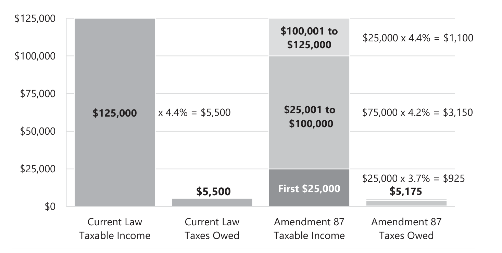
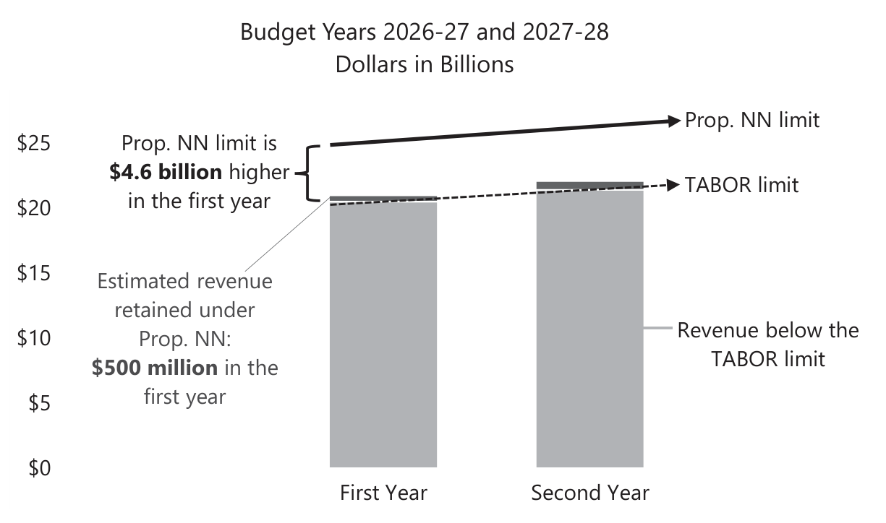
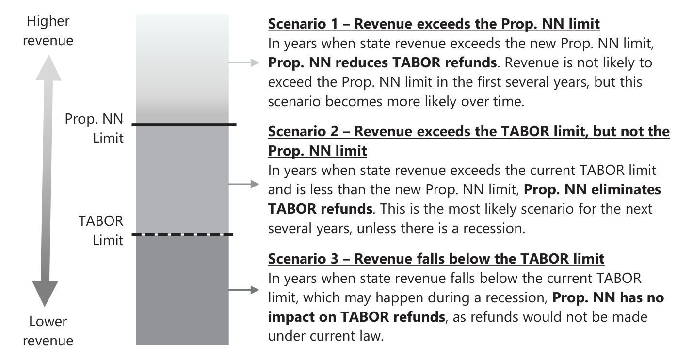
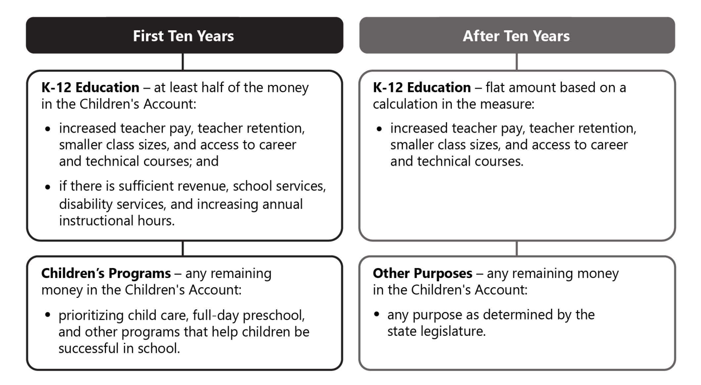
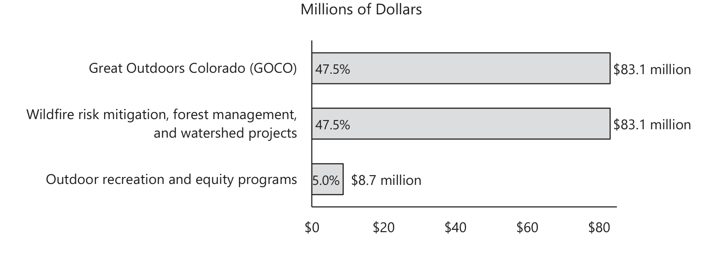

Official Summaries
These summaries were taken directly from the Colorado 2026 ballot information booklet.
Amendment 81: Law Enforcement Communication with Federal Immigration Authorities
Passes with 55 percent of the vote
Ballot Title
Shall there be an amendment to the Colorado Constitution requiring law enforcement to notify the department of homeland security when a person is charged with either a violent crime or any crime if the person has a prior felony conviction if law enforcement cannot determine that the person is lawfully present in the United States?
Amendment 81 proposes amending the Colorado Constitution to:
- require state and local law enforcement to make a reasonable effort to determine whether an individual charged with a crime is lawfully present, if the charge is a crime of violence or the individual has a prior felony conviction; and
- notify federal immigration authorities within 72 hours of filing charges if law enforcement cannot determine that the charged individual is lawfully present in the United States.
See also: Claude analysis.
What Your Vote Means
A “yes” vote on Amendment 81 requires law enforcement to notify federal immigration authorities after filing certain criminal charges against individuals who are not confirmed to be lawfully present.
A “no” vote on Amendment 81 maintains current law, which allows cooperation with federal immigration authorities in some criminal matters, but limits state and local law enforcement involvement in civil immigration enforcement.
Summary and Analysis of Amendment 81
What does the measure do?
Amendment 81 requires certified peace officers employed by a law enforcement agency, correctional officers, and district attorney personnel to notify the federal Department of Homeland Security (DHS) within 72 hours of charging someone with a crime if the charge is a crime of violence or if the individual has a prior felony conviction. The notification requirement applies if the charged individual is not lawfully present in the United States, or if their lawful status cannot be determined.
Which individuals are subject to notification?
The measure applies to an individual charged with, but not yet convicted of, a crime of violence, which are crimes causing serious bodily harm or death to another person, or involving the use of a deadly weapon. This includes crimes such as murder, assault, arson, escape, extortion, kidnapping, aggravated robbery, and certain sexual offenses and human trafficking.
The measure also applies to individuals with any prior felony conviction, regardless of when it occurred, who are charged with any type of crime—including traffic violations, petty offenses, misdemeanors, and felonies.
In all cases, the measure applies once the individual is formally charged with a crime, not at the time of arrest, and before any legal process has determined whether they are guilty or innocent.
What is current law related to communication with federal immigration authorities?
Colorado law currently permits state and local law enforcement to cooperate in the enforcement of federal criminal law, but limits state and local participation in civil immigration enforcement. Among other restrictions, state and local government agencies and employees are prohibited from sharing certain nonpublic personal information with federal immigration authorities, unless directed by federal law, a court order, or a judicial warrant. Employees who violate these prohibitions may be subject to a fine of up to $50,000. However, neither federal nor state law require law enforcement agencies to notify federal immigration authorities when unlawfully present individuals are charged with crimes. State and local authorities do not currently track or publish data on how many unlawfully present individuals are charged with crimes of violence or are charged with any crime after a prior felony conviction.
What authority do local governments have to engage with federal immigration authorities?
Unless prohibited by state law, local governments have the authority to determine their level of cooperation and communication with federal immigration authorities. For example, the City and County of Denver expanded upon state law by prohibiting federal immigration authorities from accessing city-controlled property like courthouses. Conversely, El Paso County requires officers to notify federal immigration authorities if they suspect that an individual in their custody does not have legal status.
Arguments For Amendment 81
- Violent individuals and repeat offenders residing in the United States unlawfully should be reported to federal immigration authorities for further enforcement action, which could include removal from the country. The measure increases communication and coordination between Colorado law enforcement and federal immigration authorities to identify individuals who may pose a threat to public safety, without targeting those who are otherwise law-abiding and contribute positively to society.
- The measure creates a new uniform statewide standard for cooperation with federal immigration authorities. Consistent requirements across jurisdictions improve enforcement and reduce variation among local policies, thus improving public safety and allowing the criminal justice system to work efficiently and effectively in removing potential criminals from the country.
Arguments Against Amendment 81
- The measure undermines the constitutional right to due process and the presumption of innocence by requiring local law enforcement to report individuals to DHS and Immigration and Customs Enforcement (ICE) before a court determines whether the individual committed a crime. Criminal charges are allegations, not findings of guilt, and individuals should not face potentially life-altering immigration consequences, including deportation, before receiving a fair trial. People who are legally present or who are found to not have committed any crime could be swept up in immigration enforcement actions if they are unable to prove their status in the measure’s strict 72-hour timeframe.
- The measure is too broad to be enforced equitably and consistently, which erodes trust between law enforcement and their communities. By failing to define key terms such as “reasonable effort” or “lawful presence,” enforcement is left up to the discretion of individual officers, who may rely on subjective characteristics such as language spoken or personal appearance when deciding to review a person’s legal status. This breakdown in trust may deter some individuals from reporting crimes, cooperating with investigations, or seeking assistance for fear of subjecting themselves or members of their community to immigration enforcement.
Information about the organizations supporting and opposing this measure is available on the Colorado Secretary of State’s website:
www.coloradosos.gov/pubs/elections/Initiatives/ballot/contacts/2026.html
Fiscal Impact of Amendment 81
State Spending
In state budget year 2026-27, state spending and workload will increase for agencies that employ law enforcement officers. Two departments require system updates: the Department of Revenue requires $50,000 to access federal databases and make programming changes, and the Department of Natural Resources requires $10,000 to update computer systems. The measure does not specify a funding source to pay for these costs and it is assumed that they will be paid from the General Fund. Workload may also increase in these departments, as well as the departments of Higher Education, Human Services, Judicial, Law, and Public Safety, to the extent they are required to determine a charged individual’s immigration status and communicate with the federal government on affected cases; however, this work will be primarily conducted by local governments.
Local Government Spending
Local law enforcement agencies, including police, district attorney offices, and Regional Transportation District officers, will have increased workload and potential spending. As with the state, the added workload involves determining a charged individual’s immigration status and communicating with the federal government on affected cases. Because this determination happens after charges are filed, most of the workload will fall on district attorney offices. The amount of work will vary by jurisdiction depending on how many individuals are charged there. Spending, if incurred, will be on systems updates.
Amendment 82: Constitutional Right to Purchase and Sell Natural Gas
Passes with 55 percent of the vote
Ballot Title
Shall there be an amendment to the Colorado Constitution creating new law granting the right for consumers to purchase natural gas for cooking or heating in homes or businesses and for distributors and utilities to sell natural gas to consumers?
Amendment 82 proposes amending the Colorado Constitution to:
- establish a constitutional right for consumers to purchase natural gas for cooking or heating; and
- establish a constitutional right for distributors and utilities to sell natural gas for use in homes and businesses.
See also: Claude analysis.
What Your Vote Means
A “yes” vote on Amendment 82 establishes a state constitutional right to purchase and sell natural gas for use in homes and businesses.
A “no” vote on Amendment 82 maintains current law and regulations related to the purchase and sale of natural gas.
Summary and Analysis of Amendment 82
What is natural gas and how is it currently used in homes and businesses?
Natural gas is a fossil fuel comprised primarily of methane. It can be used to power appliances such as furnaces, water heaters, clothes dryers, stoves, and ovens for both residential and commercial properties. Other common household energy sources in Colorado include electricity and propane, which can be used to power these same appliances.
Does Colorado currently regulate natural gas for use in homes and businesses?
The state regulates investor-owned natural gas utilities through the Public Utilities Commission (PUC), including rates, safety, and clean heat plans. In December 2025, the PUC issued a rule requiring these utilities to submit plans for a 41 percent reduction in greenhouse gas emissions by 2035, compared to 2015 levels, which align with emission targets in state law. The Colorado Department of Public Health and Environment regulates air pollution and sets emissions standards for natural gas appliances.
Local governments may also regulate the installation and repair of natural gas service, delivery, pipelines, and appliances. Several municipalities in Colorado have restricted the installation of natural gas appliances in new construction or certain renovation projects. For example, the Town of Crested Butte recently updated its building code, requiring that new residential buildings use electricity for heating, hot water heaters, and other appliances.
Will the measure change natural gas laws in Colorado?
This measure will establish the right to purchase and sell natural gas for homes and businesses in the state constitution. By doing so, it may limit the ability for state or local governments to enforce existing or future regulations related to natural gas.
Argument For Amendment 82
- Natural gas is an affordable and widely available energy source that reliably heats homes and businesses, including during periods of extreme cold. Natural gas appliances are proven technologies, and most households in Colorado rely on natural gas as their primary heating source. This measure will ensure continued access to natural gas without interference from state or local governments.
Argument Against Amendment 82
- Using natural gas contributes to climate change through emitting greenhouse gases, leads to air pollution, and should not be protected in the state constitution. Doing so limits efforts to reduce greenhouse gas emissions, improve air quality, and adopt more sustainable options, such as wind, solar, and geothermal energy. Local communities should have the ability to make decisions about public health priorities, energy needs, and climate goals.
Information about the organizations supporting and opposing this measure is available on the Colorado Secretary of State’s website:
www.coloradosos.gov/pubs/elections/Initiatives/ballot/contacts/2026.html
Fiscal Impact of Amendment 82
State Spending
The measure may minimally increase expenditures for state agencies, primarily the Department of Local Affairs, to revise technical assistance to local governments concerning building codes that conflict with the right to purchase or sell natural gas. The measure may also increase workload and legal services for state agencies that regulate or monitor emissions from natural gas utilities or intervene in those cases, including the Public Utilities Commission, the Department of Natural Resources, the Department of Public Health and Environment, and the Colorado Energy Office.
Local Government Spending
Local governments that currently have or are considering building codes that regulate, prohibit or restrict natural gas in commercial and residential development may have increased legal services and costs to conform the codes with state law, and to modify permitting, inspection, and compliance activities.
Amendment 83: Constitutional Right to Hunt and Fish
Passes with 55 percent of the vote
Ballot Title
Shall there be an amendment to the Colorado Constitution creating a constitutional right to hunt, fish, and harvest fish and wildlife by traditional methods, including all species of fish and wildlife managed by the state except non-game species, endangered species, or any species that is illegal to hunt under federal law, and, in connection therewith, establishing hunting and fishing as the preferred means of managing fish and wildlife populations; and preserving the right of the state to regulate hunting, fishing, and wildlife management if necessary for sound scientific wildlife conservation and management, public safety, or to preserve the future of hunting and fishing opportunities for all species?
Amendment 83 proposes amending the Colorado Constitution to:
- establish a constitutional right to fish and hunt certain wildlife; and
- create a policy that states hunting and fishing are the preferred means of managing fish and wildlife populations in Colorado.
See also: Claude analysis.
What Your Vote Means
A “yes” vote on Amendment 83 establishes a state constitutional right to hunt and fish.
A “no” vote on Amendment 83 means that hunting and fishing will continue as allowed under existing state and federal law.
Summary and Analysis of Amendment 83
What does Amendment 83 do?
Amendment 83 establishes a right in the Colorado Constitution to fish and hunt certain wildlife, and establishes hunting and fishing as the preferred means of managing fish and wildlife populations.
The right applies to traditional hunting and fishing methods. It does not apply to species that are not typically hunted or fished (nongame species), endangered species, or any species that is illegal to hunt under federal law. This measure does not change existing laws related to trespassing on private property. It allows the state to regulate hunting, fishing, and wildlife management if necessary for sound scientific reasons, public safety, or to preserve future hunting and fishing opportunities.
How does Colorado currently manage and regulate fish and wildlife?
Colorado Parks and Wildlife (CPW) is the state agency responsible for fish and wildlife management in Colorado and administers regulations for hunting and fishing, as adopted by the CPW Commission, a citizen board appointed by the Governor. State law requires wildlife and their environment to be protected, preserved, enhanced, and managed for the use, benefit, and enjoyment of the people and visitors of Colorado.
Current regulations on hunting and fishing include:
- where and when hunting and fishing can occur;
- license and permit requirements;
- methods and materials for hunters and anglers; and
- limits on how many animals can be hunted, fished, or trapped.
Regulations are generally guided by information on wildlife and fish populations, species and habitat management plans, and recreational opportunities and needs.
How does this measure affect existing and future hunting and fishing regulations?
The measure results in no immediate change to existing state law or regulations. Hunting and fishing will continue to be allowed under existing state and federal law and regulations. Creating a new constitutional right to hunt and fish may affect how the legislature or CPW Commission makes policies about hunting and fishing, and it could lead to changes depending on how courts interpret the language of the measure when reviewing existing or future policies.
Argument For Amendment 83
- This measure provides lasting protection against future attempts to restrict or eliminate hunting and fishing, and Colorado should join the 24 other states that similarly protect the right to hunt and fish in their state constitutions. Additionally, hunting and fishing are part of Colorado’s heritage and cultural identity and are important to its tourism and recreation economy. Revenue from hunting and fishing licenses benefits habitat and wildlife management efforts in all areas of the state, with one-third of CPW’s current annual revenue, about $115 million, coming from license sales.
Argument Against Amendment 83
- The state constitution should protect fundamental rights and not recreational activities. Colorado is already a leader in wildlife conservation and management. Enshrining a right to hunt and fish in the Colorado Constitution is unnecessary, and it promotes one method of managing wildlife above others. This measure may restrict the ability to place guardrails on hunting, fishing, and trapping. Further, the use of undefined, vague language could prompt costly legal challenges and undermine reasonable regulations that voters, state lawmakers, and CPW have already put in place.
Information about the organizations supporting and opposing this measure is available on the Colorado Secretary of State’s website:
www.coloradosos.gov/pubs/elections/Initiatives/ballot/contacts/2026.html
Fiscal Impact of Amendment 83
State Spending
The measure is not expected to significantly change state spending in the near term, but could result in increased legal costs for the state as the new right to hunt and fish is applied. Specifically, CPW may have increased workload and costs for legal advice when developing new rules and regulations to ensure that they comply with the measure. In addition, if legal challenges to the constitutionality of new or existing hunting and fishing regulations occur, CPW spending on litigation costs will increase. The exact amount of these potential costs cannot be estimated because they depend on the actions of private parties and decisions by the courts.
Amendment 84: Mail Ballot Voter Identification
Passes with 55 percent of the vote
Ballot Title
Shall there be an amendment to the Colorado Constitution requiring a voter to sign and include the last four digits of their social security number or their Colorado driver’s license or identification card number on the outside of their mail ballot for any federal or state election, and, in connection therewith, allowing the voter to correct missing or incorrect information, including with alternative forms of identification; and prohibiting a county clerk and recorder from counting the mail ballot unless the problem is fixed?
Amendment 84 proposes amending the Colorado Constitution to:
- require voters to provide identification information, in addition to their signature, for their mail ballots to be counted.
See also: Claude analysis.
What Your Vote Means
A “yes” vote on Amendment 84 requires voters to provide identification information with their mail ballot, in addition to their signature.
A “no” vote on Amendment 84 continues the current signature-only verification system for mail ballots.
Summary and Analysis of Amendment 84
What does this measure do?
For federal and statewide elections, the measure requires voters to include the last four digits of a government-issued identification number when submitting their mail ballot. Acceptable forms of identification are a social security number, a Colorado driver’s license number, or a Colorado identification card number. Any form of Colorado identification provided must be compliant with the federal Real ID law. This new verification process created by the measure is in addition to the current signature verification process for mail ballots.
If a voter’s identification information is missing or cannot be matched to the state voter registration database, the county election office must contact the voter to tell them how to correct the discrepancy. Consistent with the existing signature verification process, the ballot will not be counted unless the voter takes steps within eight days of election day to confirm their identify. Specifically, a voter may submit a copy of one of the forms of identification allowed under the measure. Alternately, a voter may provide a copy of a U.S. passport, a U.S. military identification card, or a tribal photo identification card. During this process, identification may be provided in-person or digitally. Voters with qualifying physical disabilities or elderly voters who are entitled under federal law to vote by mail may submit a broader range of acceptable forms of identification.
What is the role of mail ballots in Colorado elections?
Every Colorado voter receives a mail ballot for federal and statewide elections. Coloradans can vote by returning their mail ballot at a drop box or through the mail, or they may vote in person at any voter service and polling center in their county. In 2024, 92 percent of all ballots cast in Colorado were mail ballots, most of which were returned to a drop box.
How are mail ballots verified under current law?
Colorado currently uses signature verification to determine that mail ballots come from eligible voters. When a voter returns a mail ballot, they must sign the envelope. Once the ballot is received by the county election office, the signature on the envelope is then compared to the voter’s signature on file from election and driver’s license records. If a signature discrepancy is found, the signature is then reviewed by two election judges of different political parties. If they both agree that the signature likely does not belong to the voter, the county election office must contact the voter to have them confirm their identity and that they submitted the ballot. If the voter does not confirm their identity within eight days after election day, the ballot is not counted.
Does the measure affect the allowable forms of identification for in‑person voting?
No. The measure does not change the forms of identification that may be presented when voting in person at a voter service and polling center. The allowable forms of identification for in-person voting are broader than those required for mail ballots under this measure, including documents that show a person’s name and address.
Argument For Amendment 84
- Additional voter verification for mail ballots strengthens election security while preserving convenient access to voting. Government-issued identification documents are more consistent and less subjective than the current signature verification process. Most voters already have an eligible identification card, or know their social security number. If a voter does not have one of the required forms of identification to complete their mail ballot, they can choose to vote in person using several identification options. Adding a convenient form of additional verification for mail ballots promotes public confidence that ineligible ballots will not be counted.
Argument Against Amendment 84
- The measure adds an unnecessary burden to voting, without meaningfully improving election security. The measure could result in eligible voters’ ballots not being counted due to minor mistakes when submitting their mail ballot. Further, voters who have privacy concerns about providing sensitive information when submitting their ballot or who are unable to produce the required identification will be discouraged from using mail ballots, which is Colorado’s most commonly used and convenient method of voting. The current signature verification process is effective, secure, and convenient for voters and it successfully identifies the rare cases when ineligible individuals attempt to submit a mail ballot.
Information about the organizations supporting and opposing this measure is available on the Colorado Secretary of State’s website:
www.coloradosos.gov/pubs/elections/Initiatives/ballot/contacts/2026.html
Fiscal Impact of Amendment 84
The measure will increase state and local spending by up to $2.7 million in the initial budget year 2026-27, and $1.2 million annually in future years for voter outreach, printing, and election staff to verify voter information. These costs will be divided between state and local governments as discussed below.
Local Government Spending
The new verification process under the measure will increase county spending by up to $2.5 million in the 2026-27 budget year and up to $1.2 million in future years. About 45 percent of these county costs will be reimbursed by the state government. These costs are driven from several new requirements under the measure. First, election judges must review identification numbers provided by voters, which will increase staffing hours and overtime during elections. Second, county election offices must notify voters of any discrepancies involving their identification information, which will require sending a postcard or digital notification to voters and segregating ballots until valid identification is provided. Lastly, county election offices will also be required to update ballot materials and envelopes, modify various elections systems, and conduct voter outreach.
State Spending
The Department of State will have increased costs to inform voters of the changes to mail voting across the state and to reimburse counties. Specifically, the department will need to conduct an outreach and communication campaign at a cost of $100,000 in state budget year 2026-27 and $200,000 in state budget year 2027-28. The department will also have ongoing workload and costs for outreach and printed materials estimated at $20,000 for each presidential primary, statewide primary, and general election. As discussed above, the state will also have costs to reimburse counties for a portion of their costs under the measure. This reimbursement is estimated to be up to $1.1 million in during the 2026-27 budget year, and up to $500,000 for in future years. Historically, these costs have been paid using fees and other revenue collected by the department, rather than from the state General Fund.
State Revenue
To cover the costs in the Department of State discussed above, business filing fees may need to be raised to cover all or some of the costs of this measure. The fees affected, the timing of any increase, and the actual amount of fee charges will be set administratively by the department based on its available fund balance and total program costs.
Amendment 85: Plain Language Ballot Titles
Passes with 55 percent of the vote
Ballot Title
Shall there be an amendment to the Colorado Constitution concerning ballot question language, and, in connection therewith, requiring all state and local ballot questions to be written in plain language and at no more than an 8th grade reading level and prohibiting a state statute from requiring language that conflicts with these requirements in ballot questions for citizen-initiated measures?
Amendment 85 proposes amending the Colorado Constitution to:
- require that ballot titles be in plain language, written at no more than an eighth-grade reading level; and
- prohibit laws that require specific language in initiative ballot titles, if the laws interfere with plain language in the ballot title.
See also: Claude analysis.
What Your Vote Means
A “yes” vote on Amendment 85 requires that ballot titles be written in plain language, defined as an eighth-grade reading level, and prohibits any law from interfering with this requirement.
A “no” vote on Amendment 85 maintains current law, which requires plain language for ballot titles, but does not specify a particular grade-level reading standard.
Summary and Analysis of Amendment 85
How do measures appear on the ballot and how are ballot titles written?
A person may propose a new law or change to existing laws through the initiative process. Through this process, the change may be placed on the ballot if the person collects enough signatures from registered voters.
Before collecting signatures, every initiative receives a ballot title written by the state Title Board. The board is made up of representatives from the Attorney General’s office, the Secretary of State’s office, and the legislature’s legal office. The ballot title is a brief statement intended to fairly and accurately represent the intent and meaning of an initiative.
State law requires that the Title Board write ballot titles that are brief and help voters understand the effect of a “yes” or “no” vote on the measure. The board must write titles in plain language, that are understandable by the widest possible audience, and that avoid legal, technical, or specialized terminology, when possible.
The state legislature may also refer measures to the ballot. When the legislature refers a measure, the legislature writes the ballot title. State law requires that bills and bill titles be written in plain, nontechnical language, use words with common meaning, and be understandable to the average reader.
What does Amendment 85 do?
Amendment 85 requires that all ballot titles be in plain language, written at no more than an eighth-grade reading level. The measure does not define plain language or designate who will determine if ballot titles meet the standard. An eighth-grade reading level is described as one that is easily and fully understood by a majority of people. This typically includes short sentences, familiar words, and a conversational tone.
Amendment 85 also prohibits laws requiring citizen initiatives to include language in the ballot title that may interfere with the plain language requirement. The ballot titles for measures referred by the state legislature are not subject to this prohibition. There are several current laws that require additional language in ballot titles. For example, if a citizen initiative raises or lowers state taxes, the initiative’s title must include specific language describing the changes and the impact on taxpayers. For citizen initiatives that reduce tax collections, the title must include an estimate of potential state spending reductions and how reduced revenue might impact the three largest areas of government spending.
Arguments For Amendment 85
- While ballot titles are supposed to be written as plainly as possible, this measure provides additional guidance as to what that means by requiring an eighth-grade reading level as the standard. Providing a constitutional standard will help in crafting simple titles that voters may better understand when considering their vote, and may help them to navigate complicated and technical information when trying to understand a measure’s impact.
- The measure creates a constitutional protection against the state legislature interfering with plain language in initiative ballot titles. Citizen initiatives are a way for the public to pass laws without restrictions created by the legislature. This measure ensures that no future legislature may add laws or change existing laws to create complicated or confusing initiative ballot titles.
Arguments Against Amendment 85
- This measure is unnecessary as state law already provides ample guidance for the preparation of ballot titles in plain language. Ballot titles must convey important information to voters about complex policies. This measure creates a constitutional standard with no guidance about how its requirements are different from current law. This could lead to more challenges of initiative ballot titles, impacting the initiative process.
- This measure puts vague and undefined language in the constitution, which could prevent the creation of laws to help voters better understand the effects of ballot measures. Laws that add language to ballot titles could be prohibited, even if that language provides critical information for voters. The measure may lead to challenges of existing laws that help voters understand how their vote affects state and local programs and funding.
Information about the organizations supporting and opposing this measure is available on the Colorado Secretary of State’s website:
www.coloradosos.gov/pubs/elections/Initiatives/ballot/contacts/2026.html
Fiscal Impact of Amendment 85
State Spending
The Title Board includes representatives from the Department of State, the Attorney General’s Office, and the General Assembly. The measure may minimally increase workload for the Title Board to update its standards for plain language and what constitutes an eighth-grade reading level and to apply these standards when setting titles for citizen-initiated ballot measures.
Amendment 86: Requirements for Off‑Cycle Congressional Redistricting
Passes with 55 percent of the vote
Ballot Title
Shall there be an amendment to the Colorado Constitution concerning congressional redistricting, and, in connection therewith, reenacting the current process for congressional redistricting in the Colorado Constitution and prohibiting modifications to a final map unless at least three public meetings are held, the modifications do not have the effect of dividing communities of interest or purposefully favoring one political party, and are approved by the congressional redistricting commission and the Colorado Supreme Court?
Amendment 86 proposes amending the Colorado Constitution to:
- require the Colorado Independent Congressional Redistricting Commission and the Colorado Supreme Court to review and approve any proposed changes to congressional districts outside of a scheduled redistricting year; and
- prohibit off-cycle changes to congressional districts that intentionally favor any political party or unnecessarily divide communities.
See also: Claude analysis.
What Your Vote Means
A “yes” vote on Amendment 86 requires the Colorado Independent Congressional Redistricting Commission to approve any new congressional districts proposed outside of a scheduled redistricting year.
A “no” vote on Amendment 86 continues the current requirements for changing congressional districts every ten years.
Summary and Analysis of Amendment 86
What is congressional redistricting?
Colorado currently has eight congressional districts, which are regions of the state divided to be equal in population and meet other criteria. One person is elected from each of the eight districts to represent Colorado in the U.S. House of Representatives. Congressional redistricting is the process of dividing the state into congressional districts. It usually occurs after a census, which is when all the people in the United States are counted every ten years. Using the state’s population of 5.8 million as of the 2020 census, the current required congressional district population size is 721,714 people.
How is redistricting done in Colorado?
In 2018, Colorado voters amended the Colorado Constitution to create the Colorado Independent Congressional Redistricting Commission (commission). Every ten years, a new commission is formed and is charged with using the population figures from the U.S. Census Bureau, specific legal criteria, and public input from around the state to draw Colorado’s congressional districts. The last commission was formed and completed its work in 2021, and the next commission will meet and create new districts in 2031.
What is off-cycle redistricting?
Off-cycle redistricting means changing the boundaries of congressional districts between the regular redistricting periods. The current redistricting process, protected in the Colorado Constitution, is designed for redrawing congressional and legislative districts immediately following the census and does not establish a process specifically for off-cycle redistricting. Since 2025, at least ten states have changed their congressional district maps through off-cycle redistricting.
What does Amendment 86 do?
Amendment 86 requires that any off-cycle redistricting, if it were to occur, be approved by the commission and adopted by the Colorado Supreme Court. Before approving any changes, the commission must hold at least three public hearings. The measure also prohibits off-cycle changes to congressional districts that intentionally favor a political party or unnecessarily divide communities of interest. Any such redistricting efforts would require the use of population figures from the most recent census or another data source.
Argument For Amendment 86
- Amendment 86 protects public participation in any off-cycle changes to congressional districts and ensures that changes are reviewed through a fair and transparent process. Requiring the commission to review districts, and not allowing districts to favor a single political party, keeps partisan politics out of the process. This affirms the voters’ intent in creating an independent commission, which was overwhelmingly approved in a 2018 statewide election. Across the nation, politicians have attempted to change districts in their favor with limited public input. Amendment 86 safeguards the redistricting process in Colorado.
Argument Against Amendment 86
- If Colorado voters ever want to enact new congressional districts in an off-cycle redistricting year, this measure stands in their way. Whether new districts are in response to partisan redistricting in other states, changes in political priorities, or other concerns with Colorado’s congressional districts, this measure creates an unnecessary constitutional barrier. Further, if voters feel that the districts created by the commission during the regularly scheduled redistricting no longer meet the needs of the state, that same commission should not play a role in the process. Voters should always have the final word on whether Colorado’s congressional districts still reflect the state’s needs.
Information about the organizations supporting and opposing this measure is available on the Colorado Secretary of State’s website:
www.coloradosos.gov/pubs/elections/Initiatives/ballot/contacts/2026.html
Fiscal Impact of Amendment 86
State Spending
The measure increases costs in the Legislative Department by about $370,000 in any year that the commission must convene and review changes to congressional maps outside of its usual redistricting schedule. The costs are to staff the commission, provide reimbursement for commissioners, and hire legal counsel. The Judicial Department will also have a small workload increase to review any new maps.
Amendment 87: Graduated Income Tax
Passes with a majority vote
Ballot Title
SHALL STATE TAXES BE INCREASED $2.7 BILLION ANNUALLY, IN ORDER TO INCREASE OR IMPROVE LEVELS OF PUBLIC SERVICES, INCLUDING K-12 PUBLIC SCHOOL EDUCATION, HEALTH CARE, AND EARLY CHILD CARE AND EDUCATION SERVICES, BY AN AMENDMENT TO THE COLORADO CONSTITUTION AND A CHANGE TO THE COLORADO REVISED STATUTES REPEALING EXISTING LAW AND CREATING NEW LAW TO REPLACE THE UNIFORM STATE INCOME TAX RATE WITH A GRADUATED INCOME TAX STRUCTURE, AND, IN CONNECTION THEREWITH, AMENDING THE TAXPAYER’S BILL OF RIGHTS TO ELIMINATE THE CONSTITUTIONAL REQUIREMENT FOR ALL TAXABLE NET INCOME TO BE TAXED AT ONE RATE WITH NO ADDED TAX ON INCOME; ESTABLISHING VARIOUS INCOME TAX RATES BASED ON THE AMOUNT OF TAXABLE INCOME EARNED BY INDIVIDUALS, ESTATES, TRUSTS, AND CORPORATIONS, WHILE MAINTAINING THE CURRENT 4.4% TAX ON INCOME FROM THE SALE OF A PRINCIPAL RESIDENCE, WHICH WILL RESULT IN THE ESTIMATED CHANGE IN INCOME TAXES OWED BY INDIVIDUALS AS IDENTIFIED IN THE FOLLOWING TABLE; AND AUTHORIZING THE STATE TO RETAIN AND SPEND ANY INCREASED REVENUE FROM THE NEW TAX STRUCTURE, AS A VOTER-APPROVED REVENUE CHANGE, TO SUPPLEMENT CURRENT LEVELS OF FUNDING FOR K-12 PUBLIC SCHOOL EDUCATION, HEALTH CARE, AND EARLY CHILD CARE AND EDUCATION PROGRAMS?
Amendment 87 Change in Income Taxes Owed by Income Category
| Income Categories | Current Average Income Tax Owed | Proposed Average Income Tax Owed | Proposed Change in Average Income Tax Owed if Passed + or - |
|---|---|---|---|
| $25,000 or less | $59 | $50 | -$9 |
| $25,001 - $50,000 | $751 | $632 | -$119 |
| $50,001 - $100,000 | $1,877 | $1,666 | -$210 |
| $100,001 - $200,000 | $4,126 | $3,828 | -$298 |
| $200,001 - $500,000 | $9,344 | $9,019 | -$325 |
| $500,001 - $1,000,000 | $19,288 | $18,963 | -$325 |
| $1,000,001 - $2,000,000 | $29,432 | $34,196 | +$4,764 |
| $2,000,001 - $5,000,000 | $41,196 | $55,110 | +$13,914 |
Income categories use adjusted gross income reported to the federal Internal Revenue Service.
Amendment 87 proposes amending the Colorado Constitution and Colorado statutes to:
- remove the constitutional requirement that the state income tax be set at a single flat rate;
- replace the current flat income tax with a graduated state income tax that sets lower rates for lower incomes and higher rates for higher incomes;
- spend the additional revenue collected from these income tax rate changes on K-12 education, health care, and early childhood care and education; and
- exempt additional revenue collected under the measure from the state’s constitutional revenue limit.
See also: Claude analysis.
What Your Vote Means
A “yes” vote on Amendment 87 creates a graduated state income tax that increases revenue; uses the additional money for K-12 education, health care, and early childhood care and education; and exempts additional revenue collected from the state’s constitutional revenue limit.
A “no” vote on Amendment 87 keeps the current constitutional requirement for a flat state income tax rate.
Summary and Analysis of Amendment 87
What does Amendment 87 do?
The measure replaces the state’s current flat income tax rate for individuals and businesses with a graduated income tax that lowers taxes for taxable income below $500,000 and raises taxes for taxable income above $500,000. It requires that the additional money collected from this change be spent on K-12 education, health care, and early childhood care and education, and exempts this money from the state’s constitutional revenue limit, also known as the Taxpayer’s Bill of Rights (TABOR) limit. The state must produce an audited annual report on how much additional revenue was collected and how it was spent.
What is the state’s current income tax structure?
Since 1987, Colorado has had a flat income tax rate, in which all taxpayers, including individuals and businesses, pay the same income tax rate on their income. The state’s current flat income tax rate is 4.4 percent. The majority of state income tax revenue is used for general state programs and services. The TABOR amendment in the state constitution requires that income be taxed at a flat rate.
Income tax is paid on a portion of a household’s or business’s income, which is called taxable income. For example, a married couple earning $42,000 in income per year may have about $10,000 in taxable income and owe $440 in taxes annually. A married couple earning $130,000 in income per year may have about $100,000 in taxable income and owe $4,400 in taxes annually.
What is the graduated income tax structure proposed in Amendment 87?
Amendment 87 removes the constitutional requirement that income be taxed at a flat rate and creates a graduated income tax starting in 2027. In this graduated tax system, an individual’s or business’s income is split into six ranges—called brackets—with the lowest income tax bracket taxed at the lowest rate and each higher bracket taxed at increasing rates, as shown in Table 1.
This is similar to how the federal income tax works. Unlike the federal income tax, the new state income tax brackets are not adjusted for inflation, so more of taxpayers’ incomes will fall into the higher brackets over time. Each tax rate is only applied to the portion of taxable income that falls into that bracket.
Table 1 Graduated Income Tax Rates by Income Bracket Under Amendment 87
| Taxable Income Bracket | Current Tax Rate | Amendment 87 Tax Rate | Difference |
|---|---|---|---|
| $25,000 or less | 4.4% | 3.7% | -0.7 |
| $25,001 to $100,000 | 4.4% | 4.2% | -0.2 |
| $100,001 to $500,000 | 4.4% | 4.4% | 0.0 |
| $500,001 to $750,000 | 4.4% | 7.4% | +3.0 |
| $750,001 to $1,000,000 | 4.4% | 7.9% | +3.5 |
| More than $1,000,000 | 4.4% | 8.4% | +4.0 |
For example, as shown in Figure 1 below, an individual or business earning $125,000 a year in taxable income is taxed at a rate of 3.7 percent for the first $25,000. The next portion of taxable income between $25,000 and $100,000 is taxed at a rate of 4.2 percent. The remaining $25,000 is taxed at the rate of 4.4 percent. The total tax owed under the measure would be $5,175, or $325 less than the $5,500 they would owe under current law.
Figure 1: Tax Rates and Taxes Owed for a Taxpayer with $125,000 in Taxable Income

How does Amendment 87 change the amount of taxes owed?
For individuals and businesses with taxable incomes of less than $500,000, the measure decreases the amount of income taxes owed, up to a maximum reduction of $325 per taxpayer. For taxpayers with incomes of about $500,000 and above, the measure increases the amount of income taxes owed.
Table 2 shows an example of taxes owed under the measure and under current law for seven hypothetical taxpayers with different levels of taxable income.
Table 2 Taxes Owed Under Current Law and Amendment 87
| Example Taxable Income | Current Income Tax Owed | Amendment 87 Income Tax Owed | Difference in Income Tax Owed |
|---|---|---|---|
| $25,000 | $1,100 | $925 | -$175 |
| $62,500 | $2,750 | $2,500 | -$250 |
| $125,000 | $5,500 | $5,175 | -$325 |
| $300,000 | $13,200 | $12,875 | -$325 |
| $550,000 | $24,200 | $25,375 | +$1,175 |
| $625,000 | $27,500 | $30,925 | +$3,425 |
| $875,000 | $38,500 | $50,050 | +$11,550 |
| $2,000,000 | $88,000 | $143,925 | +$55,925 |
How does Amendment 87 change state revenue?
By changing tax rates for individuals and businesses, Amendment 87 is expected to increase state income tax revenue by an estimated $2 billion in the first full year and more in later years. However, actual revenue collections may be more or less than this estimate depending on economic conditions and other factors.
The change in state revenue under the measure is calculated as the difference between the actual income tax revenue collected under the measure’s graduated income tax rates and the income tax revenue that would have been collected under the state’s current rate of 4.4 percent. See the Fiscal Impact section below for additional detail.
Does Amendment 87 impact TABOR refunds?
The measure has no impact on current TABOR refunds or TABOR refund mechanisms. Under current law, the state is expected to collect $15 billion in income tax revenue in 2028. Under this measure, it is expected to collect $2 billion more in income tax revenue, for a total of $17 billion. The additional $2 billion is exempt from the TABOR limit. The TABOR limit and the amount of revenue subject to the limit remain the same, and estimated TABOR refunds will not change. For additional information, see the LCS memorandum titled, “A Brief Overview of the TABOR Revenue Limit.”[^1]
How will the additional revenue be spent?
The increased revenue collected under Amendment 87 must be spent on K-12 education, health care, and early childhood care and education. It must add to, and not replace, spending on those services. The state legislature will decide what specific programs will receive additional funding and how much.
What happens if Amendment 87 and Proposition 136 both pass?
Proposition 136 limits the state income tax rate at the current law rate of 4.4 percent. If both Amendment 87 and Proposition 136 are approved by voters, the proposed tax rates for income over $500,000 in Amendment 87 would be higher than the 4.4 percent limit in Proposition 136.
Generally, when parts of voter-approved measures conflict, the policy outcome is determined by the measure that received more votes. However, if both measures are approved by voters, the exact outcome is unclear. The state legislature or a court will need to determine how to resolve any conflicts.
[^1]: Online at: leg.colorado.gov/bluebook
Arguments For Amendment 87
- Amendment 87 cuts taxes for 97 percent of taxpayers, including most households and small businesses, while increasing taxes only for top earners who have the ability to pay. A graduated income tax is more equitable than a flat tax because it recognizes a fundamental economic reality: each dollar taxed on someone earning $30,000 imposes a far greater hardship than each dollar taxed on someone earning $1 million. By aligning tax rates with taxpayers’ financial means, a graduated tax distributes the burden more justly across all income levels, lowers taxes for most households and small businesses, and puts more money in the hands of working families who will spend it in their local communities.
- The measure funds critical services at a time when additional funding is desperately needed. Crucial programs are at risk of further cuts because of changes in federal policy. Revenue from the graduated tax will fund education, health care, and child care, public services that many Colorado households rely on. Colorado public schools are significantly underfunded, and constraints on the state budget make Medicaid cuts increasingly likely. Additional funding will provide more security for the people who depend on these services.
- The graduated income tax is not an experiment, but a proven approach for funding essential public services. The federal government and 27 other states already have a graduated income tax. This tax structure lessens rising wealth inequality and increases funding for state programs. Sales and property taxes place greater burdens on lower-income households, and a graduated income tax corrects for this inequity while also funding services for all Coloradans.
Arguments Against Amendment 87
- The measure is a multibillion-dollar tax increase, and hiking taxes on higher incomes will harm Colorado’s economy. Higher tax rates make Colorado a less competitive place to start and grow a business, and may encourage some high earners to leave the state entirely. When businesses and high-earning individuals relocate, people at all income levels may lose their jobs. Further, because the brackets do not increase with inflation, more and more taxpayers will pay these higher taxes each year. Colorado cannot risk employers and jobs fleeing the state because our taxes are too high. Keeping taxes competitive for everyone fuels economic activity and builds a stronger, more prosperous Colorado for all.
- The measure is an attack on the fair and predictable tax system that TABOR currently guarantees. The state’s current flat tax is fair because everyone has equal access to state services, high-income earners already pay more taxes, and low-income earners qualify for more tax deductions and credits. The state should better prioritize the tens of billions of dollars it already collects, rather than switch to a new, complicated tax system.
- The measure will permanently expand the size of government, increase careless and wasteful spending of taxpayer dollars, and hinder economic growth. Instead of spending billions of dollars more on broadly defined government services, state policy should focus on lowering taxes for everyone or funding specific programs that are proven to help Colorado’s residents.
Information about the organizations supporting and opposing this measure is available on the Colorado Secretary of State’s website:
www.coloradosos.gov/pubs/elections/Initiatives/ballot/contacts/2026.html
Fiscal Impact of Amendment 87
Taxpayer Impacts
Amendment 87 will decrease the amount of income tax owed by taxpayers with Colorado taxable income of less than $510,834 and increase the amount of income tax owed by taxpayers with Colorado taxable income of $510,834 and above. State law requires Legislative Council Staff to estimate the potential tax burden on affected taxpayers within specified federal adjusted gross income categories. Federal adjusted gross income is total income from all sources, with certain adjustments, as determined when filing federal income taxes. Colorado taxable income, calculated when filing state income taxes, is based on federal adjusted gross income with additional adjustments required or allowed under state law. Table 3 shows the expected change in tax burden by federal adjusted gross income category. The measure has no impact on current TABOR refunds or TABOR refund mechanisms.
Table 3 Estimated Impact on Taxpayers by Income
| Income Category | Estimated Number of Taxpayers | Total Change in Tax Burden | Average Change in Tax Burden |
|---|---|---|---|
| $14,999 or less | 579,309 | -$638,951 | -$1 |
| $15,000 to $29,999 | 408,924 | -$16,093,434 | -$39 |
| $30,000 to $39,999 | 272,616 | -$29,611,480 | -$109 |
| $40,000 to $49,999 | 238,539 | -$38,651,945 | -$162 |
| $50,000 to $69,999 | 443,000 | -$85,925,358 | -$194 |
| $70,000 to $99,999 | 408,912 | -$93,232,609 | -$228 |
| $100,000 to $149,999 | 408,912 | -$115,554,178 | -$283 |
| $150,000 to $199,999 | 238,532 | -$77,522,900 | -$325 |
| $200,000 to $249,000 | 102,228 | -$33,224,100 | -$325 |
| $250,000 to $499,999 | 204,456 | -$66,448,200 | -$325 |
| $500,000 to $999,999 | 55,900 | -$15,893,609 | -$284 |
| $1,000,000 or more | 46,328 | $1,208,468,497 | +$26,085 |
Income is federal adjusted gross income, not Colorado taxable income; therefore, the income ranges and tax rates do not align with those in Table 2. The estimated number of taxpayers column counts joint filers as one taxpayer. Estimates are based on Colorado Department of Revenue data for all residents for tax year 2023 and Legislative Council Staff estimates.
State Revenue
By replacing the state flat income tax with a graduated income tax, the measure increases revenue from income taxes by an estimated $958.4 million in budget year 2026-27, $1.972 billion in budget year 2027-28, and increasing amounts in future years based on income and population growth. The estimate for budget year 2026-27 represents a half-year impact for tax year 2027. The additional revenue will be credited to the Colorado Future’s Account created in the measure. The increased revenue is exempt from TABOR as a voter-approved revenue change. The state budget year begins each July 1 and ends on June 30.
State law requires Legislative Council Staff to include an estimate of the maximum dollar amount of the change in state government revenue for the first full fiscal year of a proposed tax increase. This is the number that appears in the ballot question. The estimates in the previous paragraph represent the revenue impact of the measure under the current Legislative Council Staff revenue forecast. Based on forecast error that could occur, the maximum dollar amount of the change in state government revenue and fiscal year spending for budget year 2027-28 is estimated as an increase of $2.7 billion.
State Spending
The measure increases the amount of state revenue available to spend for the purposes identified in the measure, including K-12 education, health care, and early childhood care and education, in FY 2026-27 and future fiscal years. To administer the tax rate change, the measure is expected to increase one-time spending in the Department of Revenue by $98,000.
School District Revenue and Spending
The measure increases available state funding to school districts. The exact amount distributed to school districts will depend on decisions made by the General Assembly when allocating money from the Colorado Future’s Account.
State Spending and Tax Increases
Article X, Section 20, of the Colorado Constitution requires that the following fiscal information be provided when a tax increase question is on the ballot:
- estimates or actual amounts of state fiscal year spending for the current year and each of the past four years with the overall percentage and dollar change; and
- for the first full year of the proposed tax increase, estimates of the maximum dollar amount of the tax increase and of fiscal year spending without the increase.
“Fiscal year spending” is a legal term in the Colorado Constitution. It equals the amount of revenue subject to the constitutional spending limit that the state or a district is permitted to keep and either spend or save for a single year. Table 4 shows state fiscal year spending for the current year and each of the past four years.
Table 4 State Fiscal Year Spending
| Fiscal Year | Actual FY 2022-23 | Actual FY 2023-24 | Actual FY 2024-25 | Actual FY 2025-26 | Estimated FY 2026-27 |
|---|---|---|---|---|---|
| Fiscal Year Spending | $16.66 billion | $18.07 billion | $19.15 billion | $19.84 billion | $20.50 billion |
Four-Year Dollar Change in State Spending: $3.85 billion Four-Year Percent Change in State Spending: 23.1 percent
Table 5 shows the maximum revenue expected from the income tax increase in Amendment 87 for FY 2027-28, the first full fiscal year for which the tax increase would be in place, and an estimate of state fiscal year spending without the tax increase.
Table 5 Estimated State Fiscal Year Spending and the Proposed Tax Revenue Increase
| FY 2027-28 Estimate | |
|---|---|
| Fiscal Year Spending Without the Tax Increase | $24.62 billion |
| Revenue Increase from Increased Income Taxes | $2.7 billion |
Proposition NN: Keep and Spend Money for Education and Other Purposes
Passes with a majority vote
Ballot Title
Shall state investment in K-12 public education increase two percent each year for the next ten years, with investments used to increase teacher pay, improve teacher retention, lower class sizes, and increase access to career and technical courses, without raising taxes but instead funded by raising the annual limit on state fiscal year spending only by the amount spent on public K-12 education as a voter-approved revenue change, and requiring an annual publicly released, independent audit to show how the new investments are spent?
Proposition NN proposes amending the Colorado statutes to
- allow the state to keep some or all of the revenue that the state’s constitutional revenue limit, also known as the Taxpayer’s Bill of Rights (TABOR), would otherwise require to be refunded to taxpayers, up to the amount the state spends on public education; and
- spend the retained revenue to increase funding for K-12 education and programs that support children, and, after ten years, K-12 education and any other purposes to be determined by the state legislature.
See also: Claude analysis.
What Your Vote Means
A “yes” vote on Proposition NN allows the state to keep some or all of the revenue that otherwise would be refunded to taxpayers under TABOR. The retained revenue must be spent on K-12 education, programs that support children, and any other purposes.
A “no” vote on Proposition NN maintains current TABOR refunds and funding levels for K-12 education, programs that support children, and other state purposes.
Summary and Analysis of Proposition NN
What does Proposition NN do?
Proposition NN allows the state to keep and spend revenue that would otherwise be refunded to taxpayers under TABOR, up to a newly established limit. The new limit is higher than the current limit and is based on the amount the state government spends on public education.
In the first ten years, this revenue must be spent on K-12 education and programs that support children. After ten years, the retained revenue must be spent on K-12 education and other purposes to be determined by the state legislature. The measure dedicates the K-12 education spending to teacher pay and retention, smaller class sizes, career and technical courses, school services, disability services, and more instructional hours, as described below. The retained revenue also must be spent to reimburse local governments for property tax exemptions, as required under current law.
The measure includes requirements for the state auditor and school districts to report on how the retained money is spent.
What is the TABOR limit and what are TABOR refunds?
The Colorado Constitution limits the amount of revenue the state government can collect each year. The limit is equal to the prior year’s limit, adjusted for inflation plus population growth. This is known as the TABOR limit. Voters may give the state permission to keep and spend additional revenue above the TABOR limit.
If the amount of revenue the state collects in any year is above the TABOR limit, the excess amount must be refunded to taxpayers. These are called TABOR refunds, and they are distributed to taxpayers in several ways. For more information, see the Legislative Council Staff memorandum titled, “A Brief Overview of the TABOR Revenue Limit.”[^1]
TABOR refunds are often distributed when people file their taxes, but they are different from tax refunds that are owed when people overpay their taxes. Tax refunds are not affected by this measure.
How much revenue will the state keep and spend under Proposition NN?
Under Proposition NN, the maximum amount the state may keep is equal to the current TABOR limit, plus the highest amount the state has spent on K-12 education from certain funding sources in previous years. This is referred to as the Proposition NN limit in this analysis.
The actual amount the state will keep depends on how much revenue it collects. For example, in the first year, the measure allows the state to keep up to $4.6 billion above the current TABOR limit. However, the state is estimated to actually keep about $500 million, which is the amount of revenue the state is expected to collect above the TABOR limit. This is shown in Figure 1 below.
Figure 1 State Revenue Limits Under Proposition NN

The Proposition NN limit continues indefinitely. Any revenue above the new Proposition NN limit must be refunded to taxpayers.
In later years, the Proposition NN limit is expected to grow faster than the current TABOR limit based on the amount the state legislature allocates for K-12 education. State revenue is expected to continue to be well below the Proposition NN limit in the next several years, and is not expected to exceed the Proposition NN limit for at least the next five to ten years. Long-term projections beyond that period are uncertain.
How does Proposition NN impact TABOR refunds?
Proposition NN’s impact on TABOR refunds depends on how much money the state collects above the current TABOR limit in a given year, and how much the state spent on public education in prior years. Figure 2 shows the range of possible TABOR refund impacts, which will vary from year to year.
Under current estimates, revenue in the next several years is expected to exceed the current TABOR limit but not the new Proposition NN limit, which would eliminate TABOR refunds in these years, as described in Scenario 2 in the figure below.
Figure 2 Scenarios for TABOR Refund Changes

How will the retained revenue be spent?
Proposition NN specifies how revenue retained above the current TABOR limit must be spent. The revenue must first be used to reimburse local governments for the lost tax revenue from property tax exemptions for seniors, veterans with a disability, and Gold Star surviving spouses, as is already required as a TABOR refund mechanism under current law. All remaining revenue is deposited into the newly created Children’s Account. Figure 3 shows new spending requirements under Proposition NN.
Figure 3 New Spending Requirements Under Proposition NN

How will the K‑12 funding be used?
Money in the Children’s Account must first be used for increased teacher pay and retention, access to career and technical courses, and smaller class sizes. This money will be distributed to school districts and charter schools that then decide how to spend this money within allowable uses. They must post downloadable, sortable information online about how they spent the money.
The amount required to be spent for these purposes will grow each year for ten years, and then remain flat in later years. The amount is expected to be about $110 million in the first year, $220 million in the second year, and may grow to between $1 billion and $2 billion per year by the end of ten years. These amounts are only paid if enough revenue is retained.
For the first ten years, if the amount spent on teacher pay and retention, career and technical courses, and smaller class sizes is less than half the amount in the account, then the measure requires additional spending on disability services, school services, and increasing instructional hours, such that at least half the amount in the account is spent on K-12 education overall. Funding for disability services, school services, and increasing instructional hours is estimated at about $130 million in the first year and $20 million in the second year. The state legislature will determine how to allocate these funds to schools and districts.
How will the money for children’s programs be used?
In the first ten years, any money remaining in the account after K-12 spending must be spent on programs that support children, prioritizing full-day preschool, child care, and other programs that help children be successful in school. The state legislature will determine how to spend this money, which is estimated to be about $240 million in the first year and $230 million in the second year.
How will funding allocations change after the first ten years?
After ten years, the measure requires that a flat amount be dedicated to K-12 education each year for increased teacher pay and retention, access to career and technical education, and smaller class sizes. Any remaining money in the Children’s Account may be spent on any purpose as determined by the state legislature.
How does Proposition NN interact with other measures?
Proposition 137 reduces the amount of revenue the state collects that is subject to the TABOR limit. This measure will not affect the Proposition NN limit. However, if the measure passes, the amount of money the state will actually keep and spend under Proposition NN may be reduced or eliminated.
[^1]: Online at: leg.colorado.gov/bluebook
Arguments For Proposition NN
- Proposition NN raises teacher pay, reduces class sizes, and improves career and technical education, benefitting every school district in the state. A state study found that Colorado’s schools face a funding shortfall of $3.5 billion, or about $4,000 per pupil. Proposition NN redirects money the state already collects to Colorado’s kids and classrooms, keeping experienced teachers in the classroom and expanding course options and support. The measure pairs the investment schools need with the accountability taxpayers deserve.
- Proposition NN frees up funds that should already be supporting Colorado’s children. The price of educating and caring for a child grows year after year, and the current revenue limit does not keep pace. As a result, the state is falling behind on the services that families depend on most. Permanent relief from this limit is long overdue. Proposition NN uses existing revenue to address the real and rising costs of child care, universal preschool, and other early childhood needs.
Arguments Against Proposition NN
- Proposition NN is essentially a tax increase, permanently eliminating or reducing TABOR refunds. TABOR refunds are a taxpayer right. Eliminating or sharply reducing those refunds means that government will keep more of the money that families earn. For households already stretched thin, losing TABOR refunds is a significant financial hit. TABOR was enshrined in the state constitution to protect taxpayers against unchecked government growth.
- Proposition NN eventually hands the state over $5 billion per year at the expense of Colorado families. Funding for Colorado schools has increased 25 percent over the last five years, while enrollment continues to decline. Before reaching deeper into taxpayers’ pockets, the government should demonstrate it has exhausted every avenue to reduce wasteful spending, eliminate redundant programs, and deliver existing services more efficiently.
Information about the organizations supporting and opposing this measure is available on the Colorado Secretary of State’s website:
www.coloradosos.gov/pubs/elections/Initiatives/ballot/contacts/2026.html
Fiscal Impact of Proposition NN
Taxpayer Impacts
Proposition NN is expected to reduce the amount refunded to taxpayers by $329.9 million in the current 2026-27 budget year, $521.0 million in the 2027-28 budget year, and by varying amounts in future years. This eliminates TABOR refunds for budget years 2026-27 and 2027-28. Table 1 shows estimated TABOR refunds under Proposition NN for certain income levels.
Table 1 Estimated TABOR Refunds for Certain Income Levels
| Adjusted Gross Income | 2027 Refund Current Law: Single Filers | 2027 Refund Current Law: Joint Filers | 2027 Refund Prop. NN: All Filers | 2028 Refund Current Law: Single Filers | 2028 Refund Current Law: Joint Filers | 2028 Refund Prop. NN: All Filers |
|---|---|---|---|---|---|---|
| $50,000 | $21 | $42 | $0 | $39 | $58 | $0 |
| $75,000 | $28 | $56 | $0 | $58 | $86 | $0 |
| $100,000 | $28 | $56 | $0 | $68 | $96 | $0 |
| $200,000 | $38 | $76 | $0 | $121 | $162 | $0 |
| $500,000 | $65 | $130 | $0 | $276 | $352 | $0 |
Note: This table assumes that taxpayers claim the standard deduction and no other deductions. This table shows TABOR refunds for individual taxpayers, not corporations. Corporations are not expected to receive TABOR refunds in 2027, and are expected to receive smaller TABOR refunds than individuals at the same income level in 2028.
A forecast of state revenue subject to TABOR is not available beyond budget year 2027-28. The impact of Proposition NN on TABOR refunds will vary significantly across different years, such that it could have no impact on TABOR refunds in some years and reduce them by over $1,000 per taxpayer in other years. The actual amount that the measure reduces TABOR refunds will depend on how much money the state collects above the current TABOR limit in future years.
State Spending
The measure increases state spending by an estimated $329.9 million in budget year 2026-27 and $521.0 million in budget year 2027-28 on net, and by varying amounts in future years. Changes in state spending are shown in Table 2.
Table 2 Changes in State Spending Under Proposition NN
| Use | Current Year 2026‑27 | Budget Year 2027‑28 |
|---|---|---|
| Property Tax Reimbursements | $0 | $206.1 million |
| K-12 Education | $241.5 million | $234.0 million |
| Programs That Support Children | $241.5 million | $234.0 million |
| General Government Purposes | -$153.1 million | -$153.1 million |
| Office of State Auditor | $0 | $20,000 |
| Total Change in Spending | $329.9 million | $521.0 million |
As shown in Table 2, $153.1 million that would be available for the general state budget under current law is instead deposited in the Children’s Account for budget years 2026-27 and 2027-28 only. This reduces General Fund spending in each of these two years.
Long‑term spending. After ten years, there is no longer a requirement for half of the money in the account to be spent on K-12 education and half on children’s programs. Beginning in the 2036-37 budget year, the measure increases state spending for property tax reimbursements and funding for teacher pay and retention, smaller class sizes, and career and technical education. Any remaining funds may be used for any purposes as determined by the state legislature.
School Districts
Proposition NN increases state funding for school districts by an estimated $241.5 million in budget year 2026-27 and $234.0 million in budget year 2027-28. Funding for teacher pay and retention, smaller class sizes, and career and technical education will be distributed based on each school district’s percentage of statewide school finance funding under the state’s new school finance formula. Funding for school services, disability services, and increasing annual instructional hours will be distributed in a manner determined by the state legislature.
Proposition 132: Increase Penalties for Fentanyl Crimes
Passes with a majority vote
Ballot Title
Shall there be a change to the Colorado Revised Statutes concerning criminal penalties for fentanyl and certain synthetic opioids, and, in connection therewith, increasing the felony classifications of drug-related crimes for distribution, manufacturing, dispensing, sale, or possession of fentanyl and certain synthetic opioids; creating mandated treatment for certain drug felony violations based on possession amount; and changing sentencing provisions to narrow or eliminate exemptions for crimes related to fentanyl and certain synthetic opioids and drug-related deaths?
Proposition 132 proposes amending the Colorado statutes to:
- increase penalties for possession and distribution, including the selling, transfer or sharing, of any amount of certain synthetic opioids, commonly known as fentanyl; and
- eliminate the possibility of reduced penalties for certain possession and distribution offenses with mitigating circumstances.
See also: Claude analysis.
What Your Vote Means
A “yes” vote on Proposition 132 makes possession of any amount of fentanyl a felony, requires a mandatory minimum 8-year prison sentence for any quantity of fentanyl distribution, and eliminates options to reduce penalties for certain possession and distribution offenses.
A “no” vote on Proposition 132 keeps minor possession charges of fentanyl a misdemeanor, maintains tiered felony penalties for fentanyl distribution based on drug quantity, and keeps options to reduce penalties for certain possession and distribution offenses.
Summary and Analysis of Proposition 132
What is fentanyl?
The term “fentanyl” refers to a type of potent synthetic opioid. Fentanyl is used medically for pain relief, but possessing or distributing fentanyl without a prescription is illegal. Fentanyl has become the leading cause of drug overdose deaths in both Colorado and the United States because it can be fatal in very small amounts and is often mixed into other illicit drugs without a user’s knowledge. Fentanyl belongs to a class of potent synthetic opioids with similar characteristics. The measure impacts fentanyl along with these related drugs.
What are the current penalties for fentanyl offenses in Colorado?
Penalties for fentanyl offenses are based on the type and quantity of the drug, and whether the offense involved personal use or intent to distribute. Current penalties range from court-ordered treatment, fines, and probation to time in prison. State law specifies which fentanyl offenses require prison sentences, which qualify for alternative penalties and reduced charges, or are subject to judicial discretion. The severity of the penalty also depends on the weight of the substance involved. A “substance” includes the total weight of any mixture containing fentanyl rather than the amount of fentanyl itself.
Who can and cannot go to prison under current law?
The most serious fentanyl-related drug crimes mandate a minimum prison sentence of 8 years up to a maximum of 32 years. This includes offenders who:
- distributed to a minor;
- distributed more than 50 grams of a substance; or
- distributed at least 4 grams of a substance that caused death.
In other cases, state law allows for sentences such as probation and treatment, and prohibits state prison for offenders who either:
- possessed less than 1 gram of a substance with no intent to distribute and do not have multiple past fentanyl convictions;
- possessed between 1 to 4 grams of a substance with no intent to distribute and provided evidence they were unaware the substance contained fentanyl; or
- distributed less than 4 grams and were eligible for “Good Samaritan” protections that reduce criminal penalties for reporting an overdose and staying until help arrives.
When prison time is neither mandated nor prohibited by state law, a judge may determine a sentence within a penalty range. In these scenarios, the judge may consider the unique circumstances of the case, including if the offender was aware of fentanyl in the substance, criminal history, risk to public safety, acceptance of responsibility, or any other circumstance that is relevant to consider at sentencing. Judges may also reduce or modify a penalty in exchange for successful completion of treatment.
How will penalties change under Proposition 132?
Proposition 132 increases criminal penalties for fentanyl offenses by expanding felony charges for possession and distribution, imposing longer prison sentences, and limiting judicial discretion.
For those convicted of distributing any amount of fentanyl, the measure requires a prison sentence of between 8 and 32 years. It eliminates the possibility for reduced penalties in “Good Samaritan” cases involving distribution.
The measure also makes possession of any amount of fentanyl a felony. However, if a person possesses less than one gram and successfully completes court-ordered drug rehabilitation treatment, the felony charge may be reduced to a misdemeanor. Individuals charged with a felony for possessing more than one gram are no longer eligible for this reduction, but the measure keeps “Good Samaritan” penalty reductions for other low-level possession offenses. Although not mandated, the measure permits varying lengths of imprisonment for possession.
Judicial discretion is limited by imposing mandatory minimum prison sentences for fentanyl distribution cases. Additionally, courts must order treatment for individuals charged with possessing less than one gram of a substance containing fentanyl, regardless of the circumstances. Finally, judges may not consider mitigating factors, such as whether an offender reasonably believed the substance did not contain fentanyl.
Table 1 compares fentanyl offense sentencing between current law and Proposition 132.
Table 1 Fentanyl Offense Prison Sentencing under Current Law and Proposition 132
| Offense | Sentencing under Current Law | Sentencing under Proposition 132 |
|---|---|---|
| Distribution over 50g | Mandatory, 8-32 years in prison. | Mandatory, 8-32 years in prison. |
| Distribution 4-50g | Possible, 4-8 years in prison. Increased charges for distribution resulting in death or distribution to a minor. | Mandatory, 8-32 years in prison. |
| Distribution under 4g | Possible, 2-4 years in prison. Increased charges for distribution to a minor; reduced charges for “Good Samaritan” actions. | Mandatory, 8-32 years in prison. |
| Possession 1-4g | Possible, 0.5-1 year in prison. Reduced charges for reasonable deniability or completing alternative sentencing, such as treatment. | Possible, 2-4 years in prison. |
| Possession under 1g | No prison time. Increased charges for multiple past convictions; reduced charges for reasonable deniability or completing alternative sentencing, such as treatment. | Possible, 0.5-1 year in prison. Eligible for reduced charges for completing mandatory treatment. |
Argument For Proposition 132
- Fentanyl is highly potent and deadly, and it warrants stronger penalties than other drugs. The measure targets drug traffickers with harsher sentences and disrupts the distribution of fentanyl, including when it is mixed into other substances. Mandated prison sentences for drug dealers are likely to enhance public safety by keeping them off the street, as well as provide victims and their families with a greater sense of justice. The measure also increases accountability for drug users and may deter fentanyl use, which could help reduce overdose deaths. Proposition 132 demonstrates Colorado’s commitment to addressing fentanyl-related crime.
Argument Against Proposition 132
- Proposition 132 is unlikely to reduce fentanyl use, lower crime rates, or prevent overdose deaths. Individuals may be discouraged from seeking addiction treatment, or calling for emergency assistance during overdoses, due to fear of criminal prosecution and prison time. The measure treats people who distribute trace amounts of fentanyl as major drug dealers. In addition, longer prison sentences are expensive and would shift resources away from underfunded treatment programs, education, and other public services and toward an already overcrowded and understaffed prison system.
Information about the organizations supporting and opposing this measure is available on the Colorado Secretary of State’s website:
www.coloradosos.gov/pubs/elections/Initiatives/ballot/contacts/2026.html
Fiscal Impact of Proposition 132
State Revenue
Proposition 132 increases state revenue to the Judicial Department by $23,000 in the first year, and $73,000 in the second and future years from additional criminal fines due to the measure’s increase in crime classification.
State Spending
Proposition 132 increases state spending to cover increased criminal justice system costs for the courts, public defenders, and prisons. These costs are paid from the state General Fund. Specifically, the measure increases state spending in the first budget year by $0.9 million to pay for costs in the courts and for public defenders. In the second year, state spending under the measure is estimated to increase to $8.9 million as more individuals are sent to prison for distributing or possessing. Prison costs will continue to increase as individuals are incarcerated for longer periods of time. By year five, total state spending is estimated to increase by $68.2 million. In addition, due to the estimated increase in the future prison population, the state may need to construct or contract for additional prison space.
The measure does not specify a funding source to pay for this increased criminal justice-related spending, and it is assumed that these costs will be paid from the General Fund. While the measure may reduce money available for other uses (the three largest of which are Health Care Policy and Financing, Education, and Higher Education), the effect of the measure on other programs is unknown and will depend on future budgeting decisions by the state legislature.
Local Government
Similar to the state, costs will increase for county-funded district attorneys to prosecute longer cases with enhanced penalties.
Proposition 133: Penalties for Human Trafficking of a Minor
Passes with a majority vote
Ballot Title
Shall there be a change to the Colorado Revised Statutes modifying existing law concerning human trafficking of a minor for sexual servitude, and, in connection therewith, creating new law expanding human trafficking of a minor for sexual servitude to include knowingly trading anything of monetary value to buy or sell sexual activity with a minor and increasing the penalty to be life in prison without parole or release?
Proposition 133 proposes amending the Colorado statutes to:
- mandate a sentence of life in prison without parole for child sex trafficking convictions; and
- expand child sex trafficking to include buying sexual activity with a minor.
See also: Claude analysis.
What Your Vote Means
A “yes” vote on Proposition 133 increases the penalties for child sex trafficking to life in prison without parole, and expands child sex trafficking to include buying sexual activity with a minor.
A “no” vote on Proposition 133 keeps the existing felony criminal penalties for child sex trafficking with a sentencing range of 8 to 48 years in prison plus a mandatory parole period.
Summary and Analysis of Proposition 133
What is child sex trafficking?
Under Colorado law, human trafficking of a minor for sexual servitude, or child sex trafficking, occurs when an adult forces or makes a minor available for commercial sexual activity in exchange for money or other compensation. Child sex trafficking is one of many sex crimes with which a buyer or seller may be charged. Legally, a minor cannot consent to commercial sexual activity. Current law provides legal defenses and protections for individuals charged with this crime who are victims of sex trafficking.
How does Proposition 133 change the crime of child sex trafficking?
Proposition 133 increases the penalty for child sex trafficking to life in prison without the possibility of parole, and removes judicial discretion in sentencing. It also adds exchanging anything of value to buy or sell sexual activity to the list of acts included in child sex trafficking. If convicted of this crime, buyers and sellers will receive a life sentence.
Table 1 outlines the current penalties for those convicted of child sex trafficking and the penalties if Proposition 133 is approved. The table reflects the range of potential penalties under current law, but the actual sentence would depend on the specifics of the crime and the outcome of the trial.
Table 1 Current and Proposed Penalties for Child Sex Trafficking
| Policy | Felony Classification | Penalties |
|---|---|---|
| Current Law | Class 2 felony | 8 to 48 years in prison and mandatory 5 years parole |
| Proposition 133 | Class 1 felony | Life in prison without parole |
Argument For Proposition 133
- Child sex trafficking causes serious and long-lasting harm to victims. Someone who commits this terrible crime deserves a life sentence instead of a shorter prison term or probation. The punishment outlined in the measure is clear, definite, and ensures that offenders cannot hurt more children. With this change, victims will have no doubt that child sex trafficking offenders are punished to the fullest extent of the law. The measure helps deter people from engaging in child sex trafficking and sends a strong message that Colorado takes these crimes seriously. Proposition 133 makes certain that justice is served, children are protected, and victims are shielded from punishment and further harm.
Argument Against Proposition 133
- Harsher sentences are unlikely to deter human trafficking, but may instead result in punishing victims. Many victims of child sex trafficking are pressured or forced to commit crimes to help traffickers. Due to the fear of a life sentence, victims may be less likely to report these crimes or cooperate with police. Additionally, a judge would no longer be able to consider the facts of the case when sentencing someone convicted of child sex trafficking. The measure prioritizes punishment over prevention, and redirects resources from other strategies that combat child sex trafficking. Proposition 133 is unlikely to stop child sex trafficking or protect victims.
Information about the organizations supporting and opposing this measure is available on the Colorado Secretary of State’s website:
www.coloradosos.gov/pubs/elections/Initiatives/ballot/contacts/2026.html
Fiscal Impact of Proposition 133
State Spending
The measure increases future state spending in the Colorado Department of Corrections (CDOC). Costs for the measure are estimated to begin in about 14 years. Initial costs are estimated at $180,000 in budget year 2041-42, and grow by that amount for several years thereafter. This would be an increase of $360,000 in budget year 2042-43, $540,000 in budget year 2043-44, and so on. These costs are not adjusted for inflation. Eventually, the increase will stabilize as the costs of new offenders staying longer are offset by a decrease in costs from life sentences ending due to an offender dying or potentially receiving a commutation or pardon.
The cost increase results from persons convicted of child sex trafficking serving a life sentence instead of a fixed term. It takes years for the first affected offenders to reach the point in their original sentence where they would have been paroled under current law, and that is when the added cost starts. This cost estimate reflects current sentencing data and values for state-run prison beds; actual costs will likely be higher in the future due to inflation, and if more individuals are convicted of child sex trafficking than under current law. Notably, costs for medical care will grow separately as offenders age in prison.
In addition, workload in the trial courts and agencies that provide representation to indigent offenders in the Judicial Department will minimally increase as cases with enhanced penalties generally take longer to process than cases with lesser penalties.
The measure does not specify a funding source to pay for the increased spending in the CDOC and it is assumed that these costs will be paid from the state General Fund. While the measure may reduce money available for other uses (the three largest of which are Health Care Policy and Financing, Education, and Higher Education), the likely effect of the measure on other programs is unknown and will depend on future budgeting decisions by the state legislature.
Local Government Spending
Similar to the state, workload will minimally increase for county-funded district attorneys to prosecute longer cases with enhanced penalties.
Proposition 134: Male and Female Participation in School and Collegiate Sports
Passes with a majority vote
Ballot Title
Shall there be a change to the Colorado Revised Statutes creating new law restricting participation in all K-12 and collegiate school sports based on the participant’s sex as determined by certain aspects of their biological reproductive system, and, in connection therewith, requiring a school, institution of higher education, or athletic association to designate each school or intramural athletic team or sport as male, female, or coeducational; only allowing participants to compete on the team or sport of their designated sex or to compete on a coeducational team; creating an exception to allow a female to participate on a male-designated team or sport if there is no female team available; prohibiting a government entity, licensing or accrediting organization, or athletic association from entertaining a complaint, opening an investigation, or taking other adverse action against a school for maintaining separate teams or sports for females; and providing the commissioner of education with the authority to enforce the proposed initiative for K-12 school districts?
Proposition 134 proposes amending the Colorado statutes to:
- require that all elementary through collegiate school-based athletic teams and sports be designated as male-only or female-only based on biological sex, unless the team or sport is designated as open to participation by individuals of any sex or gender;
- require schools and school districts to implement policies to ensure that students are assigned to gender-designated teams that align with their biological sex; and
- prohibit investigations of, or penalties for, a school that designates a team or sport as female-only.
See also: Claude analysis.
What Your Vote Means
A “yes” vote on Proposition 134 means that all school-based athletic teams and sports must be designated as being for biological males or biological females only, or as mixed, and requires schools and school districts to adopt policies on sex eligibility for sports.
A “no” vote on Proposition 134 means that individual schools, school districts, and athletic associations may continue to set their own policies in alignment with current state and federal law about who is eligible to participate on a team or in a sport.
Summary and Analysis of Proposition 134
What does the measure do?
The measure requires that any school-based team or sport be explicitly designated as being:
- for biological males only;
- for biological females only; or
- coeducational or mixed.
Under the measure, students must compete on teams that match their biological sex or on a coeducational team. Biological females are allowed to participate on a team or sport designated for biological males if there is no equivalent female team offered for that sport. Participation on a coeducational or mixed team or sport is open to all. In addition, the measure prohibits any government entity, licensing or accrediting organization, or athletic association from investigating or penalizing a school for designating a team or sport as being only for biological females.
How does the measure define biological males and females?
The measure defines biological sex in terms of production of reproductive cells. ”Male” is defined as children or adults whose biological reproductive system is organized around the production of sperm cells. “Female” is defined as children or adults whose biological reproductive system is organized around the production of ova, or egg cells. The measure does not impose a specific method for determining or demonstrating biological sex. Individual schools or school districts must determine their own verification procedures.
What teams does the measure apply to?
The measure applies to all teams and sports organized by schools or athletic associations, including teams that compete against other schools, in-house intramural sports, and after-school programs sponsored by schools. Schools include all public, charter, private, and religious school teams and sports from elementary through high school, and all public or private colleges, universities, and community colleges. Athletic associations are defined in the measure as organizations that administer extracurricular athletic competitions for schools. The measure does not apply to youth sports and leagues that operate separately from schools.
The governing body of every school or district must adopt a policy implementing the requirements established by the measure. For public K-12 schools, if a school district does not follow the measure’s requirements, the state Commissioner of Education must first notify the district of its noncompliance. If the school district does not respond to this notification with a good-faith attempt to comply, then the commissioner must take corrective action. The measure does not establish an enforcement mechanism for private K-12 schools, colleges and universities, or athletic associations that do not adhere to the measure’s requirements.
How does the measure interact with state and federal anti‑discrimination law?
The Colorado Anti-Discrimination Act (CADA) prohibits discrimination in employment, housing, and places of public accommodation based on a person’s sex, sexual orientation, gender identity, and gender expression. Public K-12 schools, colleges, and universities may not exclude students from extracurricular activities that align with their gender identity, even if their gender identity is different from their biological sex. It is unclear at this time how the measure will impact current state law.
At the federal level, Title IX of the Education Amendments of 1972 prohibits sex-based discrimination in federally funded education programs. Courts and presidential administrations have interpreted Title IX in a variety of ways, sometimes including and sometimes excluding gender identity under the definition of “sex.” On February 5, 2025, the President issued Executive Order 14201, “Keeping Men Out of Women’s Sports,” which directs federal agencies to interpret Title IX as prohibiting biological males from participating on teams or in sports designated as being for biological females. States that do not adhere to federal policy may face cuts in federal funding, and state laws or policies that conflict with federal law may face legal challenges from the federal government. At least seven Colorado schools and school districts have adopted policies restricting biological males who identify as female from participating in female sports. In June 2026, the U.S. Supreme Court ruled that Title IX permits states to adopt laws that maintain separate male and female sports based on biological sex.
How do athletic associations currently address this issue?
The Colorado High School Activities Association (CHSAA), the association that oversees high school sports, recognizes a right for transgender athletes to participate in school activities. Its rules allow CHSAA to review schools’ athletic eligibility decisions for transgender students. In 2025, eight schools and school districts in Colorado filed a federal lawsuit challenging CHSAA rules and CADA requirements related to classification of sports teams by sex. The group of schools and districts and CHSAA reached a settlement agreement in December 2025 that allows schools to maintain separate sports teams and facilities for biological males and biological females without being penalized or sanctioned by CHSAA. However, the portion of the lawsuit challenging CADA is still ongoing.
At the collegiate level, the National Collegiate Athletic Association (NCAA) rules state that competing in female sports is limited to student athletes who are assigned female at birth, and student athletes assigned male at birth cannot receive athletic scholarships designed for females, regardless of their gender identity. The NCAA rules do not apply to intramural collegiate sports.
Arguments For Proposition 134
Females should be able to compete against other females. Allowing biological males to participate on female teams creates an unfair advantage for the males and can prevent female athletes from achieving wins, records, podium spots, and scholarship opportunities. The measure protects the accomplishments of female athletes and creates a consistent, statewide standard for participation on female teams. Without uniform rules, female athletes across the state compete under different policies and conditions, resulting in an uneven playing field. The measure ensures that all female athletes can compete fairly no matter where they live.
Allowing biological males to participate on female teams or in female sports jeopardizes the safety and physical and emotional boundaries of female athletes. Regardless of one’s gender identity, genetic differences between biological males and biological females can affect physical strength, stature, lung capacity, muscle tone, and growth. Males and females are separated in certain sports due to the physical differences between the sexes and the risk for injury. Beyond the field of play, shared locker rooms raise privacy concerns. The measure creates a reasonable policy grounded in biological sex that promotes the safety of all participants.
Arguments Against Proposition 134
The measure does not protect fairness; it turns athletic eligibility into a body inspection and manufactures new grounds for discrimination. It could subject many athletes, not just those who are transgender, to uncomfortable physical inspections. Mandating a statewide eligibility standard, but not a clear method for determining eligibility, will require schools and districts to create their own separate policies, which will likely lead to unfair and uneven treatment of student athletes across the state. Some athletes may be forced to undergo invasive or expensive testing to prove their biological sex, while others may be able to simply provide a note from a doctor. Certain athletes could even be targeted for additional testing based on their physical strength, appearance, or athletic success.
School sports should be a space where all kids can build confidence, health, and belonging and have the opportunity to learn teamwork, leadership, and goal setting. Targeting an at-risk group of students by preventing them from playing on teams with their peers and instead requiring them to play on teams that do not match their gender identity leads to harassment, shame, embarrassment, and feelings of isolation and exclusion. The measure’s rigid participation standards apply to kids of all ages and abilities, affecting even young children who just want to play on teams with their friends and peers and are not competing for championships or scholarships.
Information about the organizations supporting and opposing this measure is available on the Colorado Secretary of State’s website:
www.coloradosos.gov/pubs/elections/Initiatives/ballot/contacts/2026.html
Fiscal Impact of Proposition 134
State Spending
Proposition 134 will increase workload and legal costs by an indeterminate amount in the Colorado Department of Education if a school district is intentionally out of compliance with the measure and the Commissioner of Education is required to take remedial action. Legal services are provided by the Department of Law.
In addition, state institutions of higher education will have increased costs to adopt or update policies for interscholastic or intramural athletic programs to align with the requirements in the measure. Any costs are assumed to be paid by institutional revenue, such as tuition, fees, or athletic department revenue.
Local Government Spending
Proposition 134 will increase workload and may increase costs for schools, school districts and charter schools that offer interscholastic or intramural athletic programs to update and implement their policies. These costs are expected to be minimal. To the extent the Colorado Department of Education takes remedial action for noncompliance, legal and other costs may also increase for school districts.
Proposition 135: Prohibit Surgery on Minors in Response to Perception of Sex or Gender
Passes with a majority vote
Ballot Title
Shall there be a change to the Colorado Revised Statutes modifying existing law by prohibiting surgery on a minor for the purpose of altering the minor’s biological sex characteristics, and, in connection therewith, prohibiting any health-care professional or other person from knowingly performing, prescribing, administering, or providing any surgery to a minor for the purpose of altering the minor’s biological sex characteristics and prohibiting the use of state or federal funds, Medicaid reimbursement, or insurance coverage to pay for this type of surgery?
Proposition 135 proposes amending the Colorado statutes to:
- prohibit surgeries on minors that alter their biological sex characteristics as a treatment in response to a minor’s perception of sex or gender, with certain exceptions; and
- prohibit the use of state or federal funds or insurance coverage to pay for these surgeries.
See also: Claude analysis.
What Your Vote Means
A “yes” vote on Proposition 135 prohibits surgeries on minors that would alter their biological sex characteristics as a treatment in response to a minor’s perception of sex or gender, and prohibits the use of government funds or health insurance to pay for the surgeries.
A “no” vote on Proposition 135 maintains Colorado law, which protects access to surgery altering minors’ biological sex characteristics and allows public and private health insurance programs to pay for these surgeries.
Summary and Analysis of Proposition 135
What medical treatments are prohibited by Proposition 135?
The measure prohibits surgery on minors for the purpose of altering biological sex characteristics as a treatment in response to a minor’s perception of sex or gender. The measure does not list specific surgical procedures that are prohibited; instead, the prohibition is based on the reason that a surgery is performed on a minor. The prohibition includes gender-affirming surgeries, which are a range of procedures that may be provided to transgender individuals to make their physical appearance match their gender identity. Examples include altering, removing, or reconstructing sexual and reproductive organs; modifying body shape; changing facial appearance; or altering vocal characteristics. The measure may also limit other surgeries for minors, including non-transgender minors, if the treatment is interpreted as being in response to the minor’s sex or gender perception.
Proposition 135 allows male circumcision and treatments for medically verifiable disorders of sex development or acquired physical or chemical abnormalities. Non-surgical gender-related treatments, such as social transition options and counseling, are also not restricted by the measure.
How does Proposition 135 change coverage for these procedures?
Currently in Colorado, gender- and sex-based surgeries that are medically necessary may be covered by private health insurance or a public health care program, or be paid for out-of-pocket. The measure bans the use of state or federal money, Medicaid reimbursements, and private health insurance to pay for the prohibited surgeries.
How often are these procedures performed on minors in the United States?
It is unknown how many minors receive gender- and sex-based surgeries that would be prohibited under the measure. However, one study found that gender-affirming surgery for transgender minors in the United States is rare. The study, from researchers at Harvard University, examined 2019 health insurance claim data and found that for every 100,000 youths aged 15 to 17, an estimated 2.1 youths who identified as transgender or gender diverse had at least one gender-affirming surgery. For youths aged 13 to 14, these surgeries are even more rare, with 0.1 youths having a surgery per 100,000 youths (or 1 in a million). Researchers found no cases of gender-affirming surgeries being performed on youths aged 12 and younger.
The three large pediatric surgical providers in Colorado—Children’s Hospital Colorado, Rocky Mountain Children’s, and Denver Health—report that they do not perform gender- or sex-based surgeries on transgender patients under 18 years of age.
Arguments For Proposition 135
- Minors lack the maturity to make permanent, life-altering medical decisions. Like many other age-restricted rights and activities, gender-affirming surgeries should require a heightened level of maturity and the ability to make fully informed decisions. Until an individual is a legal adult, less invasive, non-surgical methods of providing gender-related care should be used. This ensures that the most permanent interventions are reserved for when a person is able to fully understand the risks and benefits of surgery as an adult.
- More long-term data is needed to determine whether gender-affirming surgery is a necessary treatment option prior to adulthood. Some minors may regret undergoing irreversible gender-affirming surgical procedures. Surgeries have risks, and surgery on minors should only be contemplated if there are no other viable treatment options. Other states have limited gender-related treatment options available to minors, including surgical care.
Arguments Against Proposition 135
- The measure creates an overly broad ban on gender- and sex-based surgeries that interferes with needed care for both transgender and non-transgender minors. In addition to banning gender-affirming surgeries, the narrow exceptions under the measure could limit the ability of any youths to have surgeries for a range of reasons, both medical and cosmetic. The measure’s ban is based on a minor’s purpose in seeking treatment, which could lead to uncertainty for patients, physicians, and insurers. Insurers may use this ban to limit their coverage for a wide variety of treatments, and medical professionals may reduce the care they are willing to provide for fear of legal repercussions.
- The measure delays medically recommended care, even when parents, patients, and medical providers all agree the care is necessary. Medical care decisions for minors should be individualized based on a patient’s unique needs and well-established standards of care. Transgender youth already face stigmatization, harassment, and discrimination, and restricting gender-affirming surgical care may worsen mental health outcomes for minors, including anxiety, depression, social isolation, eating disorders, and risk for self-harm and suicide. Important medical decisions should be left to patients, families, and health care providers, not legislated at the ballot box.
Information about the organizations supporting and opposing this measure is available on the Colorado Secretary of State’s website:
www.coloradosos.gov/pubs/elections/Initiatives/ballot/contacts/2026.html
Fiscal Impact of Proposition 135
State and Local Government Spending
Proposition 135 will minimally increase workload and costs for the Department of Regulatory Agencies, which regulates health care professionals and insurers, to update rules and materials pertaining to gender- and sex-based surgeries and to handle complaints if prohibited surgeries are performed or paid for. Similarly, various state and local government agencies that employ health care professionals, such as the Department of Human Services and county hospitals, among others, will have additional workload to update their policies to ensure that their employees follow the measure. Legal costs may also increase for the state and local governments to respond to any allegations of noncompliance. Assuming health care professionals, insurance companies, and government agencies comply with the measure, any impact on state and local spending is expected to be minimal.
Proposition 135 may also slightly decrease state spending on health programs and employee health insurance from no longer paying for certain surgeries for minors related to gender perception. Specifically, to the extent the state Medicaid program covers these surgeries for minors, spending will decrease. Similarly, if private insurance companies no longer cover these surgeries, it may minimally contribute to lower health insurance premiums for state and local governments. Overall, any savings are expected to be minimal.
Proposition 136: Income Tax Rate Limit
Passes with a majority vote
Ballot Title
Shall there be a change to the Colorado Revised Statutes capping the state income tax rate at 4.4% of federal taxable income for individuals and corporations?
Proposition 136 proposes amending the Colorado statutes to:
- set a 4.4 percent limit on the state income tax rate for individual and corporate taxpayers.
See also: Claude analysis.
What Your Vote Means
A “yes” vote on Proposition 136 establishes the current state income tax rate of 4.4 percent as the maximum rate.
A “no” vote on Proposition 136 keeps the current state income tax rate of 4.4 percent without establishing a new limit in statute.
Summary and Analysis of Proposition 136
What does Proposition 136 do?
The measure limits the state income tax rate for individuals and corporations to the current rate of 4.4 percent of taxable income beginning on January 1, 2027.
Does Proposition 136 change the current income tax rate?
No, the measure does not alter the current 4.4 percent state income tax rate. It creates a state law setting this rate as the maximum beginning on January 1, 2027.
Does Proposition 136 prevent any future changes to the state income tax rate?
No, Proposition 136 will not change the process for adjusting Colorado’s income tax rate. The state legislature or a citizen initiative may reduce the state income tax rate. The Colorado Constitution already requires that any tax rate increases be approved by voters.
What happens if Proposition 136 and Amendment 87 both pass?
Amendment 87 creates a graduated income tax, where higher tax rates are applied to higher incomes and lower tax rates are applied to lower incomes earned by a household or business. If both Amendment 87 and Proposition 136 are approved by voters, the proposed rate for incomes over $500,000 in Amendment 87 would be higher than the 4.4 percent limit in Proposition 136. Generally, when parts of voter-approved measures conflict, the policy outcome is determined by the measure that receives more votes. However, if both measures are approved by voters, the exact outcome is unclear. The state legislature or a court will determine how to resolve any conflicts.
Argument For Proposition 136
- Proposition 136 reinforces voter support for maintaining the current state income tax rate. The current rate, overwhelmingly approved by voters in 2022, is fair and keeps Colorado’s tax rate among the lowest in the country.
Argument Against Proposition 136
- This initiative is designed to put Amendment 87 into legal jeopardy, causing confusion and a potentially costly legal battle to resolve. After the 2026 election, Proposition 136 has no effect, since raising tax rates already requires voter approval and any future approval would override this measure.
Information about the organizations supporting and opposing this measure is available on the Colorado Secretary of State’s website:
www.coloradosos.gov/pubs/elections/Initiatives/ballot/contacts/2026.html
Fiscal Impact of Proposition 136
The measure limits the state income tax rate to no higher than the current rate of 4.4 percent. This results in no change to state or local government revenue or spending. For this reason, the measure has no fiscal impact.
Proposition 137: Direct Sporting Goods Sales Tax Revenue for Conservation
Passes with a majority vote
Ballot Title
Shall there be a change to the Colorado Revised Statutes creating new law to increase water and land conservation funding without raising taxes, and, in connection therewith, through a voter-approved revenue change, allowing the state to keep and spend a portion of revenue from the state sales tax on sporting goods and equipment to conserve and protect Colorado’s water, land, and forests, prevent wildfires, support outdoor recreation training and activities, and reduce revenue spent on these conservation purposes if necessary to preserve funding for certain tax credits?
Proposition 137 proposes amending the Colorado statutes to:
- direct a portion of existing sales tax revenues from purchases and rentals of sporting goods to be used for certain conservation, wildfire risk mitigation, and outdoor recreation programs; and
- exempt that money from the state’s constitutional revenue limit, reducing the amount of money collected above the limit that is returned to taxpayers.
See also: Claude analysis.
What Your Vote Means
A “yes” vote on Proposition 137 directs existing sales tax revenue collected from sales of sporting goods to be spent on certain conservation, wildfire risk mitigation, and outdoor recreation programs, and exempts it from state revenue limitations.
A “no” vote on Proposition 137 keeps the sales tax revenue collected from sporting goods in the state’s general budget and subject to the state’s revenue limit, with the revenue either spent on priorities decided annually by the legislature or refunded to taxpayers when required.
Summary and Analysis of Proposition 137
What does Proposition 137 do?
The measure requires that state sales tax revenue collected from purchases and rentals of sporting goods be spent on certain programs. These include:
- conservation programs that support parks, open spaces, and wildlife;
- wildfire risk management and mitigation, forest management and restoration, and a fund for damages that may arise from prescribed fires;
- watershed restoration projects;
- outdoor education and recreation programs; and
- outdoor access and equity improvements, which could include programs that give opportunities to underserved youth and families.
The measure applies to most sporting goods categories and does not change the price of sporting goods or the amount of tax collected. Sporting goods include bicycles, golf equipment, hunting and fishing equipment, camping equipment, boats, recreational vehicles, and campers. It also includes rental services for recreational, sports, and fitness equipment.
The measure exempts this portion of state sales tax revenue from the state’s constitutional revenue limit, known as the Taxpayer’s Bill of Rights (TABOR) limit. The amount directed to these efforts will be calculated by Legislative Council Staff, the nonpartisan research agency of the General Assembly. For state budget year 2027-28, this is currently estimated to be $175 million.
Will this measure apply to sporting goods revenue in all future years?
In some years, the measure will not direct the full amount of sales tax revenue collected from sporting goods to the identified purposes. This would occur if exempting the revenue from the TABOR limit would reduce two state tax credits available to low- and moderate-income households.
How will the revenue be used?
The measure is estimated to direct about $175 million per year towards the identified conservation purposes, which would be in addition to the approximately $114 million that those efforts currently receive. This amount includes only the specific programs that receive increased funding under the measure and does not include other existing funds for general conservation efforts. The estimated distribution of sales tax revenue directed by the measure is shown in Figure 1 and discussed below.
- Great Outdoors Colorado (GOCO). About $83.1 million would be dedicated to GOCO, an organization established in the state constitution that funds parks, trails, and wildlife projects through grants to local governments, the state, and other conservation efforts. GOCO is funded by the state lottery, amounting to about $90 million annually, and currently receives no state funding from taxes.
- Wildfire risk mitigation, forest management, and watershed restoration projects. About $83.1 million would be dedicated to these efforts per year. In budget year 2027-28, a one-time investment of $10.0 million would be made out of the total funding available to pay for damages that may arise from the use of prescribed fires. These wildfire risk mitigation and forest management efforts currently receive about $16.4 million annually from the state, which is largely awarded through grants from state agencies for fuels reduction in forests and other risk mitigation projects near developed areas. Watershed restoration projects and water projects reducing risk of post-wildfire floods currently receive about $5 million annually from the state.
- Outdoor recreation, economic development, and equity programs. The remaining revenue, about $8.7 million, would be dedicated to outdoor recreation and equity programs funded through the Colorado Office of Economic Development and International Trade and Colorado Parks and Wildlife. These programs currently receive about $800,000 from the state annually. The funding is used to support outdoor industry business advancement and outdoor recreation planning for rural communities, and to provide grants to organizations and projects improving access and representation for youth and their families in the Colorado outdoors.
More information is included in the Fiscal Impact section below.
Figure 1 Sales Tax Revenue Distribution under Proposition 137 for State Budget Year 2027-28

How does the measure affect TABOR refunds?
TABOR limits state government revenue available for spending to an amount adjusted annually for inflation and population growth. Revenue collected over the limit must be refunded to taxpayers unless voters approve a measure to allow the government to keep and spend it. Under this measure, the dedicated sales tax revenue would be exempt from the TABOR limit. In years where state revenue exceeds the limit, the measure reduces TABOR refunds by the amount of sporting goods sales tax revenue the state is allowed to keep. In years where state revenue is below the TABOR limit, the measure does not impact TABOR refunds, but it may reduce the amount of money available for other general budget priorities.
For more information, see the Legislative Council Staff memorandum titled “A Brief Overview of the TABOR Revenue Limit.”[^1]
[^1]: Online at: leg.colorado.gov/bluebook
Arguments For Proposition 137
- Without increasing tax rates or changing the cost of sporting goods, the measure directs needed money to recreation access, protects land from development, mitigates wildfire risk, and safeguards watersheds. Competing priorities squeeze the state budget, federal support is unreliable, and the state has not kept up with necessary investments to improve the environment and outdoor economy for residents and visitors. The measure funds trusted programs like GOCO, which has supported conservation projects statewide for over 30 years.
- Colorado’s outdoor spaces are under strain with more visitors, ongoing drought, and more frequent and devastating wildfires. These pressures threaten communities, water resources, and recreational spaces. This measure provides a user-based model for supporting the outdoors, protecting our communities from wildfire, and restoring watersheds. Residents and visitors who rent or buy sporting goods often use them in outdoor-related activities, making them natural stakeholders in protecting Colorado’s lands, water, and wildlife. Linking spending to conservation ensures that those who benefit most from the outdoors help sustain it.
Arguments Against Proposition 137
- This measure is a tax increase in disguise because it reduces or eliminates future TABOR refunds. Keeping state revenue subject to the current constitutional limit is a critical taxpayer protection that is continuously being undermined. Allowing the state to keep even more taxpayer money has the same effect as taxpayers paying higher taxes. Every dollar retained under this measure is a dollar less in either tax refunds or spending on other critical state priorities like health care and education.
- This measure directs more money to organizations and government entities with specific interests and limited accountability to the legislature or voters. As many of these programs already have dedicated, reliable funding sources, siphoning additional state dollars to these programs reduces the ability of the state to respond to changing conservation needs as best practices evolve. State legislators already have the power to spend money to meet these needs and should have the flexibility to balance their budget priorities without being constrained by this measure.
Information about the organizations supporting and opposing this measure is available on the Colorado Secretary of State’s website:
www.coloradosos.gov/pubs/elections/Initiatives/ballot/contacts/2026.html
Fiscal Impact of Proposition 137
The measure transfers an estimated $175.0 million in the 2027-28 budget year, and increasing amounts in later years, from the state General Fund to pay for various programs related to forest restoration, wildfire mitigation, conservation, and outdoor recreation. It reduces TABOR refunds in years when revenue exceeds the TABOR limit.
State Revenue
The measure transfers an estimated $175.0 million in the 2027-28 budget year and $180.2 million in 2028-29 and future budget years for use on specified programs. This money would otherwise be available for the general state budget or refunded to taxpayers. The transferred revenue is divided between programs within GOCO (47.5 percent), Colorado State Forest Service and the Department of Natural Resources (47.5 percent), Colorado Parks and Wildlife (2.5 percent), and the Office of Economic Development and International Trade (2.5 percent).
The amount transferred may be reduced in years where the transfer would result in the reduction of certain income tax credits for families.
State Spending
The measure increases state spending by up to an estimated $175.0 million in budget year 2027-28 and $180.2 million in budget year 2028-29, and by increasing amounts in future years assuming sporting goods sales growth. Some funds may not necessarily be spent in the year they were received. Potential spending under the measure is shown in Table 1.
Table 1 Potential Change in State Spending Under Proposition 137
| Use | Budget Year 2027-28 | Future Year 2028-29 |
|---|---|---|
| Great Outdoors Colorado | up to $83.1 million | up to $85.6 million |
| Colorado State Forest Service | up to $36.5 million | up to $42.8 million |
| Department of Natural Resources | up to $36.6 million | up to $42.8 million |
| Department of Public Safety | $10.0 million | $0 |
| Colorado Parks and Wildlife | up to $4.4 million | up to $4.5 million |
| Office of Economic Development & International Trade | up to $4.4 million | up to $4.5 million |
| Total Spending | up to $175.0 million | up to $180.2 million |
In years where state revenue collections are below the TABOR limit, the measure will reduce state money available for other uses (the three largest of which are health care, education, and human services); however, the exact effect of the measure on other programs will depend on budgeting decisions by the state legislature. In years where state revenue collections are above the TABOR limit, the measure has no impact on other state spending, but has impacts to taxpayers as described below.
Taxpayer Impacts
The measure will decrease the amount refunded to taxpayers in years when state revenue is over the TABOR limit. Based on forecasts from June 2026, the measure is expected to decrease refunds by $175.0 million in tax year 2027. Refunds in tax year 2028 are outside the forecast window. The impact on taxpayers depend on how this money would be refunded. The measure is expected to eliminate six-tier sales tax TABOR refunds in at least the 2027-28 budget year, by between $26 and $83 per single filer and between $52 and $166 per joint filer, with the actual amount dependent on income level.
Interactions with Other Measures
Proposition NN allows the state to keep and spend revenue that would otherwise be refunded to taxpayers under TABOR, up to a newly established limit. Because Proposition 137 reduces revenue subject to the constitutional revenue limit, Proposition 137 will reduce the amount of money the state actually keeps and spends under Proposition NN, if both measures pass.
Ballot Issue 7A: Front Range Passenger Rail District
Ballot Title
SHALL FRONT RANGE PASSENGER RAIL DISTRICT TAXES BE INCREASED $295,000,000 ANNUALLY AND BY WHATEVER AMOUNTS ARE RAISED ANNUALLY THEREAFTER, AND SHALL FRONT RANGE PASSENGER RAIL DISTRICT DEBT BE INCREASED $580,000,000, WITH A REPAYMENT COST OF $785,000,000;
TO CONSTRUCT, OPERATE, AND MAINTAIN COLORADO CONNECTOR (COCO) PASSENGER RAIL SERVICE ON COLORADO’S FRONT RANGE AND CONNECT COMMUNITIES, INCLUDING PUEBLO, COLORADO SPRINGS, STERLING RANCH, LITTLETON, DENVER, WESTMINSTER, BROOMFIELD, LOUISVILLE, BOULDER, LONGMONT, LOVELAND, AND FORT COLLINS; IN ORDER TO:
- REMOVE VEHICLES FROM HIGHWAYS AND INCREASE TRAVEL CAPACITY;
- CONNECT TRAVELERS TO EMPLOYMENT CENTERS, COLLEGES, SPORTS ARENAS, AND ENTERTAINMENT HUBS ALONG THE FRONT RANGE; AND
- INVEST IN STATION AREA IMPROVEMENTS AND LOCAL CONNECTIONS TO RAIL STATIONS;
BY ESTABLISHING A 0.333% SALES AND USE TAX (EQUAL TO ONE THIRD OF A PENNY ON A $1 PURCHASE), WITH EXEMPTIONS PROVIDED UNDER COLORADO LAW, INCLUDING THOSE FOR GASOLINE, FOOD, RESIDENTIAL ELECTRICITY AND GAS, PRESCRIPTION DRUGS, AND MEDICAL SUPPLIES;
AND TO RETAIN ALL SUCH REVENUES, PUBLIC AND PRIVATE CONTRIBUTIONS, AND ANY INVESTMENT INCOME ON REVENUES AND DEBT PROCEEDS, AS A VOTER-APPROVED REVENUE CHANGE UNDER SECTION 20 OF ARTICLE X OF THE COLORADO CONSTITUTION;
AND REQUIRING THAT ALL SUCH DEDICATED REVENUES BE REVIEWED ANNUALLY BY AN INDEPENDENT AUDITOR AND A ROTATING GROUP OF CITIZEN TAXPAYERS WHO LIVE IN THE DISTRICT?
See also: Claude analysis.
Front Range Passenger Rail District
The following information is provided by the Front Range Passenger Rail District (District) and applies only to voters residing within the District boundaries. The District boundaries include the following municipalities: Arvada, Boulder, Bow Mar, Broomfield, Centennial, Cherry Hills Village, Colorado Springs, Columbine Valley, Denver, Edgewater, Englewood, Federal Heights, Fort Collins, Glendale, Greenwood Village, Lafayette, Lakeside, Lakewood, Littleton, Longmont, Louisville, Loveland, Manitou Springs, Mountain View, Pueblo, Sheridan, Starkville, Superior, Trinidad, Westminster, and Wheat Ridge; as well as the Sterling Ranch Colorado Metropolitan District Nos. 1-7.
More information about this District election is available online at: www.frprdistrict.com and coloradoconnector.com
FRONT RANGE PASSENGER RAIL DISTRICT ALL REGISTERED VOTERS NOTICE OF ELECTION TO INCREASE TAXES AND INCREASE DEBT ON A REFERRED MEASURE
Election Date and Hours: November 3, 2026, 7 a.m. – 7 p.m.
Designated Election Official:
Brent E. Butzin, General Counsel
Front Range Passenger Rail District
1800 W. 33rd Ave., Suite 200
Denver, CO 80211
Telephone: (720) 432-9868
FISCAL INFORMATION
Actual Historical and Current Estimated Fiscal Year Spending
| Year | Fiscal Year Spending |
|---|---|
| 2028 (estimated, first full fiscal year) | $295,000,000 |
| 2027 (estimated, first partial fiscal year) | $144,000,000 |
| 2026 (estimated) | $6,544,584 |
| 2025 (actual) | $13,424,784 |
| 2024 (actual) | $3,569,335 |
| 2023 (actual) | $1,470,744 |
| 2022 (actual) | $83,136 |
| Overall percentage change in fiscal year spending over the five-year period from 2022 to 2026 | 7,732% |
| Overall dollar change in fiscal year spending over the five-year period from 2022 through 2026: | $6,461,448 |
Proposed District Tax Increase
| Estimated maximum dollar amount of proposed tax increase in first full fiscal year: | $295,000,000 |
| Estimated first full fiscal year spending without the increase: | $100,000 |
Proposed Bonded Debt
| Proposed Principal Amount: | $580,000,000 |
| Maximum Annual Repayment Cost: | $35,000,000 |
| Total Repayment Cost: | $785,000,000 |
Current District Bonded Debt
| Principal Amount Outstanding: | $0 |
| Maximum Annual Repayment Cost: | $0 |
| Total Repayment Cost: | $0 |
Summary of Written Comments For Issue:
The Colorado Connector (CoCo) will link communities from Pueblo to Fort Collins with a reliable alternative to driving along the Front Range, where highway congestion, delays, collisions, and increasing travel demand make travel on I-25 difficult, time-consuming, and stressful. A rail connection will expand transportation capacity, reduce dependence on personal vehicles, and provide another travel option, including for residents who cannot drive, choose not to drive, or face barriers to vehicle ownership. The service will complement existing transit systems and improve access to employment centers, educational institutions, entertainment venues, and airport connections. Special-event stations will be within walking distance of professional sports venues in Denver. Rail travel provides an affordable alternative to automobile ownership, which can cost up to $10,000 annually, and offers transportation costs that are less dependent on changing gasoline prices.
Passenger rail on Colorado’s Front Range will help reduce traffic, vehicle miles traveled, fuel consumption, and transportation-related emissions. By shifting trips from automobiles to rail, the Colorado Connector will improve air quality and provide a more energy-efficient mode of travel. Colorado’s transportation emissions are already projected to land above the state’s 2030 climate target. The service will reduce emissions by an amount roughly equivalent to removing about 29,000 cars from roads. Rail service encourages compact, walkable development near stations, supports housing opportunities, and reduces transportation costs for households.
Highway expansion alone cannot adequately address long-term transportation needs, and a balanced transportation system should include additional travel options. Colorado already has an extensive highway network, and additional highway spending is producing diminishing benefits in travel efficiency, safety, and comfort, while passenger rail represents an underutilized transportation investment. Colorado’s highway projects are already heavily subsidized. CoCo does not take funding away from highways. It is new, dedicated funding for the one mode Colorado has never meaningfully subsidized: intercity passenger rail.
Unlike projects in other states, the Colorado Connector will use partnerships with railroads on their existing corridors and infrastructure rather than requiring entirely new rail lines, reducing costs and limiting the need for major new construction and eminent domain. Using existing tracks provides a more cost-effective and less risky approach than constructing entirely new rail corridors. The project is planned in phases, allowing improvements to occur incrementally, with starter service on track to open in 2029. All communities from Fort Collins to Pueblo will see service within five years. Annual audits and taxpayer oversight add accountability measures to help ensure funds are used as intended.
The measure is an economic development investment. Improved regional connectivity will expand access to jobs, education, housing, tourism, entertainment, and commercial opportunities throughout Colorado’s Front Range. The measure also includes a $1.5 billion local return program that station communities can use for local infrastructure, affordable housing, and other transportation projects in corridor communities. Increased mobility among major population and employment centers will strengthen regional economic connections, support business activity, create construction and transportation-related jobs, and help accommodate future population growth while creating a more balanced and interconnected transportation network.
Summary of Written Comments Against Issue:
The proposal will impose a permanent 0.333% sales and use tax throughout the District regardless of whether residents ride the train. The tax is regressive because lower-income households spend a larger share of their income on taxable purchases and would be added to existing state, regional, and local sales taxes that already total 8% to 9% in some communities. The measure will raise approximately $295 million annually, authorize $580 million in debt with a stated repayment cost of $785 million, and continue indefinitely without a sunset provision. Voters are being asked to approve a large, permanent tax before final costs, fares, schedules, passenger ridership levels, agreements with the railroads, and full-corridor delivery dates are known.
Comparable projects have experienced cost overruns, delays, reduced scope, budget shortfalls, and unfulfilled promises. Prior regional rail commitments collected taxes for more than 20 years without delivering rail service to some communities. In some communities, more than $100 million has been paid toward prior rail plans without receiving service. Residents in those communities could pay both existing rail taxes and the proposed tax without receiving previously promised rail service. The District is a newly formed authority without a capital project record and could leave taxpayers responsible for additional costs if estimates are exceeded. Starter service, including three daily trips between Denver and Fort Collins, could proceed without the proposed tax, and actual demand and ridership should be demonstrated before additional taxes are approved.
The train will not adequately meet Front Range travel needs because most trips require door-to-door flexibility. Transportation choices are driven by travel time and the proposed train will not be competitive with driving. Travelers often need direct access to workplaces, schools, airports, recreation areas, trailheads, and event venues or need to transport bicycles, pets, luggage, camping equipment, and recreational gear. Some stations will be distant from destinations, the route will not directly serve the airport, and limited daily frequencies and fixed schedules will make the service impractical for many commuters and event travelers.
Existing buses, shuttles, express lanes, car travel, and other transit services already provide the Front Range more flexible and frequent transportation at a lower public cost. The rail line will duplicate or compete with existing service while offering limited daily trips and could weaken existing transit services. Prior rail investments have cost more than originally projected while producing ridership levels substantially below projections. Shared freight corridors, speed limitations, station access requirements, and travel times could make the train slower than or no more convenient than driving or existing bus service.
Ridership may be insufficient to reduce congestion. Rail service could increase emissions if trains operate with low passenger loads or generate trips that otherwise will not occur. Trail and roadway crossings could create safety and access concerns, including delays, closures, signals, and conflicts along existing freight corridors. Investments in roads, buses, transit connections, airport access, and existing transportation infrastructure could provide greater public benefit at lower cost and with greater flexibility than a fixed-route passenger rail system.
**Note that the Blue Book goes to print earlier than the constitutional deadline for the submission of comments for and against the proposal. Please visit the District’s website at www.frprdistrict.com to review summaries of any additional comments received.
Ballot Initiative Analyses
Below are Claude’s responses to the following prompt:
Help me analyze Colorado 2026 state ballot initiatives in an unbiased way. Below is each initiative, exactly as it appears in the official voter guide, and you provide an analysis. I want to know what the initiative does, who’s funding it, who’s pushing for it and why, who’s opposing it and why, who benefits and who’s negatively impacted, any possible side effects or unintended consequences, and any other pros or cons. If the initiative is strongly aligned with an ideology, I’d like to know. Mainly I just want a nuts-and-bolts, unbiased analysis.
Model: claude-opus-5-5, with web search (up to 10 searches per initiative).
Analysis of Amendment 81: Law Enforcement Communication with Federal Immigration Authorities
See also: official summary.
What it actually does
Amendment 81 (Initiative 95 during the petition stage) adds a reporting requirement to the Colorado Constitution. It applies when someone is formally charged and two conditions are both met:
- Status: The person is known to be in the U.S. unlawfully, or officials make a “reasonable effort” and still can’t confirm they’re here legally.
- Crime or record: The charge is a “crime of violence” under state law, or the person has any prior felony conviction. In the second case, the new charge can be anything, even a traffic offense.
When both are true, DHS must be notified within 72 hours of charging. The measure only requires notification. It doesn’t direct anyone to hold people for ICE or to ask everyone about their status.
Being in the constitution matters. Colorado laws passed since 2019 limit cooperation with immigration authorities, including a fine of up to $50,000 for improperly sharing personal information. Where those laws conflict with Amendment 81, the amendment wins. The legislature also couldn’t change or fix the language later. That would take another statewide vote, and passage requires 55%.
Who’s behind it and who’s paying
- Sponsor: Advance Colorado, a conservative nonprofit run by Michael Fields that doesn’t disclose its donors. It’s behind several measures on this year’s ballot. It turned in 188,861 signatures, and 142,299 were found valid, above the 124,238 needed.
- Supporting committees: A Brighter Colorado, which backs six Advance Colorado measures, reported about $306,600 raised. Most came from Common Sense America ($250,000), another conservative nonprofit that doesn’t disclose donors, and $20,000 came from Advance Colorado. The Eagle County Republican Women Club is also registered in support.
- Opposing committees:
- Colorado Communities First, the main “No on 81” campaign, reported about $239,600, mostly from the Colorado Immigrant Rights Coalition (
$159,000) and the ACLU of Colorado ($58,600). - Vote Common Sense opposes nine measures and raised $495,000.
- The People’s No opposes four measures and raised $100,000.
- Colorado Communities First, the main “No on 81” campaign, reported about $239,600, mostly from the Colorado Immigrant Rights Coalition (
These numbers come from early-October reports and will change. Money on both sides comes partly from groups that don’t fully disclose donors, so neither campaign’s funding is completely transparent.
The case for
- Focused on serious cases. Fields says the measure keeps ICE focused on criminals and on removing violent offenders who are here illegally. Supporters stress that it doesn’t touch people who aren’t charged with a crime.
- Fixing gaps in state law. Advance Colorado says current state policies “shield offenders and deepen Colorado’s public safety crisis.” Supporters point to cases where ICE wasn’t told about a release because state law didn’t allow it. One sheriff told CPR about a man paroled twice by the Department of Corrections without ICE being notified.
- One statewide rule. Today, Denver and El Paso County handle cooperation in opposite ways. A single standard would end that patchwork.
- Legal clarity for officers. Some officers find the current restrictions confusing. The Mesa County Sheriff’s Office has sued the governor and attorney general, arguing the state’s limits on cooperating with ICE are too vague.
The case against
- Reporting before a conviction. Notice goes to DHS after a charge, before any finding of guilt. Opponents say this conflicts with the presumption of innocence.
- “Unknown” status is enough. The U.S. has no national ID, and many citizens don’t carry proof of citizenship. Denver DA John Walsh says the measure will inevitably lead to citizens and green-card holders being reported, calling it “a recipe for abuse and racial and ethnic profiling.”
- Hard to carry out. Walsh says his office doesn’t keep immigration records, so checking someone’s status would often mean contacting ICE anyway. “Reasonable effort” isn’t defined. Prosecutors file charges, not police, so it’s unclear what police and deputies are responsible for.
- Less trust and fewer crime reports. Boulder County Sheriff Curtis Johnson and Boulder DA Michael Dougherty argue the measure would discourage immigrant victims and witnesses from coming forward. Today, some agencies can tell victims they don’t take part in civil immigration enforcement. They say that would no longer be possible.
- Distrust of ICE. The ACLU and the Colorado Immigrant Rights Coalition frame the measure as expanding ICE’s reach during the Trump administration’s enforcement push. The Colorado Fiscal Institute warns of economic spillover costs.
Who benefits and who bears the costs
Likely benefits
- Federal immigration authorities get guaranteed notice instead of having to gather the information themselves.
- People who want more deportations of noncitizens accused of crimes would see their priority written into the constitution.
- Potential victims could benefit if a removal prevents a repeat offense.
Likely costs
- Undocumented people facing qualifying charges, including those later acquitted or whose charges are dropped.
- Lawful residents and citizens who can’t quickly prove their status.
- Mixed-status families.
- District attorney offices, which the official analysis says will carry most of the extra work. They get no dedicated funding for it.
- Possibly immigrant crime victims, if fewer people report crimes.
Possible side effects and open questions
- Acquittal doesn’t undo the report. Once DHS has been told, a later acquittal doesn’t reverse that.
- Prosecutions could stall. If ICE takes a defendant into custody or deports them before trial, the state case may never finish. That could cut against victims seeking justice in Colorado courts.
- Charging incentives. Some prosecutors might file charges differently to avoid triggering the rule. Others might lean toward reporting borderline cases to protect themselves.
- The felony trigger is broad. A felony from decades ago plus a minor new charge is enough.
- Effect may be smaller than either side suggests. CPR reports that federal agencies can already see much of the relevant information, such as arrests and bail, through shared criminal databases. The real change may be about guarantees and timing more than access.
- Enforcement is unclear. The voter guide doesn’t describe a penalty or enforcement process if an agency doesn’t comply, and there’s no data on how many cases would qualify.
- Hard to fix. Courts would end up interpreting the vague terms, and correcting the language would take another 55% statewide vote.
Ideological alignment
The split is mostly along party and ideological lines. A conservative organization sponsors the measure, and it fits the national Republican push for local cooperation with immigration enforcement. Opposition comes from immigrant-rights groups, civil-liberties groups, progressive policy organizations, and Democratic-aligned prosecutors.
Law enforcement doesn’t line up neatly, though. CPR reports that leaders are either staying quiet or split. El Paso/Teller DA Michael Allen, the Republican candidate for attorney general, took no official position but raised concerns about the wording.
The core tradeoff
The measure sets one statewide rule for reporting noncitizens charged with serious crimes, and puts it beyond the legislature’s reach. In exchange, it reports people before conviction, relies on undefined standards for checking status, adds unfunded work for prosecutors, and could make immigrant communities less willing to work with police.
Sources
- Colorado Legislative Council – 2026 Blue Book: Amendment 81
- The Colorado Sun – Amendment 81 explained
- The Colorado Sun – Initiative 95 qualifies for ballot
- CPR News – Amendment 81 voter guide
- CPR News – Law enforcement chiefs split on Amendment 81
- Colorado Politics – Amendment 81 overview
- Colorado Politics – Immigration reporting measure fuels debate
- The Gazette – Voters will decide proposal on police cooperation with immigration authorities
- Denver Gazette – Major funders fuel Colorado ballot measure fights
- Rocky Mountain Voice – All 14 statewide measures
- Colorado Newsline – Amendment 81 voter guide
- KUNC – Police cooperation with ICE to appear on Colorado ballot
- 9News – Amendment 81 divides law enforcement advocates
- Boulder Reporting Lab – Op-ed by Sheriff Curtis Johnson and DA Michael Dougherty
- Axios Boulder – 1-minute voter guide: Amendment 81
- Ballotpedia – Colorado Initiative 95 (2026)
- Bell Policy Center – Colorado Ballot Guide 2026
- Colorado Fiscal Institute – 2026 Ballot Guide
- Colorado Immigrant Rights Coalition – No on Amendment 81
Analysis of Amendment 82: Constitutional Right to Purchase and Sell Natural Gas
See also: official summary.
What it actually does
Amendment 82 adds a short new section, titled “Right to natural gas,” to Article XVIII of the Colorado Constitution. It contains two sentences. One says consumers have the right to buy natural gas for cooking or heating in homes and businesses. The other says “Distributors and utilities have the right to sell natural gas for homes or businesses.”
Buying and selling natural gas is already legal in Colorado, so the measure doesn’t make anything newly legal. Its real effect is legal leverage. A constitutional right outranks state laws, PUC rules and local building codes, so people could use it to challenge policies that limit gas use. The text never says which regulations it overrides, so courts would end up deciding how far it reaches. Any later change would also need another constitutional amendment.
Background: why now
Colorado has been steering buildings away from gas. Under a 2021 law, the PUC set the 2035 target at 41% as compared to 2015 levels, and the utilities are expected to reach 100% decarbonization of building heating by 2050. Supporters call this a phase-out by stealth. Critics called it a de facto future ban on gas-line hookups for new homes, while supporters said it required only emissions reductions without mandating how that is to be done. Some cities have gone further. Denver has passed rules limiting the use of some gas-fired appliances in new commercial construction.
This fight has come up before. Amendment 82 echoes a 2020 right to natural gas proposal and a 2024 “energy choice” initiative sponsored by the oil and gas industry; both times the measures were withdrawn as part of a compromise with environmental groups. The 2024 truce was supposed to run until 2028, but Advance Colorado says it wasn’t a party to that agreement.
Who’s behind it and who’s paying
Supporters: The measure comes from Advance Colorado, a 501(c)3 nonprofit that does not disclose its donors. The group says its mission is to push back on “the progressive policies that have put our state on the wrong track”. Some signature-gathering spending has been reported. Colorado Dawn, a Colorado Springs conservative political nonprofit, spent $750,000 to collect signatures, and A Common Sense America, based in the D.C. area, reported spending $625,000. The original donors behind that money remain largely unknown, and Conservation Colorado has submitted a campaign finance complaint alleging that Advance Colorado has failed to register an issue committee.
Notably, the gas industry is not leading this campaign. Colorado’s oil and gas organizations and major companies have declined to weigh in on it. The industry backed a similar idea earlier: in 2023, Civitas, the American Petroleum Institute, and the Colorado Oil and Gas Association lobbied to support a “Customer’s Right to Use Energy” bill.
Opponents: Two campaigns oppose the measure. No Pollution in the Constitution has raised $317,000 as of Sept. 21. Vote Common Sense has raised just under $500,000, and its largest contribution is $200,000 from the Washington, D.C.-based Green Advocacy Project. Vote Common Sense is also fighting several other measures. Groups opposing Amendment 82 include the Colorado Chapter of the American Academy of Pediatrics, Conservation Colorado, League of Women Voters of Colorado, Sierra Club Colorado Chapter and others. The Colorado Municipal League, which represents nearly 270 cities and towns, announced its opposition, and the Colorado Democratic Party opposes it too.
The case for it
- Affordability: Advance Colorado president Michael Fields has said natural gas saves Colorado families more than $1,100 a year compared with alternatives. Supporters also say forced electrification would make families pay to replace their appliances. One supporter worried that the Clean Heat Plan would eventually force residents to replace gas appliances with electric ones — a cost most cannot afford.
- Reliability: Proponents say natural gas is the most reliable source of baseload energy for rural Coloradans, especially during extreme cold.
- Widespread use: About 7 in 10 Colorado households use natural gas as their primary home heating source.
- Consumer choice: Supporters see this as protecting what households already rely on from regulators who aren’t elected.
The case against it
- Vague wording invites lawsuits: Opponents say its vague language will open the state to all kinds of legal fights. House Speaker Julie McCluskie called it “overly broad, lacks clarity and could upend years of work to craft durable policy”.
- Local control: It could override cities’ building codes, which runs against Colorado’s tradition of letting cities and towns make their own land-use decisions.
- Climate and air quality: Natural gas used in homes and businesses accounts for roughly 15% of Colorado’s annual greenhouse gas emissions, according to state data. Burning gas also produces nitrogen oxides, which contribute to ozone pollution.
- Ratepayer costs: An Adams County commissioner warned that “Amendment 82 could stick ratepayers with the bill for excess pipelines they never asked for.”
Who benefits and who’s affected
Likely to benefit: Households and businesses that prefer gas appliances. Builders who want to keep gas hookups in new construction. Gas utilities and distributors, which would get a constitutional right to sell, something few industries have.
Likely to be negatively affected: Cities with all-electric building codes, such as Crested Butte, which could face lawsuits and the cost of rewriting their codes. The state’s climate programs. Possibly electric and gas customers in general, if courts read the measure as requiring new gas infrastructure that gets paid for through rates.
Not covered: The measure protects only natural gas. Propane and electricity get no such protection, even though rural homes off the pipeline network often rely on propane. That is a point worth weighing against the “rural reliability” argument.
Possible side effects and unintended consequences
- Courts would decide what it means. It’s unclear exactly how Initiative 177 could impact state climate policies or local building regulations. Courts might read it narrowly, letting reasonable regulation continue, or broadly, striking down efficiency or emissions rules. Either way, years of lawsuits are likely.
- Utilities’ right to sell is open-ended. One legal expert argues that the amendment’s consequences could extend beyond residential consumers, particularly because it would give utilities and distributors a constitutional right to sell natural gas.
- Hard to undo. A constitutional amendment can only be changed by another amendment, which needs 55% of the vote. That would make it hard to adjust if technology or prices change.
- Reopening the oil-and-gas fight. Gov. Polis and Democratic lawmakers feared it could uproot a 2024 deal between the industry and environmental groups. Environmental groups responded with their own measures, and those measures did not qualify for the ballot, but the truce now looks shaky.
- Effect on the Clean Heat Plan. CBS Colorado reported that Amendment 82 would put the Clean Heat Plan on ice, though how much it would actually constrain the plan is still uncertain.
Ideological alignment
The measure lines up clearly with the right. It was written by a conservative political nonprofit that paid millions of dollars to collect voter signatures, conservative media back it, and Democratic leaders, environmental groups and the Democratic Party oppose it. Concerns about gas stoves and heating costs do cross party lines, though, and some voters may weigh it on cost or local-control grounds rather than party. Nationally, roughly two dozen mostly Republican-led states have passed ordinary laws that stop cities from banning gas hookups. Opponents say Colorado’s version would be a first-of-its-kind constitutional right.
Bottom line
Pros: It locks in access to a widely used and currently cheap heating fuel, protects consumer choice, and limits regulators’ ability to push electrification.
Cons: The wording is vague and likely to lead to lawsuits, it overrides local control, it hinders the state’s climate goals, ratepayers could end up paying for infrastructure, it favors one fuel over others, and it would be hard to reverse. Most of the funding behind it comes from donors who don’t have to be disclosed.
Sources
- CPR – Amendment 82 voter guide
- CPR – “No Pollution in the Constitution” rally
- CPR – Democrats abandon attempt to blunt measure
- Colorado Sun – Amendment 82 explained
- Colorado Sun – Ballot questions increasingly created by special interests
- Colorado Sun – PUC finalizes Clean Heat targets
- Colorado Politics – Amendment 82
- Colorado Politics – Major funders of ballot measures
- Colorado Politics – Measure qualifies for ballot
- Colorado Newsline – Amendment 82 voter guide
- Colorado Newsline – Lawmakers seek “guardrails”
- Aspen Public Radio – Voters to weigh in on Amendment 82
- KRDO – What would Amendment 82 change?
- CBS Colorado – Do Coloradans need a constitutional right to natural gas?
- Denver7 – Amendment 82
- Colorado Springs Gazette – Signatures submitted
- The Sum & Substance – Should Coloradans have a right to buy natural gas?
- The Sum & Substance – Natural gas question heading to ballot
- Inside Climate News – Colorado right to natural gas amendment
- Ballotpedia News – Signatures submitted for Initiative 177
- Governing – Colorado voters will decide whether natural gas is a constitutional right
- Earthjustice – Opposition coalition statement
- Kim Monson – Amendment 82 overview
- Colorado PUC – December 2025 newsletter
- Wikipedia – 2026 Colorado Amendment 82
Analysis of Amendment 83: Constitutional Right to Hunt and Fish
See also: official summary.
What it does
Amendment 83 would add three things to the Colorado Constitution:
- A right to hunt, fish, and “harvest” fish and wildlife by “traditional methods.” It covers species the state manages. It excludes nongame species, endangered species, and species that federal law bars hunting.
- A policy statement that hunting and fishing are the “preferred means” of managing wildlife populations.
- A limit on regulation. The state can still regulate hunting and fishing, but only when a law is necessary for sound scientific conservation, public safety, or keeping hunting and fishing available in the future. The Legislative Council’s review of the filed text describes the standard as “reasonable and necessary.”
It doesn’t change trespass or private-property law, and on day one no existing rule changes. Today, state law already tells CPW to use “hunting, trapping and fishing as the primary methods” of wildlife harvest. Writing that preference into the constitution mainly changes who has the final say. A statute can be changed by the legislature or by a simple-majority ballot measure. A constitutional right can only be undone by another constitutional amendment, which needs 55% of the vote. Courts would also review wildlife laws against it.
The measure began as Initiative 302. It qualified with 145,299 valid signatures, about 21,000 more than the 124,238 required. Ballotpedia describes it as the first citizen-initiated right-to-hunt amendment in the country. About 24 states have similar provisions, but those were mostly put on the ballot by legislatures.
Who’s funding it
Yes side (about $2 million or more):
- Most of the money comes from the T. Roosevelt Conservation Alliance, which has given about $1.5–1.56 million. It is tied to the Wisconsin-based International Order of T. Roosevelt and its political arm, T. Roosevelt Action. Don’t confuse it with the Theodore Roosevelt Conservation Partnership, a separate group.
- Other donors include Farrell-Roeh Capital ($150,000), Weld County developer Jeff Damaske ($100,000), and Safari Club International.
- The Rocky Mountain Elk Foundation and Hunt 2 Conserve together pledged $125,000.
- A second committee, Colorado’s Wildlife Deserve Better, is run by Dan Gates of the Colorado Trappers and Predator Hunters Association.
No side (about $560,000 or more):
- The Center for a Humane Economy and Animal Wellness Action, both led by former Humane Society CEO Wayne Pacelle, account for more than $510,000.
- The opposition committee, Colorado Hunters and Anglers for Sensible Wildlife Conservation, has also received money from the Sierra Club.
Supporters have raised roughly three to four times as much as opponents.
Who supports it and why
Supporters include:
- the International Order of T. Roosevelt, Coloradans for Responsible Wildlife Management, and trapping and predator-hunting groups
- Safari Club International and the Rocky Mountain Elk Foundation
- the Colorado Wildlife Conservation Project
- an association of Colorado Parks and Wildlife (CPW) employees
Their main arguments:
- Defense against “ballot-box biology.” They point to the failed 2024 ban on hunting mountain lions and bobcats (Proposition 127), legislative attempts to restrict beaver trapping, and what they see as an animal-rights tilt on the CPW Commission. The constitution, they argue, would put these decisions with professional wildlife managers.
- Money for conservation. Hunting and fishing licenses bring in about $115 million a year for CPW. Federal excise taxes on gear and ammunition add more.
- Economy and heritage. Supporters cite $3.25 billion a year in economic activity and 25,000 jobs, much of it in rural areas.
- Existing bans are safe. They say “traditional methods” wouldn’t override Amendment 14, the 1996 constitutional ban on leghold traps, snares, and poisons.
Who opposes it and why
Opponents include:
- animal-welfare groups such as Humane World for Animals and Wildlife for All
- the Sierra Club
- the League of Women Voters of Colorado
- some hunters, notably the hunter-led opposition committee profiled by Outdoor Life. The Colorado Sun reported that Backcountry Hunters & Anglers has raised concerns.
Their main arguments:
- It’s unnecessary. Hunting and fishing are already legal, and state law already makes them the main management tools.
- The key terms aren’t defined. “Traditional methods,” “preferred means,” and “necessary” are left open, so judges rather than biologists or voters would decide what they mean. Opponents worry this could reopen voter-approved limits on trapping, spring bear hunting, and baiting and hounding of bears.
- Less flexibility. Every new rule could need a legal defense. Opponents point to costly lawsuits in other states.
- Constitutions are for fundamental rights, not recreation.
Who benefits and who’s affected
Likely to benefit:
- hunters, anglers, and trappers
- outfitters, gear sellers, and rural economies that depend on them
- groups that favor the traditional “North American Model” of wildlife management, which supports conservation through regulated hunting and fishing
Likely to be constrained:
- animal-welfare advocates, who could no longer limit hunting methods through simple statutory ballot measures
- future legislatures and CPW Commissions, which would face a higher legal bar for new restrictions
- people who value wildlife mainly for watching or other non-hunting reasons, who argue the measure ranks one use above others
Taxpayers: Legislative staff expect more legal workload and possible litigation costs. The amount can’t be estimated in advance.
Possible side effects
- Court fights over the bear rules. The trapping ban is in the constitution, so courts would have to reconcile two constitutional provisions. The bear-hunting limits, to my understanding, are in statute instead. A statute is generally easier to challenge under a new constitutional right, so those limits may be more exposed.
- Ripple effects on other policy. “Preferred means” could be cited in disputes over non-lethal approaches such as relocating animals, fertility control, or coexistence programs. Supporters say these tools stay available.
- Uncertainty in both directions. Courts could read the amendment narrowly, so it changes little, or broadly. That depends on how the legal challenges turn out.
- Shifting power. The 55% threshold would also apply to any future attempt to repeal or override it.
- Wording differences. The ballot title says “if necessary,” while the text says “reasonable and necessary.” That small gap could matter in court.
Other pros and cons
Pros:
- long-term stability for wildlife funding and hunting traditions
- signals support for professional, science-based management
- matches what about two dozen other states have done
Cons:
- unclear wording invites lawsuits
- it is hard to change if problems turn up
- most of the yes money comes from national and out-of-state groups. The no side’s biggest donors are also national, based in Washington, D.C.
Ideological alignment
The measure leans right and rural. The Colorado Sun reports it was filed by a conservative law firm and largely funded by a conservative pro-hunting nonprofit. It is also promoted by NRA-affiliated media. The opposition leans toward animal-welfare and environmental groups.
Still, it’s not a clean left-right split. Hunting is popular across party lines, some hunting and conservation groups have concerns, and a CPW employees’ association supports it. It’s best seen as a fight between the traditional hunting-based model of wildlife management and the growing animal-welfare movement, not a strictly partisan one.
Sources
- Colorado Sun – Amendment 83 explained
- CPR – Money flows into the fight over Amendment 83
- Aspen Times – Money flows into the fight (full version)
- CPR Voter Guide – Amendment 83
- Colorado Newsline – Amendment 83
- Ballotpedia News – Colorado voters to decide on right to hunt and fish
- CBS Colorado – Amendment 83
- Outdoor Life – Why a hunter is leading the fight against Amendment 83
- Aspen Times – Should Colorado establish a constitutional right to hunt and fish?
- Summit Daily – CPW employees support measure; concerns remain
- Summit Daily – Ballot proposal clears hurdle
- Denver Gazette – Conservation group launches ballot drive
- Colorado Springs Gazette – Supporters submit signatures
- American Hunter – Amendment makes the November ballot
- RMEF – $125,000 commitment to Amendment 83
- Colorado Wildlife Conservation Project – Support statement
- Save Colorado Heritage (Yes campaign)
- Vote No on 83 (No campaign)
- Humane World for Animals – Vote No on Amendment 83
- Durango Herald – Pro column
- Durango Herald – Editorial opposing
- KVNF – Mountain West right-to-hunt states
- Kim Monson voter guide – campaign finance summary
- Colorado Legislative Council – Initiative review memo
- Colorado Secretary of State – 2026 ballot measure contacts
Analysis of Amendment 84: Mail Ballot Voter Identification
See also: official summary.
Content is truncated; let me search more for funding and opposition detail.## What it actually changes
Today, a Colorado mail ballot counts if the signature on the envelope matches the voter’s signature on file. Amendment 84 keeps that check and adds a second one: voters would also write the last four digits of their Social Security number or their Colorado driver’s license or ID number on the envelope. If you leave the number off, or it doesn’t match the state voter database, the ballot is held. You’re notified and have eight days after Election Day to fix it. This is the same “cure” process Colorado already uses for signature mismatches.
A few details matter in practice:
- It only applies to mail ballots. In-person ID rules stay the same. That covers a lot of people: the amendment would change the rules for 90% of Colorado voters who cast ballots by mail.
- It goes in the constitution. Changing it later would take another statewide vote, and constitutional amendments need 55% to pass.
- It’s not a new idea nationally. Currently, 21 states require voters to provide a driver’s license number, Social Security number, or other identification number to vote by absentee/mail-in ballot.
- Cost. The official fiscal note estimates up to $2.7 million in the first year and about $1.2 million a year after that. The money would likely come from Department of State fees, which could mean higher business filing fees rather than taxes.
Who’s behind it and who’s paying
Initiative 362 was filed by Chuck Broerman, a Republican and the former top elections official in El Paso County, and Suzanne Taheri, a Republican who works at a conservative Colorado law firm and previously served as Colorado’s deputy secretary of state. Broerman’s experience as a clerk helps the campaign’s credibility on election administration. He spent nearly a decade as the elected clerk and recorder of El Paso County (2015 to 2023) where he ran elections.
The campaign committee is the Colorado Voter Trust Initiative. Most of its money comes from groups that don’t disclose their donors:
- The chief funder of Amendment 84 is an Ohio-based group called the Coalition for American Prosperity and Growth, which has so far provided $2.25 million of the $4.2 million raised through Sept. 21.
- The issue committee has also received $1 million each from A Public Voice of McLean, Va., and the American Jobs and Growth Fund of Alexandria, Va.
- The Colorado Sun reported that the Coalition is registered to a shipping store in Colorado Springs that offers mailboxes for rent. The Sun also said it’s unclear where the Coalition for American Prosperity and Growth gets its money, making it what The Colorado Sun refers to as a dark money group.
- Amendment 84 is among six ballot measures backed by Advance Colorado, a conservative advocacy organization.
According to the Denver Gazette, the Colorado Voter Trust Initiative had more cash on hand than any other ballot measure committee in the state. I couldn’t find fundraising totals for the opposition.
The case for it
Supporters describe it as two-factor authentication for ballots. Taheri put it this way: “Signatures used to be the gold standard, and now everything that you see that has security attached to it is a two-factor authentication and one of those factors is always going to be something that’s subjective”. She says signatures can change, particularly among younger and older voters. “For older people, it’s because I think their writing styles sometimes change as they get older.”
Supporters also say Colorado is better set up for this than other states. Taheri said that in Colorado, the voter database already includes both Social Security and driver’s license numbers, and either number would authenticate the ballot. Proponents say Colorado’s systems are better equipped to avoid some of those problems and could actually lead to fewer rejections than relying on a signature alone. Since the signature check would still apply, it’s not clear how adding a second check would lower total rejections. The campaign hasn’t explained that in detail.
Their broader argument is about public confidence. An objective number check is easier to explain and trust than a judge comparing handwriting.
The case against it
Two issue committees formally filed with the Colorado secretary of state’s office to oppose the measure, and voter advocacy organizations have also voiced their opposition, including the League of Women Voters of Colorado, Mi Familia Vota and Common Cause Colorado. The Colorado Democratic Party also opposes it. The Secretary of State’s office, which runs elections, is staying neutral.
Opponents make three main arguments:
- Fraud is already rare. Voter fraud is rare in Colorado. Opponents say the current system already catches the few cases that happen. Jessica Delos Reyes of Citizens Project said of signature checks: “I’ve worked as an election judge, it’s been proven to be a reliable way to make sure these are valid ballots”.
- Eligible voters could lose their votes. A wrong digit, a number left blank, or a number judges can’t read could hold up a legitimate ballot. Some of those voters won’t complete the cure in time.
- Privacy and discouragement. Mi Familia Vota’s representative argued the new requirement would discourage people from voting, given concerns about their sensitive identification information.
What other states’ experience suggests
Texas is the closest comparison. The state with the most similar identification measures to proposed Amendment 84 is Texas which implemented their law in 2022. The 2024 Texas mail ballot rejection rate was 3.5% while in 2024 Colorado’s mail ballot rejection rate was 1.4%. In Texas’s first election under the law, the March 2022 primary, rejection rates were much higher, around 12% according to widely reported analyses. Rates fell as voters and officials adjusted.
A big cause in Texas was voters writing a different number than the one in their registration file. Colorado’s database already holds both numbers, which could make that less of a problem here. Still, the Texas experience suggests early elections are when glitches are most likely.
Who benefits and who bears the burden
Likely to benefit:
- Voters who distrust signature matching and want an objective check
- Campaigns and officials who want to point to stronger security measures
Likely to be burdened:
- Voters who make simple mistakes or don’t have their numbers on hand
- Elderly voters and voters with disabilities, though they get broader ID options when curing
- Highly mobile and young voters, who are less likely to notice or respond to a cure notice
- People without a Social Security number memorized or a Real ID-compliant Colorado card. They can still vote in person.
- County clerks, who face more staff hours, separating held ballots, and redesigned envelopes
- Businesses, if filing fees rise to cover the state’s costs
Possible side effects
- Slower final results. More ballots in the cure process could delay certifying close races.
- Two tiers of elections. The measure covers federal and statewide elections. Some local-only elections might keep signature-only verification, which could confuse voters.
- Hard to fix. Because it’s in the constitution, technical problems (like envelope design or number-matching rules) couldn’t simply be fixed by the legislature.
- Privacy exposure. Partial ID numbers would pass through the mail and drop boxes. How much risk that adds depends on envelope design, which the measure leaves to administrators.
- Effect on trust could go either way. It might raise confidence among skeptics, or it might lower confidence among voters whose ballots get flagged.
Ideological alignment
The measure is clearly aligned with the political right. The sponsors are Republicans, the funding comes from conservative-aligned groups, and most of the opposition comes from Democrats and voting-rights groups. That said, voter ID in general tends to poll well across party lines nationally. This one also includes real safeguards: a cure process, several ID options, and in-person voting as a backup. It’s milder than strict photo-ID laws. Other voter ID measures are set to appear on the ballot in Arizona, California, Nevada, North Carolina, and Ohio, so it’s part of a coordinated national push.
Bottom line
Pros:
- Adds an objective second check on mail ballots
- Similar to rules in 21 other states
- Colorado’s database already holds both ID numbers, which may limit mismatches
- Includes a cure process and keeps in-person voting as a fallback
Cons:
- Addresses a fraud problem that’s already rare
- Likely to raise rejections at first, based on Texas
- Ongoing cost, possibly paid through higher business fees
- Hard to adjust once it’s in the constitution
- Funded mostly by groups that don’t disclose their donors
Sources
- Colorado Secretary of State – 2026 Ballot Measures & Contacts
- Colorado Sun – Initiative 362 qualifies for ballot
- Colorado Sun – Amendment 84 explained
- Denver Gazette – Major funders fuel Colorado ballot measure fights
- CPR News – Amendment 84 voter guide
- Sentinel Colorado – Amendment 84 would require ID numbers
- Colorado Newsline – ID number would have to appear on mail ballots
- KOAA – Amendment 84 would add an ID requirement
- Axios Denver – 1-minute voter guide: Amendment 84
- Ballotpedia News – Seventh voter ID measure certified for 2026
- Complete Colorado – Voter ID for mail ballots makes November election
- Wikipedia – 2026 Colorado Amendment 84
Analysis of Amendment 85: Plain Language Ballot Titles
See also: official summary.
What it actually changes
Amendment 85 has two parts, and they reach different sets of measures.
1. A reading-level cap. Every state and local ballot question would have to be in plain language at no higher than an eighth-grade reading level. This covers citizen initiatives, measures the legislature sends to voters, and local measures. Colorado law already asks for plain language. Most recently, in May 2026, the Governor signed HB26-1320, which requires the Title Board to write ballot titles using “accessible language”. But that law sets no grade level, and it took effect in August 2026 and only applies to initiative drafts submitted after then. Amendment 85 also doesn’t say how reading level would be measured. It doesn’t mandate which formula to use for reading level or who ultimately decides if language qualifies. The yes campaign mentions tools like the Flesch-Kincaid Grade Level test or, our favorite, the SMOG Index, but the measure itself doesn’t pick one.
2. A limit on required wording. Lawmakers couldn’t require wording in citizen-initiated titles if that wording conflicts with the reading-level rule. Measures the legislature refers to the ballot aren’t covered by this part. The main laws at stake are disclosure rules for tax measures. One is HB21-1321, which requires language be placed in a ballot title for measures that increase or reduce taxes to show how those changes will impact state and local budgets. Another is voter-approved Proposition GG, which requires a tax bracket table be added to any ballot question that changes state income taxes.
The two sides read part two differently. Michael Fields of Advance Colorado says Amendment 85 would not bar the legislature from mandating certain language, only that it must conform to 8th-grade reading standards. Critics expect the clause to be used in court to weaken or throw out the tax disclosure rules.
Who’s behind it and who’s paying
The official sponsors are Suzanne Taheri and Michael Fields of Advance Colorado. Ballotpedia describes Advance Colorado as an organization that describes its mission as “[pushing] back on the progressive policies that have put our state on the wrong track.” The group is responsible for six of the questions on this year’s long ballot.
Funding is only partly visible. Advance Colorado is a conservative “dark money” group that does not disclose its donors. The committee supporting the measure, Brighter Colorado, an issue committee registered in support of Amendment 85 and several other conservative ballot measures, has received more than $2.6 million in funding from donors including Advance Colorado, the Republican-affiliated group GOPAC and Common Sense America, a separate dark-money group based in Maryland. That money is spread across several measures, so the amount going to Amendment 85 alone isn’t clear. Reported totals also vary by date. An earlier report put the committee at $306,625. It supports six of the Advance Colorado measures.
The backstory helps explain the second part. In 2023, Advance Colorado proposed two tax-cut measures. After the Title Board added the required disclosure language, Advance Colorado filed suit challenging HB 21-1321 as unconstitutionally compelling its political speech. A federal appeals court ruled that HB 21-1321’s requirements do not result in improperly compelled speech under the First Amendment. Amendment 85 would offer another route to limiting those rules.
Supporters’ case
Fields says the idea came from voters who asked, “Why is this so confusing? Why is it long? Why did you write it that way?” He argues it will help ordinary voters and people who speak English as a second language. Supporters also say the problem is real. CBS Colorado ran this year’s questions through a readability test, and half the measures require 13 years of education or more to understand easily. Meanwhile, the Center for Plain Language says the average U.S. adult reads at an eighth-grade level. Supporters also like that a constitutional rule can’t be undone by a future legislature.
The support crosses party lines in an unusual way. Leftist political organizers like Deep Singh Badhesha and pro-immigrant orgs like the African Leadership Group are rallying behind Amendment 85 — aligning with the Denver Republican Party as proponents. Let Colorado Vote, which calls itself nonpartisan, says “You shouldn’t need a law degree to understand your ballot”.
Opponents’ case
Opponents include the Colorado Democratic Party and the Denver Democratic Socialists of America, along with the League of Women Voters, the Bell Policy Center, and local progressive groups. They make two main arguments.
- It doesn’t belong in the constitution. The League’s Beth Hendrix said: “Plain language on the ballot, that’s a worthy goal, but it’s already the law and putting it in the constitution will limit our ability to improve on it later”.
- It could remove information voters need. The Bell Policy Center says the measure’s intent is to prohibit future efforts to make sure voters understand the stakes of ballot initiatives. Election attorney Mark Grueskin argues the second part would limit disclosure of the impact of various fiscal measures to voters.
Who gains and who loses
- Likely to gain: Voters with limited reading skills or limited English, if titles really become clearer. Also sponsors of future tax-cut initiatives, if required wording about lost revenue and service cuts becomes shorter, softer, or open to legal challenge.
- Likely to lose: Groups that rely on fiscal disclosure language to argue against tax cuts, and possibly voters who use that information. The Title Board and local governments’ lawyers would also face new drafting limits and more legal risk.
Possible side effects
- Lawsuits over what “eighth grade” means. Because the measure doesn’t define the standard, the legislature and the courts will determine how to implement these undefined standards. Every title would become easier to challenge, which could slow down initiatives on any side.
- Formulas can be gamed. Readability tests mostly count sentence and word length. Titles could hit a score just by splitting into short sentences. Fields noted that the title board will likely be forced to use multiple shorter sentences. Shorter sentences don’t guarantee voters understand more, and complex measures may lose important detail.
- A clash with TABOR (my own inference, not from reporting). TABOR, which is already in the constitution, requires specific wording for local tax increase questions. If that wording can’t meet an eighth-grade level, courts would have to decide which constitutional rule wins.
- The measure fails its own test. Even Amendment 85 — which would require all state and local ballot questions to be written at no higher than an eighth-grade reading level — scores at an 11th-grade reading level.
Ideological alignment
This measure has a clear conservative sponsor and a clear tie to anti-tax goals. The second part is mainly about the fiscal disclosure rules Advance Colorado has already fought in court. But the first part, plain language, appeals across the spectrum. That’s why it has drawn some progressive and immigrant-rights supporters while major left-leaning groups oppose it. The real choice is less about whether ballots should be readable and more about two things: whether to lock a vague standard into the constitution, and whether to limit the legislature’s ability to require fiscal warnings on citizen initiatives. Like any constitutional amendment, it needs 55% to pass.
Sources
- 2026 Blue Book: Amendment 85 (Colorado Legislative Council)
- Colorado Secretary of State: 2026 Ballot Measure Contacts
- The Colorado Sun: Amendment 85 explained
- The Colorado Sun: Amendment 85 seeks to make Colorado’s ballot easier to read
- CPR: Amendment 85 voter guide
- CPR: Amendment 85 seeks to make the ballot easier to read, but it’s not that simple
- Colorado Newsline: Amendment 85
- Westword: Proponents say a Colorado measure will help immigrants vote
- Ballotpedia News: Signatures submitted for Initiative 234
- Bell Policy Center: Colorado Ballot Guide 2026
- League of Women Voters of Colorado: Amendment 85 Stance
- CBS Colorado: Ballot questions readability test
- Tenth Circuit opinion: Advance Colorado v. Griswold (HB21-1321)
- Yes on Amendment 85 campaign
- Durango Herald: Amendment 85
- Rocky Mountain Voice: All 14 statewide measures
Analysis of Amendment 86: Requirements for Off‑Cycle Congressional Redistricting
See also: official summary.
What it does
Amendment 86 adds a new constitutional rule for redrawing Colorado’s congressional map between the regular once-a-decade cycles. It also re-adopts the state’s existing redistricting section word for word. Under the amendment, a mid-decade (“off-cycle”) map could only take effect if:
- The Independent Congressional Redistricting Commission holds at least three public hearings and approves it.
- The Colorado Supreme Court reviews and approves it.
- It isn’t drawn on purpose to favor a party, and it doesn’t have the effect of splitting communities of interest.
It wouldn’t change today’s map or the 2031 redistricting. The full text runs about 14 pages, mostly because it reprints the existing redistricting section. Commentators have noted it does more than the short summaries suggest, so it’s worth reading the text itself.
Under current law, the constitution sets up a process for redistricting after each census but says nothing specific about mid-decade changes. CPR News notes that if Amendment 86 fails, voters could in theory pass a partisan mid-decade map by ballot initiative. That would still be hard under the current constitution, as 2026 showed.
Background: why it’s on the ballot
In 2025, President Trump urged Republican-led states to redraw their maps mid-decade, starting with Texas. Several Democratic-led states responded with their own redraws. In Colorado, a Democratic-aligned group called Coloradans for a Level Playing Field proposed a temporary map for the 2028 and 2030 elections. The map would likely have turned the current 4–4 delegation into 7–1 for Democrats by making the Republican-held 3rd, 5th and 8th Districts more Democratic.
On June 29, 2026, the Colorado Supreme Court ruled 7–0 that those measures broke the constitution’s single-subject rule, so they never reached the ballot. The same rulings also blocked Republican-backed competing maps. By then the Democratic group had already spent more than $2 million.
Amendment 86 (filed as Initiative 256) was written as a Republican counter to the Democratic effort. It qualified with 141,866 valid signatures; 124,238 were needed.
Who’s funding and pushing it
- Advance Colorado, a conservative nonprofit, sponsors the measure. Its staff and attorney are the official proponents, and the filing lists the group’s address. Advance Colorado doesn’t disclose its donors, which is why critics call it a “dark money” group. It has seven other measures on the 2026 ballot.
- Fair Redistricting Colorado is the campaign committee supporting the measure. In August it received $250,000 from American Revival PAC, a PAC created by U.S. House Speaker Mike Johnson (R-La.).
Supporters’ argument: The measure “upholds and affirms” the independent commission voters created in 2018, and it keeps parties from rigging maps in the middle of a decade. Advance Colorado’s Michael Fields says he opposes mid-cycle redistricting in general but wants any such effort to go through the commission and the Supreme Court. Executive Vice President Kristi Burton Brown argues voters want maps that put communities ahead of parties.
Who’s opposing it
- The Colorado Democratic Party urges a no vote. Chair Shad Murib says Republican interests are trying to “disarm Colorado” while the national redistricting fight continues.
- Colorado Draws the Line, a Democratic campaign committee, says it will oppose the measure.
- Coloradans for a Level Playing Field, which ran the 7–1 effort, says it won’t campaign against the amendment.
So far there is little organized, well-funded opposition.
Opponents’ arguments:
- If other states keep gerrymandering, it takes away Colorado’s ability to respond.
- It creates a constitutional barrier even if voters themselves want new districts.
- It gives a veto to the same commission whose map voters might be trying to replace.
- A comment printed in the official voter guide argues it sets up overlapping legal tests (“effect” vs. “purpose” of favoring a party, plus vague “communities of interest” language) that could lead to lawsuits without making maps fairer.
- Some critics call it a fix for a problem that doesn’t exist, since the existing constitution and the June ruling already make mid-decade redraws hard.
Who benefits and who’s affected
Likely to benefit:
- In the near term, Republicans. The amendment effectively locks in the commission’s 4–4 map through 2030 and protects the competitive or GOP-leaning 3rd, 5th and 8th Districts.
- Voters who value the 2018 independent-commission system and want it to cover mid-decade changes too.
Likely to be negatively affected:
- Democrats hoping to offset Republican gains elsewhere through a future Colorado redraw. After the June ruling, Rep. Brittany Pettersen said “our fight is far from over,” signaling a possible future attempt.
- Anyone who wants voters alone, without commission or court sign-off, to have the final word on mid-decade maps.
Average voter: CPR’s assessment is that little would change for the typical Coloradan, because the amendment mostly strengthens standards already in place.
Cost: About $370,000 in any year the commission has to reconvene, plus a small extra workload for the courts.
Possible side effects and unintended consequences
- It’s hard to undo. Any future mid-decade redraw would most likely need another constitutional amendment, at 55% of the vote, to work around this one. Given how strictly the Supreme Court has applied the single-subject rule, writing that measure could be tricky.
- It applies permanently, to both parties. The amendment would also block a future Republican-favored mid-decade map, and it wouldn’t expire after 2030.
- Unilateral disarmament or principled consistency. Which one you see depends on your view. If other states keep redrawing for partisan gain, Colorado’s delegation could stay more balanced than the national trend. Supporters see that as integrity; opponents see it as a disadvantage for Colorado Democrats nationally.
- Lawsuits. New and partly undefined standards could invite litigation over any future off-cycle change.
- Unclear cases (my own reading, not something I found in coverage). The wording on “modifications to a final map” leaves open how it would apply to court-ordered fixes, such as a federal Voting Rights Act ruling. Federal law would still override state law there, but how the two interact is untested.
- Other data sources. Off-cycle maps could use “another data source” besides the census, which leaves some flexibility and some ambiguity.
Ideological alignment
The measure’s origin and backing are clearly conservative and Republican: Advance Colorado sponsors it, a Speaker Johnson-linked PAC funds it, and it was written specifically to block a Democratic redraw. Opposition comes mainly from Democrats.
The policy itself, though, reads as nonpartisan, good-government anti-gerrymandering language. It applies to both parties and extends the cross-party 2018 reforms (Amendments Y and Z, which I recall passed with about 71%). It’s fair to say the measure is partisan in motivation and short-term effect, but neutral in wording and long-term application.
Bottom line
A yes vote puts the independent commission and the Supreme Court in charge of any mid-decade change and bars intentionally partisan off-cycle maps. That protects the 2018 system but keeps Colorado out of the national map wars.
A no vote keeps the current rules. Mid-decade redraws would remain legally difficult but not explicitly restricted, leaving room for future voter-driven redraws, partisan or not.
Sources
- Colorado Sun – Amendment 86 explained
- Colorado Sun – Enmienda 86 explicada (Spanish)
- Colorado Sun – Supreme Court rejects Democrats’ redistricting measures
- CPR News – Amendment 86 voter guide
- CPR News – Supreme Court delivers blow to redistricting effort
- Colorado Newsline – Conservative group’s measure makes 2026 ballot
- Colorado Newsline – Amendment 86 voter guide
- Colorado Newsline – Democratic group launches 2028 map effort
- Colorado Newsline – Republicans advance measures to block Democrats’ plan
- Ballotpedia News – Colorado voters to decide on Initiative 256
- Complete Colorado – Voters to decide redistricting guardrails
- CBS Colorado – Amendment 86 explainer
- Sentinel Colorado – Pro and con guide to statewide measures
- iVoterGuide – Amendment 86 arguments and financial backing
- Rocky Mountain Voice – All 14 statewide measures
- PolicyMap – Redistricting Tracker 2025–2026
- Colorado Legislative Council – Initiative 256 draft analysis
- Who Is Advance Colorado (critic site) – Ballot measures
- Scott Converse (Substack) – Commentary on the June ruling
Analysis of Amendment 87: Graduated Income Tax
See also: official summary.
What it actually does
Amendment 87 does three things. First, it removes TABOR’s requirement that all income be taxed at one flat rate. Second, it puts six tax brackets into state law, running from 3.7% to 8.4%. Third, it sets aside the extra money for K-12 schools, health care, and child care, and exempts that money from TABOR’s revenue limit.
The voting threshold is unusual. Constitutional amendments typically require 55% approval to pass in Colorado, but Amendment 87 only needs a simple majority. That’s because it doesn’t add new language to the state constitution.
Some details are easy to miss:
- Businesses are included. C-corporations pay the new brackets on their profits. Owners of pass-through businesses (LLCs, S-corps, sole proprietorships) pay on business profit that flows through to their personal returns.
- No inflation adjustment. The bracket thresholds stay fixed, so over time more income will fall into the higher brackets. The tax cuts at the bottom also shrink in real value.
- Home sales are protected, other gains aren’t. Profit from selling a primary home stays at 4.4%. Profit from selling a business, farm, or investments does not get that protection.
- TABOR refunds don’t change. According to the official analysis, refunds stay the same because the new revenue sits outside the cap.
This history matters: Colorado used a graduated income tax system for 50 years until 1987, when it switched to a flat tax. In 2018 voters rejected Amendment 73, an earlier graduated-tax measure for education funding, with 53.57% of the vote against it.
Who pays and who saves
The official Table 3 shows how concentrated the impact is. Of about 3.4 million filers, roughly 46,000 households with incomes over $1 million (about 1.4%) would pay an average of about $26,000 more. Everyone else would save between $1 and $325 on average. That includes the $500,000–$1 million income group, because their taxable income is often below the $500,000 threshold.
A rough calculation from that table: the individual-side increase, minus the individual tax cuts, nets out to about $636 million. That’s based on 2023 data, so treat it as approximate. Even so, it suggests a large share of the projected ~$2 billion comes from corporate returns. The voter guide doesn’t break this out.
How much of the burden falls on businesses is disputed:
- Opponents’ view: Gov. Polis says “Over 70% of this tax hike is on small and medium businesses”.
- Supporters’ view: a supporter counters that 96% of revenues generated through Amendment 87 would come from the top 1% of taxpayers, who earn more than $2.5 million a year on average. Supporters also argue the vast majority are multistate or multinational corporations that can afford this.
Both claims can be partly true, because many high-income households earn their income through pass-through businesses.
Who’s pushing for it and why
The measure was put on the ballot by the Protect Colorado’s Future coalition. Its biggest supporters include the Bell Policy Center; the Colorado Statewide Parent Coalition; Great Education Colorado and Save the Children; the Colorado Fiscal Institute; and the New Era Colorado Action Fund.
Backers present it as a response to Colorado’s budget crisis, caused by state revenue limits and federal budget cuts, which led to $1.5 billion in cuts to state programs. They also describe it partly as an attempt to claw back some of H.R. 1’s federal tax cuts.
Some Democrats who back it have reservations. State Sen. Jeff Bridges (D) said “I don’t love the way overall that it’s set up, but I do think fundamentally folks that make more than a million dollars should pay a higher percentage of their income in taxes”.
Who’s opposing it and why
- Advance Colorado is leading the opposition and sponsors the competing Proposition 136, which caps the rate at 4.4%.
- Business groups: The Colorado Chamber of Commerce, like several other business groups, opposes Amendment 87 and supports Proposition 136, pointing to 98 companies choosing to relocate or expand elsewhere since 2019.
- Gov. Jared Polis (D) called it “really the most dangerous for Colorado” of all the amendments on the ballot.
- The Common Sense Institute, a business-aligned think tank, projects Colorado could lose 295 firms in the highest corporate income brackets, collectively employing approximately 42,000 people within 10 years.
Opponents also object to growing government spending overall. Opposition-side activists tried to get the measure thrown off the ballot, but a judge ruled that state law doesn’t allow the Secretary of State’s Office to block a measure from appearing on the ballot because of registration issues with petition circulators.
Who’s funding it
As of early October, supporters had disclosed around $1 million in spending, including small donations from about 300 individual Colorado residents and contributions from dozens of nonprofits. Meanwhile, the opposition had disclosed more than $3.6 million in spending, mostly via large donations from groups that don’t disclose their donors.
The main opposition committees:
- Brighter Colorado, a multi-issue committee, had raised over $3.27 million by mid-October.
- Don’t Price Us Out took in $760,000 from the American Prosperity Coalition, which has no online presence.
- Americans for Prosperity’s committee has raised and spent about $350,000 opposing Amendment 87.
The money isn’t fully transparent on either side. On the support side, Great Education Colorado Action does not reveal its donors, and neither does Stand for Children.
Side effects and unintended consequences
- Will high earners leave? This is the central dispute. The Common Sense Institute’s projections warn of business losses. The Colorado Sun looked at Massachusetts, which passed a similar tax, and found that the wealthy overwhelmingly stayed put. Results in Colorado could differ.
- Less predictable revenue. Top incomes depend heavily on capital gains and business profits, so state revenue would swing more with the stock market and the economy.
- One-year income spikes. Someone who sells a business, ranch, or farmland once in their life could land in the 8.4% bracket for that year, even if they normally earn far less.
- Gradual spread from no inflation adjustment. Over decades, more people will cross the $500,000 line. Supporters see a steadily growing funding source; critics see a tax increase that expands without another vote.
- Will the money really be “extra”? The measure says the new money must add to, not replace, existing spending. But money is interchangeable, so lawmakers could still shift general funds elsewhere. The required annual audit helps, but enforcement is hard.
- Clash with Proposition 136. If both pass, a court or the legislature may have to decide which one controls.
- Incentives for corporations. Graduated corporate rates are uncommon among states. They could encourage tax planning, such as splitting profits across separate entities.
Ideological alignment
The measure fits a progressive policy approach: taxing income at higher rates as it rises and funding public services. Most of its organized support comes from left-leaning nonprofits. Opposition is driven mainly by conservative, libertarian, and business groups.
It isn’t purely partisan, though. A popular Democratic governor is a leading opponent, while some Democratic lawmakers support it. The questions underneath are mostly about values (what counts as a “fair” tax) and about what will happen economically (whether high earners and businesses will leave).
Sources
- Colorado Sun: Amendment 87 voter guide
- Colorado Sun: Massachusetts comparison
- Colorado Sun: Court ruling
- Colorado Sun: Dark money in 2026 ballot measures
- Ballotpedia News: Initiative 195 qualifies
- CCLP: Ballot push launch
- Aspen Times: Spending on Amendment 87
- Post Independent: Committee fundraising
- CPR: Opposition and support money
- KKTV/Denver7: Democrats split on Amendment 87
- KGNU: Amendment 87 explainer
- Colorado State Shopper/TSS: Income-tax debate
- Kiowa County Press: Business groups push back
- Grand Junction Chamber: No on Amendment 87
- Common Sense Institute: Initiative 195 economic analysis
- Colorado Secretary of State: 2026 ballot committee contacts
Analysis of Proposition NN: Keep and Spend Money for Education and Other Purposes
See also: official summary.
Proposition NN is a referred measure. The Legislature put it on the ballot, not a citizen petition. It was referred by the General Assembly through Senate Bill 26-135, and its prime sponsors were Senators Jeff Bridges and Cathy Kipp and Representatives Jennifer Bacon and Meghan Lukens, all Democrats.
What it actually does
NN does not change tax rates. It raises the ceiling on how much of the state’s existing tax collections Colorado can keep. Today, money collected above that ceiling goes back to taxpayers as TABOR refunds. The ceiling it raises is the state’s current revenue limit, known as the Referendum C cap, and the increase is tied to state public education funding. Under current forecasts, the new ceiling sits well above what the state is expected to collect. In practice, that means TABOR refunds would likely disappear for at least the next several years. The money would instead go to:
- Property tax exemption reimbursements for seniors and disabled veterans. These are already paid today, so this isn’t new spending.
- K-12 schools, mainly teacher pay and retention, smaller classes, and career and technical education.
- Children’s programs such as preschool and child care, with the Legislature deciding the details.
After 10 years, a flat amount must still go to K-12. Lawmakers can spend the rest on anything.
What “2% per year” means: The ballot title says K-12 funding will “increase two percent each year.” But the Blue Book says those amounts are paid only if the state collects enough money above the old cap. If revenue drops below the old cap, for example in a recession, NN produces no money in that year.
Who’s pushing it and why
The Colorado Education Association, the state’s largest teachers union, leads the “Yes for Colorado Kids” campaign. Dozens of liberal and progressive groups have endorsed both Amendment 87 and Proposition NN. Great Education Colorado also backs it.
Supporters’ main arguments:
- Schools are underfunded. They cite two studies commissioned by the legislature in 2023 that found the state is underfunding schools by $3.5 billion to $4.1 billion a year. A campaign spokesperson says “Colorado ranks 50th in the nation for teacher pay.”
- It’s not a tax increase. Tax rates stay the same, and the state keeps money it already collects.
- There’s accountability. NN requires an independent audit, and every district must publish how it spends the money.
- Smaller districts gain. A Colorado Children’s Campaign policy director said “Rural and small districts could gain some resources … The additional funding would allow rural schools to afford special education staff.”
Who’s funding it
Yes for Colorado Kids raised over $8.5 million as of Oct. 14, and its two largest backers are the National Education Association and Gary Advocacy LLC. Other major contributors include Gary Advocacy at $1 million, the Colorado Fund for Children and Public Education at $950,000, the Rose Community Foundation at $50,000, and CLCS Action at $25,000.
The coalition is broader than just unions:
- Gary Advocacy was founded by oil and gas entrepreneurs Sam Gary and his wife, Nancy.
- CLCS Action is a political nonprofit that doesn’t disclose its donors and is associated with the Colorado League of Charter Schools.
- Great Education Colorado Action does not reveal its donors, and neither does Stand for Children.
Who’s opposing it and why
The measure passed the Legislature on mostly party-line votes, with nearly all Democrats in favor and Republicans unanimously opposed. A long list of pro-TABOR conservative groups oppose it. Opponents make these points:
- It weakens TABOR. Advance Colorado says NN “undermines the purpose of TABOR, which was designed to limit government growth,” and questions the need for more K-12 money while enrollment declines.
- The education focus has an expiry date. Specific restrictions for education phase out after 10 years, leaving what opponents call a “blank check” for lawmakers.
- Teacher raises aren’t guaranteed. Opponents note teacher pay is just one of the spending options available to districts. Republican Rep. Rebecca Keltie says her amendment to guarantee half the money went to teachers and students was killed.
- The state should cut elsewhere first. Opponents argue that if schools need more money, the state should find it in its existing budget by cutting other expenses.
Who funds the opposition: Much of the money is hard to trace. Advance Colorado was founded in 2020 by former Republican Gov. Bill Owens and does not disclose its donors. News reports suggest a significant portion of its funding has come from billionaire Phil Anschutz. At least one opposing committee’s largest donor is the Texas-based American Prosperity Coalition, which does not disclose its donors, and that committee spent mostly against Amendment 87. Grassroots opposition is small: Your Family’s Future Alliance has raised over $22,700, mostly from individual donors. The Gazette’s editorial board recommends a no vote.
Who benefits and who’s negatively affected
Likely to benefit:
- K-12 teachers and staff, if districts choose raises
- Students in crowded classrooms
- Career and technical education programs
- Families using preschool or child care
- State budget writers, who get more room. Lawmakers expect the money would also help free up funds for other state programs.
Negatively affected:
- Every taxpayer who gets TABOR refunds. Near-term losses are small: about $21–$65 for single filers in 2027 and $39–$276 in 2028, depending on income. In boom years, the Blue Book says the loss could exceed $1,000 per taxpayer.
- Higher earners lose more in dollars, because current refunds grow with income.
- People who don’t file income taxes. Some low-income households receive refunds only by filing. They would lose those refunds without gaining anything specific in return.
Side effects and things to watch
- Money can be shifted. New money for schools could let lawmakers move other general funds to Medicaid or elsewhere. The state faces another projected budget hole of more than $1 billion for a third year, mainly due to rising Medicaid costs.
- The cap can ratchet up. The new limit is based on the highest past K-12 spending, so raising K-12 budgets also raises the future cap. The limit lasts indefinitely.
- Districts could face a funding cliff. Teacher raises are recurring costs, but the money depends on surpluses above the old cap. In a downturn, districts could owe raises they no longer have money to pay for.
- Other ballot measures interact with it. Proposition 137 could shrink or eliminate what NN keeps. Amendment 87, a graduated income tax, is on the same ballot. Passing both would represent by far the biggest set of changes to TABOR in its 34 years.
- Short-term budget squeeze. For two years, $153.1 million that would otherwise go to the General Fund goes into the Children’s Account instead. That tightens the general budget in those years.
- Voters have said no before. The three most recent ballot initiatives to raise money for public education were defeated by voters. Colorado voters did approve keeping surplus revenue for five years through Referendum C in 2005.
Other pros and cons
Pros:
- Tax rates don’t rise.
- Spending is earmarked and audited, and districts must report publicly.
- It addresses a documented funding gap.
- Districts control how they use the money within the allowed purposes.
Cons:
- Refunds would likely end with no expiration date.
- K-12 amounts depend on revenue and aren’t a true floor.
- Spending controls loosen after year 10.
- About half the early money goes to programs the Legislature designs later, not directly to schools.
- Opponents point out that the state budget has grown 72% over the last 10 years, from $27 billion to $47 billion.
Ideological alignment
NN is clearly partisan. Democrats, teachers unions and progressive groups support it. Republicans, TABOR advocates and conservative editorial boards oppose it. A few backers cut against that pattern, including a philanthropy founded by oil and gas money and the charter-school lobby, which often clashes with teachers unions.
The core disagreement is ideological, not technical. It’s about whether Colorado’s revenue limit protects taxpayers or underfunds public services. Your view of TABOR will likely shape your view of NN more than any detail in the measure.
Sources
- Colorado Legislative Council – Proposition NN final draft packet (Blue Book)
- The Colorado Sun – Proposition NN explained
- The Colorado Sun – Untraceable conservative money in Colorado election
- The Colorado Sun – Opinion: Prop NN would disrupt family spending
- CPR News – Proposition NN voter guide
- CPR News – Opposition money in tax ballot measures
- CBS Colorado – Proposition NN would eliminate TABOR refunds
- Chalkbeat Colorado – What to know about Proposition NN
- Colorado Newsline – Cap on state revenue would rise
- Sentinel Colorado – Proposition NN aims to add $500 million to K-12
- Vail Daily – What’s at stake with Proposition NN
- Vail Daily – Prop NN supporters and opponents ramp up spending
- Post Independent – Prop NN campaign spending
- Summit Daily – Prop NN campaign spending
- KKTV – Prop NN: voters to decide on TABOR cap change
- The Gazette – Editorial board ballot recommendations
- Kim Monson voter guide – Proposition NN
Analysis of Proposition 132: Increase Penalties for Fentanyl Crimes
See also: official summary.
What It Does
Proposition 132 changes Colorado law in three main ways.
- Distribution. Distributing any amount of fentanyl or a related synthetic opioid becomes the most serious drug felony. Starting in 2027, it would carry eight to 32 years in prison, with eight years as the mandatory minimum. Under current law, that top level is reserved for sales of more than 50 grams, sales to a child, or sales of at least 4 grams that caused a death.
- Possession. Possessing any amount becomes a felony. For under 1 gram, treatment is mandatory, and the charge can drop to a misdemeanor if the person completes it.
- Fewer ways to reduce a sentence. The measure removes the defense that someone didn’t know a substance contained fentanyl. It also cuts back “Good Samaritan” protections in distribution cases. There is some dispute over how far that second change goes. Nonpartisan analysts say it removes immunity for people who report an overdose, though proponents say the mandatory minimum wouldn’t apply in those cases.
The weight that counts is the whole mixture, not just the fentanyl in it, and “distribution” includes sharing. So in principle, handing one counterfeit pill to a friend could trigger the eight-year minimum.
Background
Colorado has gone back and forth on this. In 2019 it made possession of small amounts a misdemeanor. In 2022 it partly reversed course: the 2022 law (HB22-1326) lowered the amount needed for a felony possession charge from four grams to one and added public-health funding. Overdoses are still a serious problem. Last year, opioid overdose deaths fell 19% nationwide but rose 17% in Colorado. The state health department counted 980 fentanyl-related deaths in 2025, up from 761 in 2024.
Who’s Funding It
- The measure comes from Advance Colorado, a conservative political nonprofit that doesn’t disclose its donors. Common Sense America, another conservative nonprofit that also doesn’t disclose donors, spent heavily on paid signature gathering.
- Brighter Colorado, a committee backing Prop 132 and several other conservative ballot measures, has raised more than $2.6 million. Its donors include Advance Colorado, the Republican-affiliated group GOPAC and Common Sense America.
- On the other side, Coloradans for Real Safety Solutions has raised about $1.1 million from donors including philanthropist Lynn Schusterman, the ACLU of Colorado and the Colorado Criminal Justice Reform Coalition.
Supporters and Their Reasons
Supporters include La Plata County Republicans, District Attorney George Brauchler, Advance Colorado and State Sen. Barbara Kirkmeyer, along with Douglas County Sheriff Darren Weekly. The campaign also has support from some parents whose children died of fentanyl overdoses.
Their main arguments:
- Fentanyl is uniquely deadly. Kristi Burton Brown of Advance Colorado says many teens who died “thought they were buying a Xanax or something like that” but got fentanyl. Because of this, supporters say, ignorance shouldn’t reduce a dealer’s liability.
- Current law is too lenient. Brauchler argues the 2019 change removed addicts’ incentive to get clean and enter treatment to avoid a felony, which hurt prosecutors’ diversion programs.
- Treatment works better with consequences. Former Congresswoman Mary Bono notes that for some eligible possession cases, the measure provides court-ordered treatment and a way to vacate the conviction afterward.
- The cost is worth it. Advance Colorado president Michael Fields calls it “a really good use of state money to make sure people aren’t dying”.
Opponents and Their Reasons
Opponents include the Colorado Criminal Justice Reform Coalition, the ACLU, District Attorney Sean Murray, and the La Plata and Boulder county commissions. Notably, Denver Mayor Mike Johnston and District Attorney John Walsh also said they don’t support it, even though both say they favor tougher sentences.
Their main arguments:
- It’s unfunded. Walsh said the measure imposes “a whole set of additional costs and creates no funding mechanism for that.” County officials call it another unfunded mandate that strains county budgets.
- It could cost lives. A modeling memo for opponents projects that the policy “could” result in a 41.3% increase in opioid overdose deaths over five years. The reasoning is that fear of prosecution keeps people from calling 911, and people are at high risk of overdose right after release from prison.
- Harsher penalties haven’t worked so far. A public-health researcher who studied the 2022 law found that it did not change the trajectory of overdose deaths compared with what was expected.
- It targets the wrong problem. The same researcher notes that most people take fentanyl together with stimulants such as methamphetamine, and both drugs can be fatal.
Both sides dispute the other’s evidence. Brauchler says the opposing doctor’s earlier model “predictions were wrong”. Bono, a supporter, still grants that the overdose warning deserves attention.
Who Benefits and Who’s Hurt
Likely to benefit:
- Families who want more accountability for dealers.
- Prosecutors, who would have more leverage in plea bargaining.
- Communities that see dealers removed from the streets for longer.
Likely to be hurt:
- People with addiction who share or sell small amounts to support their habit. These overlap heavily with the overdose victims the measure aims to protect.
- People who unknowingly had pills laced with fentanyl.
- Taxpayers, and programs paid for from the General Fund.
- Counties, which pay for prosecution.
Side Effects and Unintended Consequences
- Costs may be higher than the official estimate. The legislature’s analysts estimate about $142 million in prison costs over five years, and building a new prison could add upwards of $400 million.
- Fewer 911 calls. Weaker Good Samaritan protections could make people hesitate to report overdoses.
- Plea bargaining becomes the main event. Mandatory minimums shift power from judges to prosecutors, and sentences may differ widely depending on the county.
- Gaps in local resources. Counties may struggle to supply the court-ordered treatment the measure requires.
- Easy for lawmakers to change. Because it is a statute, not a constitutional amendment, the legislature could later amend it.
Ideological Alignment
The measure leans clearly toward the political right. It was written and funded by conservative groups, and its main backers are Republicans. Opposition centers on criminal-justice reform and harm-reduction groups. The split isn’t purely partisan, though: some Democratic officials in Denver want tougher sentences but object to this specific measure, mainly because of cost and lack of funding.
Pros and Cons
Pros:
- Stronger deterrence and incapacitation of dealers.
- Uniform, predictable sentences.
- Treatment requirements built into the law.
- Responds to Colorado’s overdose rates running against the national trend.
Cons:
- Major costs with no funding source.
- Low-level sharers treated the same as traffickers.
- Less judicial discretion.
- Possible chilling of overdose reporting.
- Mixed evidence that tougher penalties lower deaths.
Sources
- CPR News: Proposition 132 Voter Guide
- Colorado Sun: Proposition 132 explained
- Colorado Sun opinion (Mary Bono)
- Colorado Newsline: Proposition 132
- Durango Herald: Prop 132
- 9News: Denver mayor, police chief and DA on Prop 132
- Denver Gazette: George Brauchler op-ed
- The Conversation: What voters need to know about Prop 132
- CCJRC: Projected Impact of Prop 132
- CPR (2022): HB22-1326 explained
- CBS Colorado: Prop 132
- KDVR: No on 132 campaign
- Common Sense Institute: Proposition 132
Analysis of Proposition 133: Penalties for Human Trafficking of a Minor
See also: official summary.
What the measure does
Proposition 133 would change Colorado law (a statute, not the constitution) in two ways:
- Mandatory life without parole. Child sex trafficking would move from a Class 2 to a Class 1 felony. That is the same punishment required for people convicted of first-degree murder. Judges would lose the ability to choose a shorter sentence. Today, child sex trafficking is punishable by a minimum of eight years in prison, a maximum of 24 years (aggravating circumstances can lengthen it) with mandatory parole, which is why the voter guide gives the range as 8–48 years. Judges can also already impose longer sentences when the offense is classified as a crime of violence, when the defendant caused serious bodily injury, or when a deadly weapon was used.
- Buyers are added to the crime. Current law covers selling, recruiting, and transporting a minor for commercial sexual activity. The measure adds anyone who knowingly trades “anything of monetary value” to buy or sell sexual activity with a minor. Buyers would then face the same life sentence as sellers.
According to reporting, it would take effect January 1 and would not apply retroactively to people arrested before then. Because it is a statute, the legislature could come back next year and change them or eliminate them entirely.
For context, a state legislative study found sentences of up to life in prison in 23 states, but only 6 of those states mandate life without parole. Those six are reportedly Arizona, Nevada, Louisiana, Iowa, Alabama and Florida.
Who’s behind it and funding
The sponsor is Protect Kids Colorado, which advocates on behalf of parents and vows “to protect children from ideological and institutional overreach.” Lee and former state Sen. Kevin Lundberg, a Larimer County Republican, cofounded Protect Kids Colorado two years ago. The same group is behind Propositions 134 and 135, which deal with transgender youth.
Funding has been modest. The group mostly relied on more than 3,000 volunteers in all 64 of Colorado’s counties to gather the necessary voter signatures to get the measures on the November ballot. The group had raised about $116,000 through mid September. Colorado’s Catholic bishops, who organized three signature gathering drives, also support it.
On the other side, a coalition of groups, including environmental, labor and abortion rights organizations, that are opposing a variety of ballot proposals, including Proposition 133, had raised about $495,000 through mid September. That money covers several measures, not just this one. Opponents have called the measure “dark-money-backed,” but Protect Kids Colorado is a registered political issue committee. It is a different group from Advance Colorado, which backs several other 2026 measures and doesn’t disclose its donors.
Supporters’ case
- Punishment fits the crime. Lee argues that “Trafficking a child for sexual servitude is the most egregious crime one can commit on a child and deserves maximum punishment”.
- Keeping offenders off the streets and deterrence. Lee says “by putting them away for life without parole, they are not released to then perpetrate another child.”
- Scale of the problem. A study by Common Sense Institute found Colorado had the 15th-highest rate of human trafficking in 2024 and, on average, 64% of victims were children.
- The legislature wouldn’t act. A 2026 bill, HB26-1082, proposed the same penalty, and the House Judiciary Committee postponed the bill indefinitely on a 7-4 vote.
- On victims being swept in: Lee said existing Colorado laws provide affirmative defenses for victims.
Opponents’ case
Opposition is led by victim-service groups rather than the usual criminal-justice reform groups. They include Colorado Coalition Against Sexual Assault, Colorado Organization for Victim Assistance, Colorado Children’s Alliance, Violence Free Colorado, Rocky Mountain Victim Law Center, Laboratory to Combat Human Trafficking, and the Women’s Foundation of Colorado. The League of Women Voters and the Colorado AFL-CIO are also opposed.
- Victims could get life sentences. Traffickers force or coerce victims to commit crimes included in Prop 133, like posting ads, recruiting new victims who are often peers, and facilitating encounters. CCASA warns that such victims could face a life sentence if they don’t have enough documentation to prove their victimization.
- Less reporting. One advocate said: “If victims are scared to come forward, that gives traffickers even more power and control over them to extort them.”
- Judges can’t weigh the facts. Opponents argue that removing judicial discretion could limit courts’ ability to distinguish between traffickers and victims who became involved under duress.
- Concerns about abortion and gender-affirming care. Cobalt, an abortion-rights group, argues the new wording could be interpreted as meaning providing transportation or paying for lodging for an abortion. Lee said any claim the measure could be used to target those helping minors get abortions is “patently false.” The language is limited to buying or selling “sexual activity,” so this reading is a disputed, worst-case interpretation rather than an obvious effect of the text.
Who benefits, who’s affected
- Possible beneficiaries: child victims and families who want certainty that offenders never get out; prosecutors, who gain much more bargaining leverage.
- Directly affected: convicted traffickers and, for the first time, buyers, who currently face other sex-crime charges.
- Possibly hurt: coerced victims, especially teens who recruited peers and later turned 18; defense and court systems, which face longer and harder cases; taxpayers, gradually.
- Fiscal impact: small at first. Costs start in about 14 years, grow by roughly $180,000 a year at first, and are paid from the General Fund. Medical costs for aging prisoners are extra.
Possible side effects and unintended consequences
- Plea bargaining and trials. When the only possible sentence is life without parole, defendants have little reason to plead guilty to the charge. Prosecutors may charge lesser offenses instead, or more cases may go to trial, which often means victims have to testify. Juries may also hesitate to convict borderline defendants.
- Young adults. Read literally, an 18-year-old who pays a 17-year-old for sexual activity would face the same mandatory sentence as an organized trafficker.
- Deterrence. Criminology research generally finds that the certainty of being caught deters crime more than the severity of the sentence. That suggests the deterrence gains could be limited, though this is contested.
- Legislative override. Because this is a statute, lawmakers could amend or repeal it, which could create a clash with voters.
Ideological alignment
The sponsors are clearly socially conservative. Of the group’s three measures, it’s the only one that isn’t explicitly anti-LGBTQ (a critic’s framing). The opposition coalition leans progressive: abortion-rights, labor and Working Families groups. However, the main argument against the measure comes from victim advocates and trafficking survivors, not from soft-on-crime positions. Tougher child-sex-crime penalties have also drawn bipartisan sponsors in the legislature. CCASA reports that the editorial boards of The Denver Post and The Durango Herald, as well as The Denver Gazette’s have weighed in, which suggests the measure is criticized across the ideological spectrum.
Bottom line
Pros: It sets the maximum possible punishment for a very serious crime, guarantees that convicted offenders are never released, and clearly makes buyers liable as traffickers.
Cons: It removes judges’ discretion. It could expose coerced victims to life sentences, though how much that would happen in practice is disputed. Its deterrent value is uncertain, its long-term costs are modest but growing, and the broader wording invites legal disputes.
Sources
- Colorado Sun – Proposition 133 explained
- Colorado Sun – Meet the woman behind the ballot measures
- CPR News – Proposition 133
- CBS Colorado – Prop 133 would make Colorado 7th state
- KKTV – Should child sex trafficking carry a mandatory life sentence?
- Colorado Politics – Proposition 133
- Hoodline – Colorado voters weigh life without parole
- Denver Gazette – Perspective: Colorado’s kids are not for sale
- Colorado Times Recorder – Trafficking survivors on Prop 133
- CCASA – Vote No on Proposition 133
- CCASA – Widespread opposition
- League of Women Voters of Colorado – Why LWVCO opposes Prop 133
- Alamosa Citizen – Propositions 132 and 133
- Ballotpedia News – Initiative 108
- Colorado Secretary of State – 2026 initiative contacts
Analysis of Proposition 134: Male and Female Participation in School and Collegiate Sports
See also: official summary.
The vote is on November 3, 2026. If Proposition 134 passes, it would take effect Jan. 1, 2027.
What it does in practice
The voter guide covers the mechanics. A few details matter more than they first appear to:
- It’s a statute, not a constitutional amendment. The legislature could tweak or totally eliminate changes made by the initiative should it pass. That matters because legislatures in left-leaning states have consistently rejected bills like this one, and Colorado’s legislature voted down the same three proposals before backers took them to voters (according to the supportive Focus on the Family site).
- The exception only goes one way. Girls can join a boys’ team when there’s no girls’ team. The text has no matching exception for boys. A boy at a school with only a girls’ team in a sport like volleyball or field hockey would have to rely on a coed team.
- It reaches far. It covers intramurals and elementary school, and it includes private and religious schools. However, the state can only enforce it against public K-12 districts.
- Locker rooms aren’t covered in the text. Backers say “Locker rooms and bathrooms are implied… If a male is not participating on the female team, they will not be in the female locker room.”
Who’s funding it
Supporters: The group’s campaign committee raised about $172,000 for all three measures through Oct. 14. Jeff Coors of Golden was its largest individual donor at $25,000, while the group’s nonprofit arm funded most of its signature gathering. Other donors include Pikes Peak Citizens for Life — a Colorado Springs-based group opposed to abortion — as well as groups tied to conservative Woodland Park evangelist Andrew Wommack. A complaint says the backers never showed it paid Taylor Petition Management for collecting signatures. A co-founder said the groups are cooperating with the Secretary of State’s office to resolve the issue.
Opponents: They have raised far more. Reported totals vary by date and source. One outlet put Families Not Politics at about $2.9 million through Oct. 14. The largest donors to Families Not Politics are One Colorado Education Fund ($200,000) and $100,000 each from the Rose Community Foundation, Planned Parenthood Action Fund and philanthropist and Leith Ventures CEO Merle Chambers. Separately, another COLOR- and ACLU-backed committee opposing the initiatives, The People’s No, has raised $200,000.
Who supports it and why
The measure comes from Protect Kids Colorado, a group of parents and other residents. The main force behind the measure is Erin Lee, a mom in Wellington. She says she got into politics after her daughter believed for about a year that she was transgender. Other groups supporting the initiative include the Catholic Conference and Athletes for Action. The Colorado Springs Gazette editorial board and Christian Home Educators of Colorado also back it.
Their main arguments:
- Fairness. Christian Home Educators argues that males are “physically advantaged in muscle mass, bone density, and muscle capacity”.
- Safety and privacy. These concerns apply to contact sports and to locker rooms.
- One statewide rule. Supporters argue the measure would create a consistent statewide standard rather than leaving individual schools and athletic associations to determine eligibility.
Who opposes it and why
Families Not Politics leads the opposition. GLAAD lists these other opponents: ACLU, Planned Parenthood of the Rocky Mountains, One Colorado, Colorado Education Association, Colorado Medical Society, AAP Colorado Chapter, and Colorado Academy of Family Physicians, the Denver Public School Board.
Their main arguments:
- Invasive checks. Because the measure doesn’t say how to verify sex, opponents warn that it could subject students to invasive gender checks, particularly girls who are tall, strong, or athletically gifted.
- No appeals process. Opponents note that the proposition offers no formal appeals process for affected students or families.
- It targets very few kids. Opponents call it a solution to a near non-issue. Few trans students play school sports in Colorado, according to Colorado Newsline, though I didn’t find reliable statewide numbers.
- Harm to trans youth. They say it excludes a vulnerable group, including young children who aren’t competing for scholarships.
- Lawsuits. A Transgender Law Center attorney says it conflicts with Colorado’s anti-discrimination law (CADA) and will “almost certainly” be challenged in court if approved.
Who benefits and who’s affected
Likely benefit:
- Female athletes and families who see competing against transgender girls as unfair or unsafe.
- Districts that want one clear rule that matches federal policy. The Trump administration’s Executive Order 14201 threatens federal funding for schools that don’t follow it.
Likely harmed:
- Transgender girls, who would be barred from girls’ teams at every level, including intramurals.
- Transgender boys, who could play on boys’ teams only if no girls’ team exists.
- Intersex students, who may not fit cleanly within the definition based on reproductive cells (my own inference, not something sources reported).
- Any girl whose eligibility gets questioned.
- Boys in sports where a school only has a girls’ team.
- School administrators, who must write and defend verification policies.
Possible side effects
- Clash with state law. CADA currently protects participation based on gender identity. A new statute that contradicts it invites lawsuits over which law wins.
- Uneven verification across the state. Every district writes its own rules. One opponent argued that schools cannot rely on their own records or a student’s birth certificate to determine a child’s sex under the measure’s definitions. That could pull non-transgender students into verification too.
- Public accusations. Jefferson County schools are already fielding calls and emails, most of them from outside the district, over social media claims that a transgender student took a spot on a girls’ team. Rules that are mandatory but loosely defined could lead to more of this.
- Federal law is mostly settled. In June 2026 the Supreme Court ruled unanimously that allowing different sports teams for boys and girls does not violate Title IX and 6–3 that Idaho and West Virginia’s laws did not violate the Equal Protection Clause. So federal challenges look weak, and the main legal fight would be over state law.
- Many districts can already do this. The CHSAA settlement already lets schools field teams for biological girls only. NCAA rules already cover college varsity sports. The measure’s biggest practical changes are making it mandatory for every district and extending it to intramurals and young children.
Ideology
The measure is clearly socially conservative. Its sponsors, funders and allies are mostly conservative, religious or anti-abortion groups. Opposition comes from LGBTQ, civil-liberties, medical and teachers’ groups and from Democratic leaders.
Public opinion doesn’t split as neatly by party, though. National polls show Americans generally back the bans, and activists have gone around lawmakers to put proposed bans on both states’ ballots in Democratic-leaning Colorado and Washington. That means the result may depend on swing and moderate voters, not just party loyalty.
Bottom line
In favor:
- One statewide rule for girls’ sports.
- Matches current federal policy and the Supreme Court ruling.
- Responds to fairness and safety concerns many voters share.
Against:
- Excludes trans students from sports at every level, including young children and casual intramurals.
- No method set for verifying sex and no appeals process.
- Likely legal conflict with Colorado’s anti-discrimination law.
- Affects a very small number of athletes, but would change rules for everyone.
Sources
- Colorado Sun – Proposition 134 explained
- Colorado Sun – Proposition 135
- Colorado Sun – Ballot measure money
- Chalkbeat Colorado – Prop 134 voter guide
- CPR News – Proposition 134
- Colorado Newsline – Few trans students play school sports
- Colorado Politics – Major donors fuel ballot measure fights
- Colorado Politics – Campaign finance complaint
- LGBTQ Nation – Financial allegations
- Golden Transcript – Jeffco fields calls over trans athlete claims
- Ballotpedia – Colorado Sex Requirement for School and College Sports Initiative
- The 19th – Trans athlete ballot measures
- ABC News/AP – Voters in 2 Democratic strongholds
- GLAAD – Fact sheet on Props 134 and 135
- Focus on the Family Daily Citizen – Protecting Children Is On the Ballot
- Gazette – Endorsement of 133, 134 & 135
- Wikipedia – West Virginia v. B.P.J.
- Colorado Secretary of State – 2026 ballot contacts
Analysis of Proposition 135: Prohibit Surgery on Minors in Response to Perception of Sex or Gender
See also: official summary.
What It Does
Proposition 135 is a proposed statute. It would not amend the Colorado constitution, so the legislature could later change or repeal it with an ordinary bill. It has two parts:
- A ban on certain surgeries for anyone under 18. It bars “knowingly” performing surgery on a minor to alter biological sex characteristics when the surgery responds to the minor’s perception of sex or gender. Exceptions cover male circumcision, medically verifiable disorders of sex development (intersex conditions), and acquired physical or chemical abnormalities. Puberty blockers, hormones, counseling and social transition are not covered.
- A payment ban. State or federal money, Medicaid and insurance couldn’t pay for the banned surgeries. Wikipedia’s article on the measure notes this would also stop families from using insurance to pay for surgery in another state.
How much it would change in practice: probably not much right away. Colorado’s three large pediatric surgery providers say they don’t perform these surgeries on minors. The state Medicaid agency says it hasn’t covered one in at least two years. The two sides disagree about how often these surgeries happen:
- The Harvard insurance-claims study in the voter guide found them rare.
- Supporters point to data from Do No Harm, a group with conservative ties. It says about two dozen Colorado facilities performed such surgeries on 60 minors from 2019 to 2023. Hospitals have denied claims of improper billing.
Federal context: Proposition 135 only applies in Colorado. Separately, a federal Health and Human Services rule that took effect October 13, 2026, bars federal Medicaid money from paying for certain sex-change surgeries on minors in all states. Colorado hospitals have already cut back youth gender care under federal funding pressure. In May, the Colorado Supreme Court ordered Children’s Hospital Colorado to resume some services for transgender plaintiffs.
Who’s Funding It
Supporters:
- Protect Kids Colorado had raised about $153,000–$160,000 by mid-to-late September. That money covers this measure plus its companion measures (Proposition 134 on school sports, and a child sex-trafficking measure).
- Its largest donors include its own affiliated 501(c)(4) nonprofit ($43,763), Pikes Peak Citizens for Life, an anti-abortion group ($15,000), and groups tied to Woodland Park evangelist Andrew Wommack.
- A second committee, Protect Our Children, had reported no fundraising.
- A pending campaign-finance complaint says the backers didn’t report payments or in-kind donations for professional signature gathering. The case hasn’t been decided.
Opponents:
- Families Not Politics had raised about $1.7 million by mid-October, opposing both 134 and 135. Its biggest donors include One Colorado Education Fund ($200,000) and $100,000 each from the Rose Community Foundation, Planned Parenthood Action Fund and philanthropist Merle Chambers.
- The People’s No, backed by the COLOR Action Fund and the ACLU, had raised $200,000.
Opponents have raised roughly ten times as much as supporters.
Who’s Pushing It and Why
- Who: Protect Kids Colorado, a Colorado Springs–based conservative group led by Erin Lee. She says her concern began after her daughter identified as transgender for about a year and then changed her mind. Board director Lori Gimelshteyn also founded the Colorado Parent Advocacy Network. The group describes its mission partly in religious terms (“biblical and biological truth”). The Heritage Foundation has promoted the effort.
- Why: Supporters call the measure the “Protect Kids From Irreversible Sex-Change Surgery Act.” They argue minors can’t give informed consent to permanent procedures, comparing it to age limits on drinking or signing contracts. Their position is to wait until 18.
- Next steps: Protect Kids Colorado has said it has a “multi-pronged plan” to also ban puberty blockers and cross-sex hormones for minors. Some voters will see this measure as a first step.
Who’s Opposing It and Why
- Who: Families Not Politics, the ACLU, One Colorado, Planned Parenthood of the Rocky Mountains, the Colorado Medical Society, the Colorado chapter of the American Academy of Pediatrics, the Colorado Academy of Family Physicians, the Colorado Education Association, and the Denver Post and Durango Herald editorial boards. Children’s Hospital Colorado has taken no position.
- Why:
- The government would override decisions that families and doctors agree on.
- The measure targets a small group. The Williams Institute estimates fewer than 4% of Colorado teens identify as transgender.
- Banning surgery based on “purpose” is vague and could make doctors and insurers wary of other care.
- The measure doesn’t spell out how it would be enforced.
Who Benefits / Who’s Harmed
- Supporters would say minors who might later regret surgery benefit, along with parents who want a clear legal age limit.
- Transgender minors and their families lose the option of surgery before 18, in Colorado or (using insurance) out of state. This mostly affects older teens, since the Harvard data found no surgeries on children 12 or younger.
- Non-transgender minors could be affected indirectly if a procedure is read as gender-related. The voter guide flags this risk.
- Doctors and insurers face new compliance risk. The fiscal note expects complaints to go through the Department of Regulatory Agencies, which licenses health professionals and regulates insurers.
- Taxpayers: the cost or savings is minimal either way.
Possible Side Effects and Unintended Consequences
- Chilling effect: Because the ban depends on why a surgery is done, cautious doctors or insurers may deny edge cases, such as some chest or breast surgeries for teens.
- Intersex exception: Surgery on children with intersex conditions stays legal. Some intersex advocates have long criticized those surgeries, so the measure treats similar procedures differently based on diagnosis.
- Limits on the insurance ban: States generally can’t regulate self-funded employer health plans, which are governed by federal ERISA law, so the private-insurance ban may not reach every plan.
- Legislature can change it: As a statute, it could be amended or repealed by the Democratic-controlled legislature, though overturning a voter-approved measure is politically costly.
- Lawsuits: The “purpose” language may lead to court fights over what it covers.
Other Pros and Cons
Pros
- Sets one clear age limit for permanent procedures.
- Matches policy in many other states. In 2025 the U.S. Supreme Court upheld Tennessee’s ban on gender-transition care for minors (U.S. v. Skrmetti), so the measure is likely to hold up in court.
- National polls have generally shown majority support for limiting this care for minors.
Cons
- Probably does little in practice, since major providers already don’t do these surgeries.
- Overrides decisions made by families and doctors in individual cases.
- The definition is open to interpretation.
- Applies only to Colorado and takes effect regardless of medical guidelines or parental consent.
Ideological Alignment
The measure is clearly aligned with social conservatism. Its backers are conservative and religiously motivated groups, and its donors include anti-abortion and evangelical organizations. Opponents are mainly LGBTQ-rights groups, progressive groups and medical associations. Similar laws have been passed mostly in Republican-led states.
Even so, limiting surgery specifically (rather than all gender care) for minors gets more support across party lines than most transgender-related policies. Some voters who don’t identify as conservative may find the “wait until 18” argument persuasive. Opponents’ main argument is about vagueness and who decides, not only about transgender rights.
Sources
- Colorado Legislative Council – Proposition 135 Blue Book packet
- Ballotpedia – Colorado Proposition 135 (2026)
- Wikipedia – 2026 Colorado Proposition 135
- Colorado Sun – Proposition 135 explainer
- Colorado Sun – Ballot measure fundraising
- Colorado Politics – Proposition 135
- Colorado Politics – Major donors fuel ballot fights
- Colorado Politics – Campaign finance complaint
- Denver Gazette – Proposition 135
- CPR News – Proposition 135 voter guide
- Colorado Newsline – Ballot measure could disrupt other healthcare
- Colorado Newsline – Initiatives gathering signatures
- Denver7 – Explaining Initiative #110
- Center Square via Yahoo – Coloradans to vote on ban
- Sentinel Colorado – Ballot question guide
- Protect Kids Colorado
- Heritage Foundation – Signature submission commentary
- GLAAD – Fact sheet on Propositions 134 and 135
- Families Not Politics
Analysis of Proposition 136: Income Tax Rate Limit
See also: official summary.
What it actually does
Proposition 136 adds one line to state law: starting January 1, 2027, the individual and corporate income tax rates can’t go above 4.4% of federal taxable income. That’s the rate Colorado already charges, so if this measure passes by itself, nobody’s taxes change. On its own, Proposition 136 doesn’t really do anything, according to nonpartisan legislative analysts. The state income tax rate is already 4.4%, and it can’t go up without voter approval.
The measure matters because of Amendment 87, the graduated income tax on the same ballot. If voters also pass Amendment 87, Proposition 136 could prevent a $2 billion tax increase on higher earners and the most profitable businesses from taking effect. Amendment 87 would set rates starting at 3.7% for earnings up to $25,000 and climbing to 8.4% for income above $1 million, which is well above Prop 136’s 4.4% ceiling.
Prop 136 is a statute, not a constitutional amendment, so it’s easy to change later. Because Initiative 232 is an initiated state statute, the legislature could amend or repeal the 4.4% cap. Raising rates would still need voter approval under TABOR either way.
The interaction with Amendment 87
This is the most important part of the measure. The official voter guide says that if both pass, the outcome is unclear and the legislature or a court will decide. There are three main possibilities:
- Prop 136 gets more “yes” votes. The proponent has a specific reading of what happens. Fields of Advance Colorado believes that if both pass but his proposal gets more votes and therefore becomes the controlling law, the state’s income tax rate would be capped at 4.4% — and at the same time Initiative No. 195’s tax cuts for the lower brackets would take effect. That would mean a loss of state revenue. In other words, a measure that was written to raise about $2 billion could end up cutting revenue instead.
- Amendment 87 gets more votes. The graduated rates would probably take effect and Prop 136’s cap would be overridden. Litigation is still possible.
- Only one passes. If only Prop 136 passes, nothing changes. If only Amendment 87 passes, the graduated tax takes effect in 2027.
Amendment 87 is a constitutional amendment, but its actual rates would be set in statute. The Tax Foundation notes that the new rates would be statutory, while the authorization for a graduated-rate tax would be enshrined in the constitution. So the clash is mostly between two statutes passed on the same day. That’s part of why lawyers may disagree about how it gets resolved.
Who’s behind it and who’s funding it
The sponsor is Advance Colorado. Advance Colorado is a major conservative advocacy group; it describes itself as an “action-based organization focused on reversing radical policies”. Colorado Newsline calls it a right-wing “dark money” group that doesn’t disclose its donors. That means the original sources of the money behind the measure aren’t public. The group said it submitted 190,000 signatures to qualify the measure.
Most of the conservative spending this cycle is aimed at stopping Amendment 87, not at promoting Prop 136. Most of the money is targeted at Amendment 87, and the next biggest spender against Proposition NN and Amendment 87 is the issue committee Brighter Colorado, which is also supporting six conservative ballot measures this year. For current contribution totals, check the Secretary of State’s TRACER campaign finance database.
The opposing side is organized mainly through the campaign for Amendment 87. At the signature stage, it had raised a combined total of about $269,000 in monetary and in-kind contributions from a network of liberal advocacy groups including the Bell Policy Center, New Era Colorado, Great Education Colorado and the Western Colorado Alliance.
Supporters’ arguments
- Stability and competitiveness. The Colorado Chamber of Commerce supports Proposition 136, saying it would provide a predictable and competitive tax structure for businesses and individuals. The Wall Street Journal’s editorial board has also argued that the flat tax helped draw people to the state.
- Respecting past votes. Supporters say the measure backs up the 4.4% rate voters approved in 2022. They also point to Colorado’s long history with a flat tax: the state moved from a graduated income tax to a single-rate system beginning in 1987 and has maintained it ever since.
- Stopping Amendment 87. Advance Colorado’s leader has said openly that the measure is a counter to the graduated tax, which he argues “would chase revenue out of Colorado, causing economic damage to working families.”
Opponents’ arguments
- It’s a tactic, not a policy. The official argument against says the measure was written to put Amendment 87 in legal jeopardy and has no lasting effect.
- It does nothing for the budget. The Colorado Fiscal Institute, which leans progressive, says Proposition 136 would not address Colorado’s existing budget challenges or generate additional resources for schools, health care, child care or other public services.
- Litigation and confusion. If both measures pass, the result may be decided by lawmakers or judges rather than clearly by voters.
Who benefits and who’s harmed
- If only Prop 136 passes: No direct winners or losers, since the fiscal impact is zero.
- If both pass: The result depends on how the conflict is resolved.
- High earners and profitable corporations gain the most if the cap blocks Amendment 87’s higher rates. An individual or business earning $1 million would pay about $16,000 more under Amendment 87.
- Most taxpayers come out about the same either way. Those who make under about $500,000 annually — about 97% of Colorado taxpayers — would pay less than they do now by a few hundred dollars under Amendment 87. Under the proponent’s reading, they might keep those cuts even with the cap in place.
- Programs that would get Amendment 87 money (K-12 education, health care, child care) would lose out if the cap blocks the new revenue. The state budget could even shrink if only the tax cuts survive.
Possible side effects and unintended consequences
- A tax-raising measure could become a tax cut. In the “both pass, Prop 136 wins” scenario, the state could end up with lower-bracket cuts and no high-end increases. Neither campaign presented that outcome as its intended policy. It would also hit a budget that has been facing annual deficits of $1 billion or more.
- Legal costs and delay. A court fight could leave 2027 withholding and tax planning uncertain. A neutral guide from the state CPA society says that if both pass, things are uncertain until the legislature or a court resolves the conflict.
- Not durable. Because it’s a statute, a future legislature could repeal the cap by ordinary bill. A later voter-approved tax increase would also override it.
- Precedent. Using a “competing measure” to blunt a rival initiative is a known strategy. Success here could encourage more paired, conflicting measures in future elections.
- Little effect on temporary rate cuts. Colorado has sometimes lowered the rate temporarily when TABOR surpluses trigger it. A ceiling doesn’t prevent those reductions.
Ideological alignment
The measure is clearly aligned with the conservative, anti-tax, pro-business side. Its sponsor is a conservative advocacy group, and its main institutional supporters are business and tax-limitation groups. Its opposition is the progressive coalition behind Amendment 87. Colorado Newsline describes it as a statutory measure backed by a conservative group that aims to counteract Amendment 87. That said, voters of all leanings may simply prefer a flat tax, and the measure does nothing if Amendment 87 fails.
Bottom line
Taken alone, Prop 136 is symbolic. Its real effect depends on Amendment 87:
- If you oppose Amendment 87, Prop 136 is extra insurance against it.
- If you support Amendment 87, Prop 136 is a direct threat to it.
- If you vote yes on both, the result is the hardest to predict and could go to court.
Sources
- Colorado Sun – Proposition 136 explained
- Colorado Sun – Amendment 87 voter guide
- Colorado Sun – Will the wealthy flee Colorado?
- Colorado Sun – Dark money and 2026 ballot measures
- CPR – Proposition 136: Income Tax Rate Cap
- CPR – Competing income tax initiatives
- Colorado Newsline – Proposition 136
- Colorado Newsline – Graduated income tax qualifies
- Colorado Newsline – Signatures submitted for graduated tax
- Colorado Newsline – Proposition NN and 2026 ballot
- Colorado Politics – Signatures submitted to cap income tax
- Denver Gazette – Income tax cap qualifies for ballot
- Ballotpedia News – Income tax cap measure certified
- Tax Foundation – Colorado’s Election Day choice on income taxes
- Americans for Tax Reform – Proposition 136
- Colorado Fiscal Institute – 2026 Ballot Guide
- Colorado Society of CPAs – Neutral guide to income tax measures
- Colorado Secretary of State – 2026 ballot measures
Analysis of Proposition 137: Direct Sporting Goods Sales Tax Revenue for Conservation
See also: official summary.
What it does
Proposition 137 is a statutory measure, not a constitutional amendment. It creates no new tax and doesn’t change prices. Instead, it takes state sales tax that is already collected on sporting goods and equipment rentals and sets it aside for specific programs. That money would otherwise go to the General Fund or come back to taxpayers as TABOR refunds. It also exempts this revenue from the TABOR cap. The sporting goods category is broad. It includes bikes, boats, RVs, campers, golf gear, and hunting and fishing equipment, and opponents note that it also covers motorcycles, scooters, exercise equipment and musical instruments.
Four details matter for understanding how it would actually work:
- What the money is “taken from” depends on the year. When state revenue is above the TABOR cap, the money comes out of taxpayer refunds, at an estimated $26–$83 per single filer in 2027. When revenue is below the cap, refunds aren’t affected, and the money comes out of the General Fund, whose biggest uses are health care, education and human services.
- The money is conditional. The measure shrinks or switches off in years when it would reduce the Family Affordability Tax Credit or the Earned Income Tax Credit. The Colorado Sun reports that it’s unclear whether that trigger will kick in as early as the 2028–29 budget year.
- The legislature can override it. Because it is a statute, lawmakers can change it by simple majority. The Sun reports that legislative Democrats have signaled they would ignore its directives in tight budget years, and that backers have more or less accepted that.
- It interacts with Proposition NN. If both pass, Prop 137 reduces how much the state keeps under NN’s new, higher limit. That means part of the retained money would go to conservation instead of NN’s priorities.
Who’s funding it
The yes committee, Protect Colorado’s Land and Water, Prevent Wildfires, had raised about $5 million by mid-October:
- About $2 million came from The Nature Conservancy.
- Western Resource Advocates’ Action Fund, which doesn’t disclose its donors, was another major contributor.
- Opponents say $250,000 came from the Walton family. That claim comes from the opposition, and I didn’t independently verify it.
The main opposition committee, Protect Colorado’s Land, Communities, and Tax Dollars, had reported about $4,700 as of mid-October. The Colorado Union of Taxpayers is also registered with the Secretary of State as an issue committee on Prop 137.
Who supports it and why
The measure was filed by Conservation Colorado, The Nature Conservancy, the Trust for Public Land and Western Resource Advocates. Endorsers include:
- Hunting and angling groups: Backcountry Hunters & Anglers, Ducks Unlimited and the Theodore Roosevelt Conservation Partnership
- Utilities: Denver Water and Tri-State
- Agricultural groups, land trusts and GOCO itself (list)
- Elected officials and former officials: Sen. Michael Bennet, Reps. Joe Neguse and Brittany Pettersen (TNC), Attorney General and Democratic gubernatorial nominee Phil Weiser, Ken Salazar, Bill Ritter and Mark Udall (Colorado Politics)
Their reasons:
- Wildfire, drought and visitor pressure are growing faster than funding.
- Federal support is unreliable.
- Prevention is cheaper than recovery. The campaign cites $6 saved for every $1 spent on wildfire risk reduction.
- People who buy outdoor gear are the ones who use public lands, so a “user pays” link makes sense.
- The money goes to established programs rather than new bureaucracies.
Who opposes it and why
This opposition is unusual because it comes from three groups that don’t normally line up together.
- Budget-focused progressives and Democrats. The Colorado Democratic Party’s State Central Committee voted to oppose after state Rep. Emily Sirota and Sen. Judy Amabile raised budget concerns. The League of Women Voters and Boulder Progressives also oppose it. Their objection is that in years below the TABOR cap, the measure pulls money from schools, health care and transportation while the state faces deficits, and that earmarking reduces the legislature’s flexibility.
- Anti-logging environmental groups. Western Watersheds Project, Colorado Wild and the main no committee argue that much of the wildfire money would pay for “industrial logging” on as many as 25,000 acres a year. They say forest thinning can make fires spread faster, and that home hardening is a better use of the money. Supporters reply that the money goes to established risk-reduction practices, not commercial logging, and projects would still be subject to existing forestry rules and environmental laws (CPR).
- TABOR defenders. These include Republican gubernatorial nominee Victor Marx, who opposes the measure along with Prop NN, and the Colorado Union of Taxpayers. They call it a tax increase in disguise because it cuts refunds, and they warn it sets a precedent for special interests to carve revenue out of TABOR.
Who benefits and who’s negatively affected
Likely beneficiaries:
- GOCO, whose annual revenue would roughly double
- The Colorado State Forest Service and the Department of Natural Resources
- Local governments and land trusts that receive grants
- Communities in the wildland-urban interface
- Watershed users, including utilities and agriculture
- Forestry and mitigation contractors
- Outdoor recreation businesses
- Youth outdoor-access programs
Potentially worse off:
- Taxpayers in years when the state is above the cap, through smaller refunds. The cost is spread across all filers, not just people who buy sporting goods.
- Programs funded by the General Fund in years when the state is below the cap
Possible side effects and unintended consequences
- Funding may be less certain than it looks. Between the tax-credit trigger and the legislature’s ability to override it, the actual amount could fall well short of $175 million in some years. That undercuts the “dedicated funding” pitch, but it also limits the budget harm critics worry about.
- Revenue swings with the economy. Spending on boats, RVs and bikes is discretionary, so the money could dry up in recessions, which is also when budgets are tightest.
- Accountability. Money flowing through GOCO’s appointed board and grant programs is less directly controlled by the legislature, which critics see as a drawback and supporters see as protection from politics.
- Precedent. Earmarking one slice of sales tax could encourage other interest groups to pursue similar TABOR carve-outs. Texas voters approved a similar sporting goods tax dedication for parks in 2019, so there is a model elsewhere.
- Forest management outcomes. Ecologists disagree about how much thinning reduces wildfire risk, so results may depend on how agencies choose and carry out projects.
Other pros and cons
Pros:
- No rate increase
- Builds on programs with a long track record
- Delivers a large, multi-year funding boost for wildfire and watershed work
- Built-in safeguards for low-income tax credits
- Unusually broad support across conservation, hunting, utility and local-government groups
Cons:
- Reduces refunds or competes with other spending, depending on the year
- Locks in a priority that future legislatures may want to rebalance, or may simply override, which makes the vote partly symbolic
- Only a loose connection between taxing an RV or a musical instrument and paying for forests
- Disputed forestry methods
Ideological alignment
The measure doesn’t fit neatly on a left-right spectrum. Its support is mostly from mainstream conservation groups and prominent Democrats, plus hunting and angling groups that often lean more conservative. Its opposition is split three ways: progressive and Democratic budget hawks, anti-logging environmentalists, and conservative TABOR defenders. The clearest dividing lines aren’t partisan. They are whether you think dedicated funding or legislative flexibility is better, how you feel about TABOR refunds, and whether you trust forest thinning as a wildfire strategy.
Sources
- Colorado Legislative Council – 2026 Ballot Information Booklet
- Colorado Secretary of State – 2026 Ballot Measure Contacts
- Colorado Sun – Prop 137: $175M routed to conservation, wildfire mitigation
- Colorado Sun – No guarantee the money gets there
- Colorado Sun – Voters asked to redirect sporting goods sales tax
- CPR News – Prop 137 voter guide
- CPR News – Ballot measure campaign money
- Colorado Newsline – Prop 137
- Colorado Politics – Ballot measure aims to shift sporting goods tax revenue
- Aspen Times – Prop 137 sparks debate
- Axios Denver – Governor candidates on ballot measures
- Brownstein Hyatt Farber Schreck – Pros and cons of Prop 137
- Ballotpedia News – Initiative 308
- The Nature Conservancy – Prop 137 endorsements
- Western Resource Advocates – Yes on Prop 137 launch
- Colorado Democratic Party – 2026 ballot positions
- Boulder Progressives – Prop 137
- No on Prop 137 (opposition campaign)
- Complete Colorado – The case against Prop 137
Analysis of Ballot Issue 7A: Front Range Passenger Rail District
See also: official summary.
What it does
Issue 7A would create a new 0.333% sales and use tax, which works out to about 33 cents on a $100 purchase. It applies only inside the Front Range Passenger Rail District, a group of about 30 cities and towns from Fort Collins to Trinidad. Notable Front Range cities left out include Aurora and Thornton. The money would pay to build, run and maintain the Colorado Connector (CoCo) passenger train.
Key details:
- Revenue: about $295 million a year, with no end date (no “sunset”).
- Debt: up to $580 million in bonds, costing up to $785 million to repay.
- TABOR: Colorado’s Taxpayer’s Bill of Rights normally caps how much revenue a government can keep. This measure lets the district keep all of it.
- Exemptions: groceries, gasoline, home utilities, prescriptions and medical supplies.
- Who pays: anyone buying taxable goods inside the district, including visitors from outside it.
What’s already funded without 7A: A “starter service” with three daily round trips between Denver and Fort Collins is set to begin in 2029. It would stop in Westminster, Broomfield, Louisville, Boulder, Longmont and Loveland. That $332 million first phase is paid for by a state transportation fund and money RTD (Denver’s regional transit agency) set aside for FasTracks rail lines it never built.
What 7A would add:
- Service south through Littleton, Sterling Ranch, Colorado Springs and Pueblo, targeted for 2032.
- More trains over time. The plan starts with two daily round trips over the full route within five years and eventually reaches 10 daily round trips north of Denver and 8 south.
- Station improvements and a promised $1.5 billion “local return” program for station communities.
- A new Amtrak stop in Trinidad on the Southwest Chief line.
If 7A fails, the northern starter service still goes ahead, but the southern extension wouldn’t be built.
Who’s funding it
- Campaign: The yes committee, Coloradans for CoCo, had raised more than $700,000 by early October. Its backers include Sterling Ranch (a Douglas County housing developer with a planned station), the Denver Broncos and the Colorado Rockies.
- Opposition money: I didn’t find a well-funded “no” committee.
- Public-money controversy: Denverite reported that the district spent nearly $2 million in August on mailers, ads and paid social-media influencers. The money came almost entirely from RTD funds and was billed as public education. Colorado law bars spending public money to influence an election. The district treated the effort as education before the measure was officially referred, while critics say it acted like a campaign. Some influencers didn’t clearly disclose that they were paid.
Who supports it and why
The district board voted 14–1 to put the measure on the ballot. Supporters include:
- Gov. Jared Polis
- District general manager Sal Pace and board chair John Putnam
- Many mayors along the route
- Transit, environmental and business groups
Their main arguments:
- An alternative to I-25. The train would give people another way to travel and help those who can’t or don’t drive.
- Lower cost than past plans. Using existing freight track makes this cheaper and less risky than building new lines. Talks with BNSF, the railroad that owns the northern tracks, cut the northern start-up cost estimate from $885 million to about $333 million.
- Fewer emissions and support for building homes and businesses near stations.
- Better planning than FasTracks. Pace says this plan, unlike RTD’s, has a signed agreement with BNSF in hand before asking voters for money.
- It finally serves Boulder County. Northern Colorado and Boulder County would get the train service they’ve waited decades for.
Who opposes it and why
- Cory Applegate, an El Paso County commissioner and the only board member to vote no. He said he wants the rail infrastructure but doesn’t want to “burden the taxpayer with this.”
- The El Paso County commissioners, who formally urged a no vote.
- Free-market critics such as Randal O’Toole of the Independence Institute. He predicts the train will cost more and carry fewer riders than estimated, based on FasTracks’ record.
Their main arguments:
- The tax is regressive. It takes a bigger share of income from lower-income households, it’s permanent, and it stacks on combined sales tax rates that already reach 8–9%.
- Too many unknowns. Voters are asked to approve the tax before final costs, fares, schedules, ridership and track-sharing agreements for the southern route are settled.
- FasTracks’ track record. Voters approved it in 2004 at a cost of $4.7 billion. RTD has spent $5.5 billion, and Boulder County residents have paid RTD’s 1% tax for about two decades without getting their promised train.
- Limited usefulness. A few daily trips on freight-shared track may not compete with driving or buses, and the train doesn’t go directly to Denver International Airport.
- More crossing delays. Additional trains could slow traffic at street-level railroad crossings.
Who benefits and who’s hurt
Likely to benefit:
- People who live near stations, especially in Colorado Springs and Pueblo, who would get service that otherwise won’t exist.
- People who don’t drive, students and event-goers.
- Landowners and developers near stations, such as Sterling Ranch.
- Sports venues.
- Construction and rail workers.
- Freight railroads, which collect access fees. BNSF gets higher fees when passenger trains run on time.
Likely to pay more than they get back:
- Lower-income shoppers and people who rarely or never ride the train.
- Residents of district towns far from a station, such as Manitou Springs or Lakewood.
- Boulder County residents, who would pay this tax on top of the RTD tax they’ve paid for decades.
- Shoppers from outside the district.
Possible side effects
- Shopping may shift across city lines. Because the district covers some cities and not others, the tax creates gaps in sales tax rates. Some shoppers, especially for big purchases like furniture or electronics, may go to nearby cities without the tax.
- Little say over future growth. With no sunset, the tax and its revenue would continue indefinitely and could only be ended by another public vote.
- Dependence on freight railroads. Schedules, speeds and on-time performance depend on freight railroads that own the track, and the southern agreements weren’t final at the time of the vote.
- Ballot error. About 800,000 voters in Adams, Arapahoe, Douglas and Weld counties got ballots that wrongly included 7A. Officials say only eligible votes will be counted, but in a close race the mistake could lead to challenges or confusion.
- Future pressure. If ridership falls short or costs rise, the district may need more money or cut service. Supporters point to the required annual audits and citizen oversight as safeguards.
- A test case. If it passes, it would set an early model for intercity passenger rail that shares freight track. If it fails, it would likely stall the southern route for years.
Ideological alignment
The measure leans center-left/progressive but isn’t strictly partisan:
- Support comes mainly from Democratic officials, environmental and transit groups, and climate-policy goals.
- Opposition comes mainly from Republican officials and anti-tax, free-market groups.
- Business is split. Pro-business backers like the Broncos, Rockies and developers support it.
- Some critics of the tax favor rail. Some opponents like the train itself but object to a permanent tax, and some transit fans worry about weak service or worse buses.
Other pros and cons
Pros:
- The northern starter service is already funded and has a railroad agreement, so 7A builds on a project that’s moving.
- Using existing track avoids most new construction and eminent domain.
- Exemptions for groceries, gas and other necessities soften the regressive effect.
- The tax is spread across many payers, including visitors.
Cons:
- It’s a permanent tax with no sunset, approved before detailed schedules and fares are set.
- Early service is infrequent, which limits its use for daily commuting.
- It relies on a brand-new agency with no record of building large projects.
- The outreach spending raises transparency concerns.
Rough cost to you: about $3.33 per $1,000 of taxable spending. A household with $15,000 a year in taxable purchases would pay about $50.
Sources
- CPR News: Ballot Measure 7A voter guide
- CPR News: Voters will weigh in on new sales tax for CoCo
- CPR News: CoCo advocates make their pitch
- Colorado Sun: Ballot Issue 7A explained
- Colorado Newsline: Front Range cities will vote on tax measure
- Colorado Newsline: Colorado Connector unveils multi-phase plan
- Denverite: Millions of tax dollars boosted ‘education’ campaign
- Colorado Politics: Panelists discuss costs, benefits of rail tax
- Denver Gazette: Issue 7A increases sales tax for passenger rail
- The Gazette: El Paso County commissioners endorse ‘no’
- The Gazette: Voters Guide, Front Range rail
- Complete Colorado: Front Range voters to decide passenger rail tax hike
- Complete Colorado: Front Range passenger rail tax looms
- KUNC: 800,000 voters received a ballot question they cannot vote on
- Bell Policy Center: On the Ballot, Front Range Passenger Rail
- ENR: Colorado Rail District advances $4.7B delivery plan
- Trains/Yahoo: Colorado-BNSF negotiations analysis
- Yahoo News: Colorado reaches agreement with BNSF
- 9News: FasTracks lines could be completed by 2034 with $1.6 billion
- Coloradans for CoCo: Issue 7A FAQ
- Front Range Passenger Rail District: About the District